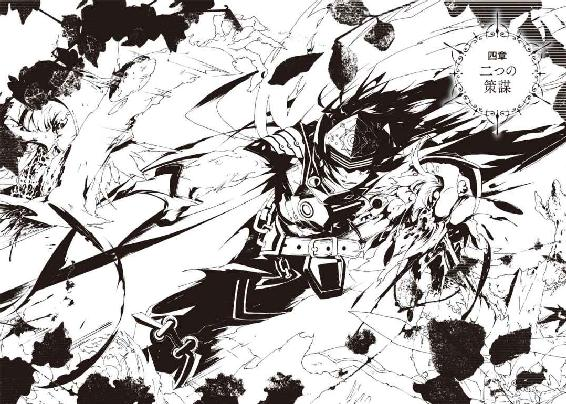

| 六花の勇者 ４ (集英社スーパーダッシュ文庫) | |
| 山形石雄 | |
| (2013) | |

六花の勇者 ４
山形石雄
この本は縦書きでレイアウトされています。
また、ご覧になる機種により、表示の差が認められることがあります。

人物紹介
アドレット
六花の勇者。地上最強の男を自称する少年。
さまざまな秘密道具を駆使して戦う。
フレミー
六花の勇者。他者を寄せつけない冷淡な少女。
銃と爆弾を操る〈火薬〉の聖者。
ロロニア
六花の勇者。臆病で善良な少女。
〈鮮血〉の聖者。
ハンス
六花の勇者。猫の真似をしながら喋る奇妙な男。
人間離れした独特の剣術を使う。
チャモ
六花の勇者。当代最強の戦士と呼ばれる傲慢な少女。
〈沼〉の聖者。
モーラ
六花の勇者。聖者たちの長を務める生真面目で知的な女性。
〈山〉の聖者。
ゴルドフ
六花の勇者。槍を操る巨漢の騎士。
ナッシェタニアに忠誠を誓う。
ナッシェタニア
大国ピエナの姫。〈刃〉の聖者。
ドズーと行動を共にする。
テグネウ
凶魔を束ねる統率者の一体。
知略に優れ、さまざまな罠を仕掛ける。
ドズー
凶魔を束ねる統率者の一体。
魔神と敵対し、六花の勇者に共闘を申し出る。
これまでのあらすじ
闇の底から『魔神』が目覚めるとき、
運命の神は六人の勇者を選び出し、世界を救う力を授ける。
地上最強を自称する少年アドレットは、その『六花の勇者』の一人に選ばれ、
魔神復活を阻止するため戦いへ向かう。
だが、約束の地に集った勇者は、なぜか七人いた。
七人のうち誰かひとりが敵であることに気づいた勇者たちは疑心暗鬼に陥るが、
アドレットを中心に、その知略と聖者の力を駆使して謎を少しずつ解明していく。
凶魔の統率者、テグネウやドズーの謀略が六花の勇者たちの行く手を阻む中、
物語の舞台は魔哭領の奥へと進んでいくのだが...？


イラスト／宮城
プロローグ 暗き洞窟にて
彼は、腕が動かなかった。
そして足も動かなかった。声を出すこともできず、身を起こすこともできなかった。瞼も、眉も、口も、舌も、首も、肩も、胸も、腹も、胴体も、体のあらゆる部分が動かなかった。
今、彼の体は冷たい土の上に横たわっている。ぽっかりと口を開けたまま、だらしなく両手両足を投げだし、暗い天井を見上げている。天井から水滴が落ち、彼の鼻先に当たる。彼は顔をしかめることもせず、ぴくりと震えることもしない。
しかし彼は、生きていた。
彼がいるのは、魔哭領中央北部に広がる、山岳地帯の一角だ。かつてそこで一輪の聖者が、魔神の触手の一撃を腹に受け、呼吸が止まって倒れ伏した。そのことからこの地は、昏倒の山地と名づけられている。
海から北風が吹き込み、空気は凍えるほど冷たい。魔神の放つ障毒によって、全てが赤黒く染まっている。
山のふもとの樹海の中に、ぽっかりと口を開けた巨大な洞窟がある。その洞窟の中に、彼は横たわっている。
彼の姿を常人が見たら、思わず目を背けたくなるだろう。
肌は干からびて、土色になっている。皮膚の一部は無残に剝げ落ち、下の肉や脂肪がのぞいている。肉は腐りかけて、どす黒く変色している。
伸び放題の髪は汚れきっている。粗末な衣服は乾ききり、ぼろ切れのようになっている。
目を引くのは、彼の首の後ろだ。そこに巨大な虫がしがみついている。大きさは短剣ほどもあり、節くれだった体と、カゲロウのような羽をもつ奇怪な虫だ。その触手と脚は、彼の体に深く突き刺さっている。
それは放置され、腐りかけた死体以外の何ものにも見えない。
しかし彼は、生きていた。
彼がいる洞窟を、天井から吊り下げられた小さなランプが照らしている。か弱い光は、異常な光景を映し出している。
平坦にならされた広い洞窟の地面を埋めるのは、死体の列だ。皆が彼と同じように、仰向けに横たわっている。男、女、老いた者、若い者、死体の外見は様々だ。しかしいずれも彼と同じように乾き、腐りかけている。そしてそのどれもが彼と同じように、首の後ろに奇怪な昆虫をつけている。
その数は百や二百ではきかないだろう。数えきれないほどの大量の死体が、縦横に整然と並べられている。
彼はその死体の列の、中央付近に横たわっている。
そしてそこで、生きている。
身動きもできず、声も出せない。外見上は、他の死体たちと何も変わらない。そんな彼が他の死体と違う点は一つしかない。
彼にはまだ、物を思う心が残っているのだ。
暗い天井を見つめながら、水滴の音や他の様々な物音に耳を傾けながら、彼はただ一つのことを思っていた。
六花の勇者を救わなければいけないと。
彼は知っている。今、六花の勇者は未曽有の危機に陥っている。七百年前や三百年前の勇者たちが乗り越えてきたものとは比較にならない、恐るべき事態のただなかにいる。
そしておそらく六花の勇者は、まだそれに気づいていない。
テグネウと呼ばれている凶魔たちの統領が、どれほどありえないことを成し遂げたのか。どれほど恐ろしい切り札を用意しているのか。おそらくまだわかっていない。
六花の勇者は、世界を救う力を持った戦士たちだ。たぐいまれなる洞察力を持ち、人知を超えた聖者の力を使えるだろう。それでもテグネウの切り札の正体を、看破できるとは思えない。テグネウが用意したものは、それほど信じがたい存在なのだ。
彼は知っている。テグネウの企みを六花に伝えられるのは、自分一人しかいない。その策の正体を知っているのは、世界に彼一人しかいないからだ。彼が六花を救わなければ、世界は滅んでしまうのだ。
彼の体は動かない。手も、足も、口も、指も、どれ一つとして動かない。しかし世界の命運は、そんな彼の肩にかかっている。
できるかできないかは、問題ではない。必ずやり遂げなければいけないのだ。六花の勇者を救ってみせる。どれほど光が見えない状況であろうと、希望は必ずあると信じるのだ。
六花の勇者に伝えるのだ。テグネウが造りだした、絶対の切り札。
黒の徒花の正体を。
一章 〈時〉の聖者と黒の徒花
魔神の目覚めから十七日目の深夜。場所は、斬指の森の片隅である。八人は車座になってドズーの話に耳を傾けていた。
「現在ナッシェタニアが持っている、一つ目の偽の紋章。それはもともと〈時〉の聖者ハユハが、私に与えたものなのです」
そう言うとドズーは言葉を切り、全員の顔を見渡した。
「七人目を倒すための手がかりを話す前に、ハユハのことを語らなければいけません。皆さんはハユハについて、詳しい説明が必要でしょうか」
「うにゃ、いらね。おらでも、ハユハの名前ぐらいは知ってるだよ」
とハンスが言った。フレミーも必要ないと、首を横に振る。他の仲間たちとて言わずもがなだ。当然だろう。この大陸に住むものなら、子供でも知っている名前だ。
〈時〉の聖者ハユハ・プレッシオ。二代目の六花の勇者の一員にして、魔神撃破の最大の立役者。その人となりと活躍は、生き残った〈刃〉の聖者マーリィの遺した書に詳しく記述されている。
ハユハは触れた物の時間を操作することができたという。彼女に触れられた仲間は、少しの間、通常の数倍の速さで動くことができるようになった。そして彼女に触れられた敵は、数分の一の速度でしか動けなくなった。
殺傷能力こそ皆無だが、その力は絶大だ。触れることさえできれば、いかなる相手でも無力化できるのだから。二度目の六花の勝利は、彼女なくしてはありえなかったというのが定説だ。
性格は、奇矯であったと伝えられている。子供の落書きのような柄のローブをまとい、大きな木の椀を帽子代わりにかぶっていた。常に左右の違う靴を履き、破れた手袋を右手にだけ着けていた。
ひどい大酒飲みで、猥談と駄洒落をこよなく愛した。いつも仲間を見下したようなことを言い、行動は気まぐれで自分勝手。その人格はいかなる面においても好ましい人物ではなかった、と〈刃〉の聖者マーリィは正直に記している。
そして彼女には一つ、大きな謎があった。魔神を撃破して、故郷に戻る途中、突然姿を消したのだ。行方がわからなくなったのは、魔哭領にほど近いとある村だ。
疲れ果てた三人の聖者は、久方ぶりの人間らしい食事に舌鼓を打っていた。ハユハは頭にかぶっていた木の椀に酒を注ぎ、浴びるように飲んでいた。飲んでは吐き、吐いては飲み、村の酒が尽きる頃、ハユハは仲間に用を足してくると言って部屋を出た。
そしてそれきり戻らなかった。
行方は杳として知れなかった。凶魔に捕らえられ、殺されたという説。その力を恐れたとある国の王に監禁されたという説、はては仲間の六花に痴情のもつれの末に殺されたという説までもが流れた。
大陸のあちこちで、ハユハらしき人物を見たという者も現れた。だがどれも、確たる情報とはいえなかった。
死んだ、とは考えられなかった。ハユハが失踪したあとも、〈時〉の神殿で新たな〈時〉の聖者が選ばれることはなかったからだ。〈時〉の聖者が生きていて、能力を保持している限り、新たな聖者が誕生することはない。
五年の間、捜索が行われた。しかしそれが実を結ぶことはなかった。やがて〈時〉の神殿で新たな聖者が選ばれるに至り、ハユハは死んだものと結論づけられた。
「まさかハユハは.........」
モーラが呟くと、ドズーは小さく頷いた。
「その通りです。ハユハは魔神を倒したあと、魔哭領に戻ってきていたのです。魔神とは何か、彼女はその真実を探ろうとしていたのです」
ドズーはふと、視線をそらしてうつむいた。その横顔に、愛するものを失った淋しさをアドレットは感じ取った。
「ハユハがやってきたのは、魔神の撃破から一カ月ほどたったあとでした。彼女は大きな酒樽を背負って、ふらりと私たちの前に現れました。私と、テグネウと、カーグイックの前に」
アドレットは少し疑問に思った。彼ら三体は敵対していたはずだった。その彼らが、その時は一緒にいたのだろうかと。
その疑問を察してか、ドズーは話題を変えた。
「ハユハのことを話す前に、少し、私たちのことを話しましょうか。ハユハと出会う前の私たちについて」
「興味があるな」
「.........あの時、私たちは友でした。私と、テグネウと、カーグイックの三体は。あの時私は、彼らとは永遠に変わらぬ友情で結ばれていると信じていました」
五百五十年ほど前、魔神の体から小さな肉塊が産み出された。その肉塊はとても小さかったが、手足と、生き延びんとする本能を持っていた。その肉塊は地を這いずり、魔神の体から生えている触手から逃げた。そして運よく、触手の届く範囲から脱出することができた。
凶魔の誕生である。フレミーのような一部の例外を除き、全ての凶魔はこうやってこの世に生まれ落ちる。
その肉塊は魔哭領に生きる小動物や、木の実を食いながら、少しずつ進化を続けた。ほっそりした犬のような姿を手に入れるのに、十年かかった。雷撃を操る力を手に入れるには五十年かかった。そして人間並みの知恵を手に入れたのは、生まれてから百年ほど経ってからだ。
凶魔には、知恵はあっても意思はない。彼らが望むことは魔神を復活させることと、人間を殺すことだけだ。彼らが考えることは、いかに人間を殺すかということと、より上位の凶魔に従うことだけだ。
その凶魔は後にドズーという名を得る。ドズーも当初はそんな平凡な凶魔であった。
生まれてから二百年ほどが過ぎた時、ドズー―――まだその名は付いていないが―――は予期せぬ不可解な進化を遂げた。凶魔は通常は自らの意思で、自らの肉体を進化させる。だがごくまれに、その凶魔自身が望んでいない進化が起きることがある。
その進化でドズーが得たものは、感情だった。
魔哭領には常に、凶魔の泣き声が響いている。人間を殺せない苦しみ、六花の勇者に敗れた悔しさ、そして絶対の主たる魔神が無残に封印されているという悲しみ。魔哭領の名は、凶魔たちの泣き声から名付けられたものだ。
生まれてからずっと聞き続けているその泣き声。自分自身が上げたこともあるその泣き声。
ある日、その耳慣れた泣き声を聞いた時、ドズーは胸に未知の痛みを感じた。その痛みが何かを理解するのに、彼は十年の月日を費やした。
それは悲しみであった。人間を殺せぬことへの悲しみではない。魔神が敗れたことへの悲しみでもない。他の凶魔が悲しんでいることを、ドズーは悲しんでいた。
凶魔は決して、他の凶魔の死を悲しまない。凶魔は決して別の凶魔の苦痛に同情しない。彼らが考えるのは魔神の命令に従うことだけだ。仲間意識などというものは、人間だけが持つものだ。
しかしドズーは、他の凶魔の苦痛を嘆き、他の凶魔の幸せを願うようになった。それは元来、人間を殺すためだけに生まれた凶魔にとって、ありえない進化だった。
それからドズーはひどい孤独に苦しめられることとなる。彼の胸の痛みを、理解できる凶魔などいないのだ。彼は愚か者となじられ、理解できない異物として排除された。ドズーはその時属していた凶魔の集団からはぐれ、魔哭領を放浪した。
一体になったドズーは、喀血の谷の一角、大きな岩の上をねぐらにした。人間たちの暮らす大陸を眺め、背後から響いてくる凶魔の泣き声を聞いていた。
長い間、ドズーは願い続けた。何時の日か、凶魔が泣かずに生きられる時が来ることを。魔哭領が魔哭領と呼ばれなくなる日が来ることを。
六花の勇者を倒し、魔神を復活させ、そして凶魔たちが笑って暮らせる世界を築く。そう誓い、その手段を考え続けた。
ある時不意に、ドズーの横に一体の凶魔が立った。銀のたてがみを持ち、銀の装甲を身にまとった、二足歩行の凶魔だった。その姿をドズーは何度か見かけたことがある。たぐいまれなる力を持ちながら、どこの群れにも属さない奇妙な凶魔だ。
その凶魔はドズーと同じく、岩の上に立って人間の世界を眺めていた。どれだけ時間が経っただろうか、その凶魔は静かに言った。
「お前もか」
ドズーは顔を上げ、その凶魔の顔を見た。
「我もだ」
そしてその凶魔は、手に持っていたイチジクの実をドズーに見せた。実の中央に小さな口が現れるのを見て、ドズーはそれが凶魔だと気づいた。
「ぼくもだよ」
ドズーは頷き、二体の凶魔に向かって言った。
「はい、私もです」
それだけで全てが事足りた。彼らは互いを理解し、そして友情で結ばれた。彼らは同じ望みを胸に抱き、同じ痛みを分かちあった。
人間の手から凶魔を守るため、日々己を鍛える獅子の凶魔。
か弱き凶魔たちに力を与えるため、自らの肉体を捧げるイチジクの凶魔。
凶魔が幸いを得る道を、思索し続ける犬の凶魔。
友となり、互いに名前を付けあった。獅子の凶魔はカーグイック。イチジクの凶魔はテグネウ。犬の凶魔はドズーと名付けられた。
彼らはこの世にたった三体の、凶魔を愛する心を持つ凶魔であった。
そして三百年前、六花の勇者との、二度目の戦いが行われた。
結果は惨憺たるものだった。魔神はまたしても封印され、多くの有力な凶魔が命を落とした。
敗因は明白だった。凶魔には全軍を率いる統領がいなかったのだ。凶魔たちは数十の小さな群れに分かれて、各自ばらばらに六花と戦い、そして敗れていった。
他の凶魔を配下におさめ、命令を下すためには圧倒的な力が要る。魔王ゾーフレアの跡を継ぐような実力を持った凶魔は最後まで現れなかった。
その中で、カーグイックをリーダーとするドズーたちの群れは、健闘したと言えるだろう。
ドズーが策を練り、斥候を務めた。カーグイックは正面から六花と渡り合った。テグネウは配下の凶魔たちに力を与えて、二体の補佐をした。
彼らは人間の大陸に足を伸ばし、とある村で罠を張って六花をおびき寄せた。そしてまだ魔哭領は遠いと油断していた〈風〉の聖者ロイを抹殺した。斬指の森では地中と木の上の両方から同時に奇襲を仕掛け、剣聖ボドルに重傷を負わせた。ハユハと〈刃〉の聖者マーリィが企てた陽動作戦を見抜き、一度は落涙郷の防衛にも成功した。
しかしその奮闘も空しかった。三体は度重なる戦いに疲れ果てていた。ハユハたちの二度目の襲撃を防ぎきれず、落涙郷で魔神は倒された。
「にゃんだべ。長々と何の話かと思えば自慢話だか」
ハンスは肩をすくめ、淡々と語るドズーの言葉を遮った。
「悪いけどにゃ、つまらねえ話につきあってる暇はないだよ」
「失礼しました。じきに本題に移りますので、もう少々お待ちください」
からかってくるハンスを気にせず、ドズーは話を続ける。
アドレットにとっては、実に興味深い話だった。凶魔の誕生や進化の過程については、アドレットの師匠アトロにとっても謎だった。時間が許すのならば詳しく聞いてみたいところだ。二度目の六花の戦いが、凶魔側から語られるというのも面白い。それに、テグネウとカーグイックとドズー、今は敵対する三体が、かつては友だったというのも気になる。
しかし今は、ハユハの話を聞くのが先決だ。
魔神が倒れてから一カ月の間、ドズーたち三体は泣き続けた。魔神を倒される苦しみがいかに深いものか。それを人間に伝える術を、ドズーは知らない。例えるならば、逃れられない死の苦痛だろうか。最愛の人を失った悲しみだろうか。あるいは世界が滅びるのを前にした絶望だろうか。きっとどれも、遠く及ばないとドズーは思っている。魔神の存在が凶魔にとっていかに大きなものか、人間には到底理解できないのだ。
そして彼らは、さらに深い悲しみに身をよじらせていた。愛する凶魔たちが悲しんでいる。なのに自分たちは何もしてやれない。その事実もまた、彼らを苦しめていた。
三体は己を責め、互いをなじり、自らの体を痛めつけ、時には心中すら企てた。
ある時ドズーは仲間たちの泣き声を聞くのに耐えられず、カーグイックとテグネウを置いて走り出した。山に登り、森を走り、谷を渡った。しかしどこに行っても、泣き声はドズーの耳に届き続けた。
ドズーは大岩に頭を打ちつけた。血を流しながら何度も何度も打ちつけた。それだけでは飽き足らず、自らの体を雷撃で焼いた。一日それを続けたドズーは、力尽きて意識を失った。
地面に伏しながら、ドズーは思った。自分たちはなぜ泣き続けなければいけないのだろう。なぜ苦しまねばならないのだろう。なぜ戦わねばならないのだろう。
疑問の答えが出ないまま、ドズーの意識は闇に落ちた。
どれだけの時間が流れただろう。ドズーが目を開けると、自分の体に影が差していた。何者かが、自分を見下ろしているのだ。カーグイックかと思い、上を向いたドズーは、言葉を失った。
「なあ、可愛らしい凶魔君」
笑いながら彼女は言った。
「人間も凶魔も誰一人、泣かずに済む世界に興味はないかね」
かくしてハユハは、ドズーの前に姿を現した。
「にゃあ、ハユハってのは美人だべか？」
またしてもハンスが話の腰を折る。
「お前は黙って話を聞けぬのか？」
「うに。ガキの頃からよく怒られただよ」
モーラに怒られて、ハンスが身を縮める。そして荷物の中からぼろ布を取り出し、剣で服の形に切り始めた。どうやら、話を聞いている間に破れた服の代わりを縫うつもりらしい。落ち着きのない男だと、アドレットはため息をつく。
「.........人間の尺度で見れば、ハユハはさほど美人ではないでしょう。顔立ちは平凡でした。もっとも、それ以外の全てが尋常とはかけ離れていましたが」
ドズーは語り続ける。
ハユハはしばらくの間、ドズーの顔を見つめながらにこにこと笑っていた。ドズーは、彼女が一カ月前に戦った敵であることを思い出した。しかし、何をすべきか全くわからなかった。なぜここにいるのか、先ほど言ったのはどういう意味か、なぜ笑っているのか、どれも理解できなかった。
やがて、カーグイックがテグネウを手に持ってこちらに走ってきた。ハユハを見かけるなりテグネウは悲鳴を上げた。カーグイックはしばし呆然としたあと、全身から焰毒を噴き上げて戦闘態勢を取った。
ハユハは全く動じることなく、笑いながら両手を広げて歩み寄った。
「やあ、獅子君、イチジク君、いいところに来てくれたね。私はハユハ。これから君たちの仲間になるからよろしく頼むね」
「.........何？」
「むむ、ちょっと先走りすぎたね。ええと、何から話せばいいのかね」
ハユハは額に指を当てて考えた。
「そうそう、君たちに協力してほしいことがあるのだね。話を聞いてもらえないかな」
次の瞬間、カーグイックの豪剣がうなった。ハユハの顔めがけて、全力で振り下ろした。その斬撃が止まったのは、ハユハが防いだからではない。逆に、避けようとも防ごうともしなかったからだ。彼女は平然と、頭上で停止した剣を見つめていた。
「おやおや獅子君。どうかしたのかね」
殺されることはあるまいと、高をくくっているわけではなかった。ハユハの表情から、そんな様子は微塵もうかがえなかった。彼女は平然と、眼前にある死を受け入れていた。
「なぜ、避けぬ、六花の勇者」
「ん。私が死んでも誰も困らんからね」
カーグイックがもう一度剣を構えた。ドズーもまた、雷撃を放つ準備をしていた。だがあまりにも隙だらけで、攻撃の機会が摑めなかった。
「ま、立ち話もなんだ。座ろうじゃないか」
ハユハは背中に背負っていた酒樽を下ろし、地面に座った。その態度から、ハユハは本気で死んでも構わないと思っていることがドズーたちに伝わってきた。
いつでも殺せる。そう思ったからこそ、ドズーたちはハユハの話を聞く気になった。もしもほんのわずかでも、ハユハが身を守ろうとしていたら、即座に戦いになっていただろう。
「で、さっきも言ったが君たちに協力してほしいことがあるんだね。たぶん君たちにしか頼めないんだ」
ドズーたちは相槌も打たない。話は聞くが、協力する気など毛頭なかった。彼らの心を占めていたのは、魔神を殺し、凶魔たちを泣かせたハユハへの怒りだけだった。
「私はね、魔神の正体を探ろうと思っているんだ」
三体の凶魔に緊張が走った。
「魔神とは、つまるところどのような存在なのか。なぜ、どんな経緯で生まれたのか。それを知りたいと思っているんだね。そのために君たちの協力が必要なんだ」
三体は何も言わない。
魔神はなぜ生まれたのか。ドズーやカーグイックたちのみならず、全ての凶魔が考えたこともない問いだった。魔神はただ魔神であり、その存在に疑問を感じたことはない。
「おそらく、君たちも魔神の正体を知らないのではないかね。これは根拠も何もない、私の直感なのだが」
三体は何も答えなかった。代わりに、カーグイックが質問を返した。
「.........魔神の正体を探ってどうするつもりだ。封じるだけでは飽き足らず、殺そうとでもいうのか！」
「魔神を殺す？ 何のために？」
きょとんとハユハが首をかしげた。ドズーたちはあっけにとられた。
「人間を守るために.........ではないのか？」
「ああ、なるほど。人間を守るか。考えたこともなかったよ」
ドズーはしばし呆然としていた。この相手はつい一カ月前、人間を守るために戦った六花の勇者の一員ではないのか。
「まあ、殺すつもりはないね。魔神が死ぬより生きていたほうが楽しそうだからね」
「.........た、楽しそう？」
「魔神が生きてれば、魔神と遊ぶことができるじゃないか。死んじゃったらもう遊べないね。それじゃあつまらないね」
ドズーたちは、ただあっけにとられるばかりだ。
「楽しいかどうか。私にとってはそれが全てだね。それ以外の一切は、つまらぬ幻だよ。愛やら正義やら、どうでもいいことにこだわる連中の気が知れないね。そうは思わないかね、凶魔の諸君」
ハユハは頭にかぶっていた椀を外すと、酒樽を傾けて酒を注ぎ始めた。美味そうに一口飲むと、椀をカーグイックに差し出した。
「ところで、一杯やらないかね。凶魔と酒を酌み交わすのも楽しそうだ」
カーグイックは、しばしその酒の椀を見つめていた。そして椀を受け取ると、口の端から酒をこぼしながら一息に飲みほした。
「ああ、もったいない。こぼすなよ、上物なのに」
「反吐が出る味だ」
そう言って椀をハユハに突き返す。淋しそうにハユハは残った酒をなめる。
「我らは魔神を守るために生きる存在だ。魔神の願いをかなえるために生きる存在だ。魔神を危機に陥れる行いに、加担すると思うのか」
「ふむ。やはり無理かねえ」
「だが.........魔神の正体を知ることが、あるいは次なる戦いの勝利につながるやもしれぬ」
ドズーは驚いてカーグイックの顔を見た。
「凶魔の力を増す術、凶魔を今以上に増やす術、あるいは魔神の封印を解く術、貴様に協力することで、見つかるかもしれぬ」
「カーグイック！ 何を考えているのです!?」
「ドズー。三度目の戦いはすでに始まっている。次なる六花を撃破するためになら、我はいかなることでもするぞ」
「相手は人間ですよ！ しかも六花の勇者です！ 協力なんて！」
「正気かい、カーグイック」
テグネウも驚いている。
「正気でないと思うなら、我を見捨てていずこでも行くがよい。引き止めはせん」
「しかし.........」
戸惑うドズーたちに、ハユハが呑気に言った。
「喧嘩はよくないと思うねえ」
誰のせいだ、とドズーは思う。
「ハユハ。貴様を利用して、我らは人間を滅ぼす。それでも構わぬのなら協力しよう」
「もちろん大歓迎だ。獅子君。お名前はカーグイックでいいのかな？」
ハユハが酒を注ぎながら笑う。
「あ、そうそう。さっきの質問に答えておくよ。魔神の正体がわかったら何をするか」
「聞こう」
「もしも、魔神の正体がわかったら.........いや、魔神の正体が、私が予想した通りのものであったのなら.........」
ハユハは一息に酒を飲みほした。
「魔神と友達になろうと思う。魔神と私で、酒を酌み交わしてみたいと思っている」
「友達、だと？」
「楽しかろ？ 世界の歴史上、一番楽しい酒宴になるだろうよ。魔神と私だけじゃ淋しいね。凶魔も人間も関係なく、この地上の全てを集めて宴会だ。それが一番楽しそうだよ」
ハユハは笑う。
「もしかしたらそのあとで、人間が滅ぶかもしれんがねえ。それはそれでまあいいさ」
カーグイックが、小さく肩を震わせた。怒っているのかと思ったら、次の瞬間けたたましく笑い出した。
「.........ハユハ。本当に貴様は人間が滅んでもよいのだな？」
カーグイックが尋ねると、ハユハは楽しそうに答えた。
「世界を救うのは一度やったからね。次は滅ぼしてみるのも面白いかもしれないね」
ハユハが何を考えているのか、ドズーには全く理解できない。だがもはや、彼女に協力せざるを得ないだろうということはわかっていた。カーグイックは彼らのリーダーだ。どこだろうと彼の行くところに、ついていかなければいけない。
話を聞きながら、アドレットは思っていた。ハユハはまともじゃない、と。伝承から奇人であることはわかっていたが、これほどとは思わなかった。
「ハユハには、人間に対する帰属意識というものが抜け落ちていました。責任感や使命感、正義感といったものとも無縁でした。自分が楽しければそれでいい。人間の命運も、自分自身の命すら、どうでもいいものと考えていました。六花として魔神と戦ったことすら、彼女にとっては娯楽に過ぎなかったのでしょう」
「.........」
「魔神を倒してから、退屈になった。次の遊びを思いついたので、やってみた。おそらく、ハユハが魔哭領にやってきた理由は、それが全てでしょう。人間と魔神と凶魔の全てを集めた大宴会。彼女も、途方もない遊びを思いついたものですよ」
仲間たちは何も言うことができなかった。
「かくして、私たち三体は、ハユハの仲間になりました。それから五年の間、我々は行動を共にしていました」
そこで話が一段落ついた。ドズーはいったん、言葉を切る。
話の続きを聞く前に、仲間たちは周囲を探った。ここがテグネウに発見され、襲撃を受ける可能性があるからだ。しかし周りに凶魔の気配はない。
アドレットたちは元いた場所に戻り、ドズーの周りに座った。
「しかし、どうやって魔神の正体を探ったのじゃ？」
モーラが問う。それはアドレットにしても疑問だった。千年の時をかけて、人間たちは魔神の正体を暴こうとしてきたのだ。凶魔の協力を得たところで、そう簡単にできるとは思えない。それに話を聞く限り、凶魔たちも魔神の正体は片鱗すら知らなかったようなのに。
「ハユハには可能だったのです。歴史上、ただ一人、彼女にだけは」
「どのような力を使ったのだ」
「彼女は、時の流れを操り、過去の出来事をその眼で見ることができたのです」
モーラが衝撃を受けている。チャモやロロニアも同様だ。
「そんなにすごいことだべか？〈時〉の聖者ならできそうなもんだべよ」
ハンスが尋ねる。彼は話を聞きながら、針と糸を取り出して布を器用に縫っている。
「数多ある聖者の力の中で、〈時〉の力は最も扱いにくいものとして知られている。歴代の〈時〉の聖者はそのほとんどが、物が腐るのを遅くする程度の能力しか使えなかったのじゃ。
〈時〉の力を戦闘に応用できたという時点で、ハユハの力が桁外れのものであることはわかっていた。だが、過去を見るとは.........」
チャモが言う。
「桁外れのもう一つ桁外れだね。さすがのチャモもちょっとだけびっくりだよ」
「おめえがそう言うんなら、ほんとにすげえんだにゃあ」
ドズーが話を続ける。
「しかし、ハユハとて無制限に過去を見ることはできません。過去を見るためには、その出来事が起きた場所に行き、そこに〈時〉の力を高めるための神言を記してから術を使わなければなりませんでした。
私たち三体が古くから生き延びている凶魔から情報を集め、ハユハを手がかりとなりそうな場所に案内する。そして他の凶魔が近づかないようにする。それからハユハが術を使い、過去に起きた出来事を知る。
そうやって私たちは、魔神の正体を探っていきました。魔哭領を歩き回り、過去の出来事を探りました。時には変形型の凶魔の力を借りて姿を変え、ハユハと共に人間の世界に向かうこともありました。そして私たちは、魔神の正体にたどり着いたのです」
「それは？」
アドレットの問いに、ドズーが答えかけたその時であった。ドズーの眼前で、地面から小さな刃が現れた。
「！」
仲間たち全員が、ナッシェタニアを見る。ゴルドフの腕に抱かれたまま、彼女はドズーに向かって小さく首を横に振った。
「そうですね、ナッシェタニア」
ドズーはそう言って、仲間たちに向き直る。
「申し訳ありませんが、魔神の正体は、今はまだお話しすることはできません。いずれ話すべき時が来れば、全てをお教えいたします」
「全てを話すのではなかったのか？」
「七人目を見つけるための手がかりについてなら話すとは約束しました。何もかもを話すとは申し上げていませんよ」
アドレットとドズーが睨みあう。
「いいとこまで話して以下次回に続く、か。酒場の吟遊詩人がたまに使う手だにゃあ」
ハンスの皮肉にも、ドズーは動じない。
「なぜ話さない」
「手の内を全て明らかにしてしまうわけにはいきません。あなた方に勝つためには」
「.........なるほどな」
ナッシェタニアとドズーは、魔神の代替わりを企てているという。そのために彼らは何をするつもりなのか、アドレットたちには未だ不明のままだ。魔神の正体が明らかになれば、その代替わりの手段も同時に明らかになってしまうのだろう。
何がいずれ話すべき時が来ればだ、とアドレットは思う。決着がつくまで、話すつもりはないということではないか。
「チャモ、気になるんだけどなあ、魔神の正体。話してくれなきゃぶっ殺しちゃうよ」
額に青筋を立てながら、チャモが猫じゃらしを揺らした。つい先ほど殺されかけたばかりなのだ。今は大人しく話を聞いているが、チャモの機嫌はすこぶる悪い。
「やめておいたほうがいいと思いますが。殺してしまったら話を聞けませんよ」
「そうだね、じゃあ拷問だ」
楽しそうにチャモが猫じゃらしを喉に押し込もうとする。その瞬間背後から、ロロニアがチャモに抱きついた。
「待ってくださいチャモさん！」
「離してよアホ牛！」
そのままチャモとロロニアが取っ組み合いを始める。アドレットやモーラがため息をつく。ナッシェタニアはそれを見ながら、くすくすと笑っていた。
「残念だが、話させることは無理そうだな」
「申し訳ありません。こちらにも事情があります。何もかもを話したら、私たちはそこで用済みになってしまいます。そうなればあなた方は、私たちを生かしておく理由がなくなってしまう。生き残るためには、全てを話すわけにはいかないのです」
今最も重要な情報は、ドズーたちの持つ七人目の正体につながる手がかりだ。少なくとも今、彼らと決裂するわけにはいかない。魔神の正体を聞き出すことは、今は諦めたほうがよさそうだ。
「もう拷問なんて面倒だ！ チャモが今ぶっ殺してやるよ！」
「だから落ち着いてください！」
ロロニアを引きはがそうとするチャモの頭を、モーラがげんこつで殴る。チャモがしぶしぶ大人しくなったところで、フレミーが言った。
「それで、ハユハの話と七人目に関する手がかり。それはどこでつながるの？」
「はい、お話しいたします。ハユハと私たちは、魔神の正体にたどり着いたあとも、さらなる真実を追い求めて調査を続けました。我々は、一輪の聖者の正体を探ろうとしたのです」
「さらなる真実とは？」
「お答えできません」
ドズーはそっけなく言った。
「ですが、それは長くは続きませんでした。一輪の聖者の正体を探り始めてから、ほんの一月ほど経った時に、突如としてハユハが命を落としたのです。ハユハの死とともに、過去の調査は終了しました」
「なぜハユハは死んだ？」
「何者かに殺された、と考えるべきでしょう」
妙な言い方だな、とアドレットは思った。殺されたなら殺されたとなぜ言わない。
「どういうことだ？」
「状況を見れば、殺人以外の死因は考えられません。ですがあの時、ハユハを殺すことは誰にも不可能でした。私たち三体のうちの誰にも。無論、他の凶魔や人間たちにも」
「うにゃにゃ。おめえが殺したんじゃねえだか？」
いつの間にか新しい上着を縫い終えたハンスが笑いながら言った。
「違います。ですが今それを証明することは不可能です」
ハユハの死因については重要ではない。ドズーは話を続ける。
「それから始まったのは、内紛でした。魔神の正体を知ったことで、私は魔神への忠誠を失いました。そして、新たな魔神の支配する世界を、人間と凶魔が共存する世界を夢見るようになったのです。カーグイックはそれに激しく反発し、私と対立しました。カーグイックは魔神の正体を知ってもなお、忠誠を失わなかったのです。テグネウは私とカーグイックの仲を取り持とうと努力していました。その後百年を経て、私たちの同盟は決裂し、私はわずかな手勢を引き連れて魔哭領を去ることになりました」
「薄っぺらなものだったのね。あなたたちの友情というのは」
フレミーの言葉に、ドズーがわずかに毛を逆立てた。何か言い返そうとしてフレミーを睨むが、すぐに目をそらした。怒りを抑え込み、ドズーは話を続ける。
「ですが、私とカーグイックはテグネウに欺かれていたのです。テグネウは私とカーグイックに隠れて、密かに一輪の聖者について調査を行っていたのです」
「テグネウ、か」
「ハユハは過去を知るための聖具を残していました。それはハユハの死とともに、失われたものと思っていました。しかしテグネウはそれを密かに手に入れ、一輪の聖者について探っていました。おそらくは、ハユハの死からそう間もないうちから。情けない話ですが、私がそのことに気づいたのは、ハユハの死から二百年も経ってからでした」
アドレットは考える。
「つまり、テグネウは一輪の聖者に関する何らかの秘密を知った。それをお前たちに隠すため、口封じにハユハを殺した。そういうことか」
「.........断定はできません」
「状況から考えれば、そうとしか思えないんだが」
アドレットが言うと、ドズーは地面を見つめたまま考え始めた。
「いえ、不可能だったのです。あの時、テグネウがハユハを殺すことは.........」
しばしドズーは思い悩んでいたが、考えても意味がないと悟ったのか、話を戻す。
「ハユハのことは置いておきましょう。そろそろ本題に移りましょう。私が知っている、七人目についての手がかりについてお話しします」
やっとか、とアドレットは思った。
「テグネウは今申し上げたように、一輪の聖者について密かに調べていました。それのみならず、聖者の力そのものについても調査していたのです。テグネウとその配下は様々な場所で人間をさらい、魔哭領に連れてきていました。万天神殿や各地の神殿に住む修道女たち、あるいは聖者の力を研究する神学者たち、時には聖者すらも」
それはすでにわかっていたことだ。テグネウは、〈火薬〉の聖者であるフレミーを産みだしたのだ。聖者や神の力についての知識を豊富に得ていることは明白だ。
「目的は当然、六花を抹殺すること。その切り札を造り出すことです」
「聖者についての知識を収集していたのは、私を造るためと聞いていたわ」
フレミーの言葉に、ドズーは首を横に振る。
「それは違います。あなたはおそらく、テグネウの研究の副産物に過ぎません。あるいは、テグネウが真の目的から目をそらさせるために行った、隠蔽工作なのかもしれません」
フレミーは複雑な表情を浮かべた。
「私もあなたこそが、テグネウの切り札なのではないかと考えたことはあります。しかしあなたは高い戦闘力こそ持っていますが、単なる一人の聖者でしかありません。それに、もしもあなたがテグネウの切り札なのだとしたら、チャモさんと戦わせるはずもなく、まして手放すはずもありません」
「.........そうね」
フレミーは目をそらしながら言った。
「私の同志たちはテグネウの配下に紛れ込み、その切り札の正体を探りました。テグネウ派の中核にいる凶魔と接触し、時には尾行し、聞き耳を立てて情報を集めました。しかし、テグネウの秘密主義は徹底していて、断片的な事実を知るのが精いっぱいでした。
カーグイックもその正体を探ろうとしていましたが、結果は出ていないようです」
「どんな情報を摑んだ」
「一つ目は、テグネウの切り札が聖具であることです。人間の聖者や、神の力を得た凶魔などではなく、あくまでも道具であるということです。これはテグネウ派の中核にいる凶魔が、はっきりと言ったことです」
聖具とは、聖者によって神の力が込められた道具の総称だ。アドレットたちが持っている六花の紋章も、聖具の一種である。
「そして二つ目はその聖具の名。これはテグネウが書いた指示書を盗み見ることで判明しました。テグネウはその聖具を、黒の徒花と名付けています」
徒花とは、実を結ばずに散っていく花のことだ。アドレットは口の中で、小さく呟いてみた。何かひどく、不吉な予感がした。
「三つ目の情報は憶測です。黒の徒花なる聖具には、おそらく〈運命〉の神の力.........一輪の聖者が持っていたものと同種の力が込められています。テグネウは一輪の聖者について調べ上げ、その情報を何百年も秘匿していたのです。当然の推論でしょう。
そして四つ目は.........アドレットさん。地図を出してもらえますか？」
アドレットは鉄箱の中から地図を取り出し、ドズーの前に広げた。一輪の聖者や過去の六花が残した情報を元に書かれたものだ。アドレットたちが通った場所についても、端書を記してある。
「ここです」
ドズーはころころとした前足を、地図の上に乗せた。魔哭領中央北部にある、昏倒の山地と呼ばれる場所だ。前足はその中央やや北よりのところを指していた。
「テグネウはここに、〈運命〉の神を祭る神殿を築きました」
ゴルドフを除く仲間たちは、ドズーの指し示した地図の一点を見つめる。かつての一輪の聖者は〈運命〉の神を祭る神殿を世界各所に建造した。アドレットが乱入した武闘会の会場も、〈運命〉の神殿の一つだ。
「〈運命〉の神殿は、一輪の聖者以外は建てられぬ。他の者が造っても、神は宿らぬはずなのじゃが.........」
と、モーラが言った。
「ですが、実際に建てたのです。そしてテグネウはこの〈運命〉の神殿で、黒の徒花を造り出しました。これは私の同志が死を賭して得た、確実な情報です」
「黒の徒花.........それが、七人目が持つ偽の紋章のことだと？」
アドレットが聞いた。
「その可能性は極めて高いと思います。また、たとえ違うとしても、この場所には行く価値があると考えます。テグネウは七人目の他にも、さらに黒の徒花という切り札を所持しているということですから。
さらにもう一つ。テグネウは今も、この地の周辺に凶魔を配備しているようです。しかも特質凶具の精鋭たちと思われます。あなた方が魔哭領にやってきた今も、テグネウはまだその精鋭たちを動かしていないようです」
ドズーは地図から前足を離した。そのあともアドレットは、地図の一点を見つめ続けていた。
「私たちが持つ、七人目に関する手がかりは以上です。これらの情報を信じるか否か、そのうえでどう行動するかは、皆さんにお任せします」
そう言ってドズーは下がり、ゴルドフに抱きかかえられたナッシェタニアに近づいていった。ナッシェタニアは笑いながら手を挙げ、そっとドズーの頰を撫でた。
「どうする、アドレット」
モーラが尋ねてきた。アドレットは地図を見つめたまま考え続ける。
ドズーの言っていた、〈運命〉の神殿がある場所は、ここからそう遠くない。道中何事もなければ、丸一日あれば十分だろう。落涙郷に向かうルートからは少し外れるが、さほど時間の浪費にはならない。
問題はそこに、向かう価値が本当にあるか否かだ。そして罠ではないといえるのかだ。
「もっと情報が欲しいな」
そう言ってアドレットは、再度ドズーを見た。
「お前の手下は、テグネウ陣営に潜り込んでいたそうだな。他に、何か摑めていないのか？」
「正直、さしたる情報はありませんが」
ドズーは少し考えてから、口を開く。
「では、まず一つ。テグネウ陣営に属する凶魔たちのほとんどは、今も七人目が誰かを知りません」
アドレットが驚く。十分に重要な情報ではないか。
「フレミーさんと同じく、テグネウ陣営に潜入していた私の同志たちも偽の六花を送り込むという計画を知りませんでした。テグネウ陣営のほとんどの凶魔がそうだったのでしょう。凶魔たちに七人目の存在が知らされたのは、あなた方が魔哭領に接近してから、具体的に言えば魔神の目覚めから十日が過ぎてからでした」
アドレットは思い返す。十日目というと、霧幻結界での戦いが始まる少し前だ。
「十日目の昼間に、魔哭領全体に伝令が走り、七人目の存在が伝えられました。六花の勇者の中に一人、偽者を紛れ込ませておいた。その偽者が勝利をもたらしてくれるだろうと、テグネウは言いました」
「.........」
「そして七人目が誰かを知る必要はない。全員を敵だと考え、殺すつもりで戦え。もしも自分が七人目だと言って近づいてくるものがいても、迷わず殺せと」
「もし凶魔が七人目を殺してしまったら、奴はどうするつもりなんだ？」
「潜り込んでいた同志が、そのことをテグネウに確認に行きました。もちろん、他のテグネウ陣営の凶魔たちも同じことを聞いたようです。テグネウは笑って、対策はすでにできている。七人目が死ぬことはない、とだけ答えたということです」
「対策とは何かしら」
「.........見当もつきません」
フレミーの呟きに、ドズーが首を横に振る。
アドレットはこれまでの戦いで、凶魔の動きを観察していた。手加減をしている様子はないか、不自然な動きはないか。凶魔の戦い方から、七人目の正体を推測しようとしていた。
何も読み取れなかった理由が、ようやく理解できた。
「徹底しているわね。テグネウは、何があっても七人目の正体を感づかれたくないのね」
「しかし、対策とは何じゃ？ 七人目は凶魔からどうやって身を守っておるのだ」
ロロニアが首をかしげながら言う。
「ううん、匂いとかでしょうか？ 凶魔が攻撃できなくなる香水をつけてるとか.........」
「それなら私がわかるわ。凶魔の行動も不自然になるはずよ」
「ああ、そうか.........」
話し合う仲間たちをよそに、ハンスが言った。
「おめえの同志ってのは、まだテグネウ陣営にいるべか？」
ドズーは首を横に振る。
「いえ、すでに全滅しました。敗走したナッシェタニアを保護するために、テグネウの指揮下を離れざるを得なかったのです」
「何日まで、おめえの同志はテグネウ陣営にいた？」
「十二日目の夜までです」
ハンスは何かを考えている。
「ところで、姫さんが戦ってる間、おめえは何してただ」
「私は魔哭領にいました。同志たちと共に、テグネウやカーグイックが私たちの計画の邪魔をしないよう工作していました。それがどうかしましたか？」
「うんにゃ、別にどうもしねえよ」
そう言ってハンスが質問をやめた。何かを考えているようだが、その内容まではうかがい知れない。その時、ずっと黙っていたゴルドフが急に口を開いた。
「姫が、捕まっている時、何か、なかったのか？」
アドレットは驚いた。ゴルドフは会話に参加するつもりがないものと思っていたからだ。黙ると決めていたのではなく、単に喋ることがなかっただけのようだ。
「え？ あ、はい」
ゴルドフが口を開いたことに、ドズーやナッシェタニアまで少し戸惑っている。
「.........一つだけあります。ナッシェタニアが凶具の二十六番に飲み込まれたあと、私はテグネウにかまをかけてみました。この隙に七人目を動かして、六花を殺すつもりなのかと」
「それで？」
「テグネウは私を馬鹿にしたような口調で答えました。何を言ってるんだい。攻撃はもう実行しているよ、と」
「.........」
「私はすでに一人か二人は、七人目に殺されているのだと思っていました。全員無事にそろっていると知った時は、正直少し驚きましたよ」
アドレットはあごに手を当てて考える。攻撃はもう実行している。聞き逃せない言葉だった。単なる噓の可能性もあるだろう。しかし事実だとしたら、アドレットたちは現在、深刻な危機にあるということだ。敵の攻撃の正体が摑めないこと。それに勝る危機はない。
「私が提供できる手がかりは、この程度です」
これで話は終わりか、とアドレットが思った時、さらにフレミーが尋ねた。
「.........一つ重要なことを話していないわ。ナッシェタニアが持っている、一つ目の偽の紋章。それはどうやって入手したの？」
確かにそこも聞いておかなければいけないところだ。ハユハのことや、黒の徒花のこと。考えねばならないことが多すぎて忘れていた。
テグネウがどうやって偽の紋章を得たのかという謎を、解明する手がかりにもなるかもしれない。
「はい、お話しいたします。さほど込み入った話ではありません。
ご存じのとおりハユハは、触れた対象の時の流れを操作する能力がありました。彼女は、その力を六花の紋章そのものに使用したのです。本来、六花の紋章は魔神を撃破してから、六カ月ほどで自然に消滅するもの。しかしハユハは、消滅までの猶予を半永久的に引き延ばしたのです。ハユハは六花に選ばれるとすぐに、その術を使いました。ですから彼女の紋章は、消えることも花弁が欠けることもないのです」
ハユハは五年もの間、魔哭領に留まっていたという。その力によって可能になったのかと、アドレットは納得した。
「ハユハは命を落とす少し前に、一度魔哭領を離れました。そこで同行していた私に六花の紋章を譲渡しました。私はそれをテグネウやカーグイックには秘密にしていました。そして時を経て私から、ナッシェタニアに譲り渡しました。それだけのことです」
「え？ 六花の紋章って渡せるものなの？」
チャモが驚いている。
「なんじゃ知らんのか。持ち主が、紋章を持つべき人物と認めたなら、すぐに譲れる。実際に行われたことはないがな」
それはアドレットも知っていた。初代の六花の一人、弓聖バーナが魔哭領に向かう途中、蛮族の長と紋章をかけて争ったことがある。その時立ち会った〈火〉の聖者プルカが同じことを言っていた。
「しかし、凶魔に譲ることは可能なのか？」
モーラがドズーに尋ねる。
「可能でした。全く問題はありませんでしたよ。ただ単に、凶魔に譲ることなど誰も考えなかったというだけの話です。それに」
「実際にここに、六花の紋章を持つ凶魔がいるわ」
と、フレミーが言った。
「うにゃ。ハユハがおめえにだけ紋章を渡したのはなぜだにゃ？」
ハンスに問われて、ドズーは少し言葉を探す。
「私の夢である、魔神の代替わり。それを実現させるためには、どうしても六花の紋章が必要なのです。ハユハは何を考えているのかわからない人でしたが、彼女もまた凶魔と人間の共存を目指していた節がありました。あるいは、彼女得意の気まぐれなのかもしれませんが」
「なして必要なのかにゃ？」
ドズーは沈黙し、ハンスは肩をすくめる。
「.........言えねえってことだにゃ」
ドズーは頷く。しかし、魔神の代替わり、そして人間との共存とは、いったいどうすればできるのだろう。そのためになぜ、六花の紋章が必要なのだろう。疑問は深まるが、今ドズーから聞き出すことは、不可能だろうとアドレットは判断する。
「テグネウが持っている偽の紋章も、同じ方法で造られた？」
とフレミーが問いかける。
「その可能性は低いと考えています。ハユハと共に生き残ったメルラニアとマーリィの紋章は、何事もなく消滅したことが確認されています」
「他の三人は？」
「〈風〉の聖者ロイは、魔哭領にたどり着く前にカーグイックに殺されました。剣聖ボドルは、凶魔に一撃で首をはねられたと伝えられています。〈塩〉の聖者マーニャカムは、仲間を守るために囮となり、多数の凶魔を道連れに自爆したそうです。皆、誰かに紋章を譲り渡す暇があったとは考えられません」
「.........最初の六花の勇者は？」
「ハユハと同じことができる〈時〉の聖者が、他にいたと？」
ドズーの問いに、フレミーが首を横に振る。
「じゃあ、テグネウはどうやって偽の紋章を造ったのさ？」
チャモが聞く。
「残念ながら、わかりません」
「役に立たないなあ、やっぱ殺す？」
ロロニアがまた飛びつこうとする。だがチャモは、今度は本気ではないようだ。
「偽の紋章は、その〈運命〉の神殿で造られたと考えるべきか？ モーラ、どう思う」
アドレットはモーラに目を向けた。この中で最も聖者の力に詳しいのがモーラだ。
「正直に言うが、見当もつかぬ。一輪の聖者.........〈運命〉の聖者については我々にもわかっていないことが多すぎる。他の聖者に適用できる法則が、〈運命〉の聖者にも通じるという保証はどこにもないのじゃ」
確かにその通りだ。魔神に負けず劣らず、一輪の聖者にも謎が多い。
彼女は魔神に世界が滅ぼされかけた時、突如としてこの世に現れた。そして彼女が現れる前に、聖者なる存在はどこにもいなかった。他の全ての聖者は一輪の聖者が魔神を倒したあと、人々に聖者になる方法を教えたことで誕生したのだ。
彼女はどうやって聖者になったのか。そしてどうやって聖者になる方法を知ったのか。彼女が聖者になった〈運命〉の神殿はどこにあったのか。歴史はそれを語っていない。
さらに彼女の最期も、現代には伝わっていない。六花の勇者を選ぶための〈運命〉の神殿を建造し、様々な聖者を選び出し、六花にまつわる伝承を人々に残した。やるべきことを全て終えると、彼女はひっそりと姿を消した。その遺体も、墓も、この世には遺っていない。
そもそも、一輪の聖者は本名すらわからないのだ。
一輪の聖者は魔神と同じく、この世に忽然と現れた。そして世界を救うや否や、あっという間に姿を消した。本当に人間であったのかすら、疑わしい。
「考えてみりゃ、妙な話だにゃあ。おらたちは一輪の聖者の正体すら知らねえ。なのに、一輪の聖者の言うことに大人しく従って、こうして戦ってるだ」
「.........たしかにな」
「依頼人の名前も聞かずに殺しを引き受けるなんざ、おらの主義じゃあねえんだがにゃあ」
冗談で言っているのか、それとも本気でぼやいているのか。アドレットにはわからない。
ふと、アドレットは右手の紋章を見た。持つ者に世界を救う力を与える、六花の紋章。不死にして無敵である魔神は、この紋章がない限り傷一つつけられない。この紋章に込められた〈運命〉の力が、魔神の不死の運命を否定するのだと言い伝えられている。さらにはこの紋章がなければ、アドレットは魔哭領で呼吸もできないのだ。
六花の紋章は、世界を救うには不可欠だ。だが自分たちは、その六花の紋章について本当は何も知らないのかもしれない。アドレットの胸に不安が渦巻く。
一輪の聖者、彼女は何者だったのだろう。
「モーラ。もしも、その〈運命〉の神殿に行ったとして、そこで何が行われていたかわかるか？」
「聖具を造るための神言結界や祭壇が残っていれば、何が造られていたのかはある程度わかる。しかし、先ほども言ったとおり〈運命〉の聖者は謎に満ちておる。全てがわかるとは言いがたい」
「神殿にいる奴に聞いてみたらどうだにゃあ」
ハンスが言った。そこにドズーが口を挟む。
「神殿には、かつて多くの人間がいたという情報を得ています。修道女や学者ら、聖者の力に詳しい人間たちです。彼らなら間違いなく知っているでしょう」
「.........テグネウが、そいつらを生かしておくとは考えられない」
フレミーが言った。ドズーも頷く。テグネウは徹底的に秘密を隠そうとしている。ほんのわずかでも情報が漏れる可能性があるなら、潰していないわけがない。
「それでも、行ってみねば何もわからぬぞ」
モーラが渋い顔で言った。
仲間たちの間に沈黙が落ちる。全員がどうするべきか、思案を巡らせている。
「第一の問題は、ドズーが真実を語っているかどうか」
アドレットが言うと、しばらく黙っていたチャモが口を開いた。
「絶対反対だよ。チャモはドズーなんか信用できない。話も聞き終えたし、ぶっ殺しちゃえばいいじゃん」
「チャモ、わたしは正直、魔神の正体というのが気になって仕方がない。殺すとしても、それを聞いてからのほうが良い」
「じゃあ、ごーもんしようよ、ごーもん。チャモが骨も内臓もめちゃくちゃにしてやるよ」
猫じゃらしを揺らすチャモに、フレミーが首を横に振る。
「ドズーとテグネウが敵対しているのは間違いのない事実。協力したいという申し出に、噓はないと思う。さっきまで喋っていたことも、全てが真実とは思えないけれど、全てが噓でもないと思うわ」
「え？ フレミーは信じるの？ こんなアホ犬」
チャモが不愉快そうに眉をひそめる。
「噓は言ってないんじゃないかなあって.........あたしも思います」
ロロニアが周りの顔色をうかがいながら言った。
「まあ、噓とわかりゃ殺せばいいだけの話だにゃよ。殺してえっていうチャモの気持ちもわかるがにゃあ。もうちっと待ったらどうだ？」
「.........猫さんがそう言うなら」
チャモはしぶしぶ猫じゃらしを収める。その時突然、ゴルドフが言った。
「罠だと、思う」
ドズーを含めた全員が、ゴルドフの顔を見つめた。
「姫や、ドズーがテグネウと共謀し、俺たちを殺そうとしている、可能性がある。ドズーとテグネウは敵対している。だが俺たちの排除を、優先して、手を組んでいる、恐れがある」
「.........意外なことを言うな。ゴルドフ。お前はそっち側じゃないのか」
アドレットは言った。彼はすでにドズー陣営についたものと思っていた。
「俺は、姫を守る。だが、姫やドズーの野望に、加担するつもりは、ない。俺は六花から、姫を守る。そして姫から、六花を守る。世界も、姫も、両方守ってみせる」
その眼を見れば、理解できる。ゴルドフは本気だと。ナッシェタニアが、ゴルドフの腕の中で彼を見つめている。その顔から、内心はうかがえない。
「ゴルドフさん、あなたはそう言うと思っていました。だから、私たちは仲間に引き入れなかったのです」
「そうか」
「あなたの頭がもう少し柔軟なら、私たちの計画も変わっていたのですが」
ドズーがそう言ってため息をつく。
「姫が敵であろうと、関係なく守るのか。全く、何を考えているのじゃ」
モーラがぼやく。アドレットも同感だ。他の全員が同じ気持ちだろう。しかしゴルドフの目には一点の曇りも迷いも見えなかった。
「ゴルドフ、さっきの戦いを見る限り、テグネウは完全にナッシェタニアを殺すつもりだったぜ。今も手を組んでいるとは考えられねえな」
「可能性は、低い。だが、恐れはある」
「たしかに、警戒を怠るわけにはいかねえな。だが俺は、ドズーが真実を語っている可能性を無視できない」
「.........わかった」
ゴルドフが引き下がる。ナッシェタニアが、ほっと安堵の息を吐いた。
「じゃあ、第二の問題だ。ドズーの話が真実だったとして、ここに本当に有益な情報があるのか？」
アドレットが地図の一点を指さす。昏倒の山地の中央、〈運命〉の神殿があるという場所だ。
「テグネウが証拠や情報源になりそうなもんを残しておくかにゃあ。おらなら壊しておくべよ」
「そうとも限らん。聖具の中には、神言結界や祭壇を壊してしまったら、効果が消滅するものもあるのじゃ。強力な聖具ほど、そのようなことが多い」
「聖者ってのは難しいにゃあ。おらにゃわからねえ」
ハンスが頭を搔く。
「それに、テグネウは凶魔を配備して、そこを守っているんだろう？ 少なくとも、見られたくないものがあるんだ」
「それ自体が、おらたちを誘い込んで殺すための罠かもしれねえべ？ 証拠は全部消えてる、あるのは罠だけ、そうなったらただの時間の無駄だべよ」
確かにそれもありえる。その時、ロロニアが口を開いた。
「あの.........ドズーさん。〈運命〉の神殿の具体的な場所ってわかるんですか？」
「いえ、この付近にあるとしか」
ロロニアが地図を睨みながら続ける。
「その〈運命〉の神殿を捜すのは難しいと思います。この山、かなり広いみたいですけど」
仲間たちが沈黙する。その懸念は的外れだぞとアドレットは思った。
「ロロニアよ。わたしは〈山〉の聖者だぞ」
「ああ、そうでした。すみません、ごめんなさい」
ようやく気づいたロロニアが、皆に頭を下げる。モーラには山の中でのみ使える千里眼の力がある。自分がいる山にあるものを、全て見渡すことができるのだ。彼女がいれば、見つけるのはそう難しくないだろう。
「そもそも.........黒の徒花とは何なのじゃ。七人目の持っている偽の紋章のことなのか？」
「黒くねえけどな、偽の紋章は」
「名前からは判断できないわね。偽の紋章のことにも思えるし、他の何かの可能性もある」
「むしろ、偽の紋章じゃなかった場合のほうが怖えだな。テグネウには七人目の他に、もう一つ切り札があるってことだにゃ」
話し合いを続けるアドレットを、ドズーとナッシェタニアが見つめている。口には出さないが、早く結論を出すようせかしている様子だ。
アドレットは思う。やはり、結論は決まっている。
「決定だ。俺たちはこれから、昏倒の山地に行く。そして〈運命〉の神殿で黒の徒花の正体を探る」
アドレットは普段は、全員の意見を聞いてから結論を下す。しかし今回は、あえて自分の決定に皆を従わせることにした。
「.........危険だぞ」
「チャモの意見は無視なの？」
ゴルドフとチャモが言う。ロロニアとモーラも、まだ迷っているように見える。それでもアドレットは結論を覆すつもりはない。
「確かに、危険はある。だがこの機会は逃せねえと、地上最強たる俺は思う」
「どうして？」
「おそらく俺たちはずっと、テグネウの想定の範囲内で戦っていた。モーラの件も、ゴルドフの件も、全てテグネウの考えた策略に、俺たちが対応していただけだった。
しかし今は違う。ドズーと手を組んだことも、ドズーが〈運命〉の神殿の存在を知っていることも、テグネウは予想だにしていないはずだ。これは奴の手の内から抜け出るチャンスだ。もしかしたら、唯一の機会かもしれねえ」
チャモは沈黙する。
「賛成するわ、アドレット。黒の徒花の正体は必ず摑まなければいけないわ」
「うにゃ。珍しいにゃ。おめえは基本的に危険は回避することを考えてたがにゃ」
「普段はそうね。でも、今は危険を冒さなければいけないと思う」
「どうして？」
「勘よ」
チャモが信じられないといった顔をする。
「ずっと前から、感じていた。見えない手に喉元を摑まれているような息苦しさを。払いのけなければ、確実に殺される。でも、その手の正体がわからない。そんな恐怖を。
黒の徒花とやらの正体を摑まなければ、私たちは終わるような気がする。理屈じゃないの」
実のところ、アドレットにも同じような感覚があった。黒の徒花という名を聞いた瞬間、背筋に走ったどす黒い怖気。それを感じた瞬間、アドレットは何としてでもそれを見つけなければいけないと思ったのだ。
「よろしいのですか？ 私たちと共に、昏倒の山地に行く。そして黒の徒花の正体を探る」
「ああ。決定だ」
アドレットが言った。仲間たちも、思惑は様々なようだが反対はしないようだ。
「わかりました。私たちも、全力を尽くします。共に黒の徒花の正体を探り、七人目を見つけ出しましょう。かまいませんね、ナッシェタニア」
ナッシェタニアが頷く。
「だけど、裏切りには備えさせてもらう」
そう言ってフレミーが、ゴルドフとナッシェタニアのところに近づいていく。そしてナッシェタニアの両足に手を添えようとした。
「何を、する」
「ナッシェタニアの両足に、爆弾を仕掛けさせてもらう。もしも裏切ったら爆破するわ」
場に緊張が走った。ドズーが毛を逆立たせ、ゴルドフが槍を握る。
「.........許すと、思うか？」
「これでも譲歩しているのよ。本来なら、その薄汚い首にでも仕掛けるわ」
ゴルドフとフレミーが睨みあい、ドズーが体から火花を散らす。チャモがにやりと笑い、猫じゃらしを口に当てる。一触即発の状況を、アドレットが止めた。
「テグネウかカーグイック。どちらかを倒すまでだ。片方を倒したら外すと約束する」
「アドレット、甘いわ」
フレミーの言うとおり、備えは必要だ。だがこれ以上条件をきつくすれば、ここで殺しあいが始まる恐れがある。ドズーたちとの同盟関係は、維持しなければいけない。
「.........仕方ないことです」
その時ナッシェタニアが、口から血の泡を吐きながら、しゃがれた声で言った。ゴルドフの手から槍を下ろさせ、フレミーの前に両足を投げだした。
「潔いのね、案外」
フレミーがナッシェタニアの両膝に手を添え、精神を集中する。しばらく経つと、手の中から粘土のようなものが現れて、膝にこびりついた。
「安心して。火気や衝撃では起爆しない。私の合図以外で爆発はしないわ」
「約束を、破ったら、殺す」
ゴルドフがフレミーに言った。
「裏切っていないのに、爆破したら殺す。テグネウやカーグイックを倒しても、解かなければ殺す。お前が偽者でも本物でも、関係なく殺す」
「そう。好きにすればいいわ」
フレミーはそっけなく応えた。
「方針は決まった。具体的な行動を決めるぞ」
アドレットが地図を広げる。全員の視線がそこに集まる。
「この辺りに敵の気配はねえ。テグネウは、全軍を後退させてカーグイックの渓谷の奥に配置するつもりみてえだな。問題は、テグネウがどこで俺たちを待ち受けているかだ」
ドズーが前足で、地図の中央を指す。魔哭領中央から南に広がる、断耳の平原と呼ばれる地だ。そこには身を隠せる森や岩場が点在し、安全地帯となる〈永の蕾〉も二つある。
「私たちが落涙郷に直進するとテグネウが考えているなら、ここでしょう。主力と共にこの付近で網を張るはずです。そして、私たちが〈運命〉の神殿を目指すことを予測しているなら、おそらくはここで私たちを待つでしょう」
次にドズーが指したのは、魔哭領中央北部にある昏倒の山地付近だ。
「もしテグネウに道を塞がれたら、戦わざるを得ないな。最悪でも、しばらく戦えないぐらいの打撃を与えなきゃいけねえ」
「厳しい戦いになります」
「その時は、地上最強の男である俺の見せ場ってことだな」
「.........はあ」
ドズーは戸惑っている。こいつにも、俺が地上最強の男であることを早く理解させなきゃいけないとアドレットは思った。
「テグネウが平原にいるなら、少し楽だな。主力を引き連れて〈運命〉の神殿にやってくる前に、黒の徒花の正体を探り出す。時間との勝負だ」
「他に問題となるのはこの地ですね」
今度は昏倒の山地東部の、一点をドズーは指し示す。
「昏倒の山地は険しく、あなた方でも越えるのには時間がかかるでしょう。安全かつ素早く〈運命〉の神殿にたどり着くには、この東側から森を抜け、山の谷間を進むほかありません。テグネウはここに罠を張るか、あるいは強力な凶魔を配備しているかもしれません」
「何がいようと、蹴散らすだけだ」
とアドレットは断言する。策を弄して戦闘を回避するより、正面からぶつかったほうが良いと判断した。
「具体的な方策は、〈運命〉の神殿に向かいながら決定しよう。これ以上は今話してもしょうがない」
「そうですね」
「ひとまず、ここで休もう。出発は仮眠をとってからだ。二人ずつ交代で見張りに立つ。最初は俺とフレミー、そのあとはモーラとロロニアに頼む。他は、ゆっくりしてろ」
アドレットの指示に従い、仲間たちが地面に転がって休む。ドズーもさすがに疲れていたのか、前足に頭を乗せて眠りにつこうとする。その時フレミーが言った。
「最後に一つだけ、聞きたいことがあるのだけど」
ドズーが目を開く。
「テグネウは、私が六花の勇者に加わっていることについて、何と言っていた？」
ドズーはフレミーの顔を見つめ、そして首を横に振った。
「何も、言っていませんでした」
「そう、よかったわ」
なぜよかったのか。フレミーの発言の意味がわからず、アドレットは少し戸惑った。
「それと、もう一つだけ。私が飼っていた、犬。どうなっているか、知らないかしら」
ドズーは首をひねる。
「.........申し訳ありません。全く何も知りません」
「そうね、知るわけないわよね。もう眠っていいわ」
ドズーは頷き、目を閉じる。他の仲間たちはすでに眠り込んでいる。
時が流れる。仲間たちは眠り続け、周囲に凶魔の影はない。静寂の中でアドレットはフレミーに尋ねた。先ほどの、フレミーの言葉が気になっていた。
「.........なあ、フレミー。何がよかったんだ？」
「何の話？」
「テグネウはお前のことを何も言っていなかった。それがどうしてよかったんだ？」
フレミーは少し考えてから答える。
「もしも凶魔たちが、まだ私を仲間だと思っているのなら、何か一言二言あるはずよ。何も言わなかったということは、私が裏切ったことを、凶魔たちは何とも思っていないということ。私のことを、ただの敵としか思っていないということ」
フレミーは冷たい目で、西の方角を見つめる。
「何のためらいもなく殺せるわ」
アドレットは一つの問いを呑み込んだ。もしも凶魔たちが、まだお前のことを仲間だと認識していたら。お前はどうしていたんだ、と。
かつての同胞たちを殺し、育ての親に等しいテグネウと戦う。フレミーの胸の中では、その葛藤が渦巻いていることをアドレットは察する。しかしフレミーの冷たい表情には、苦悩も迷いも表れてはいない。
淡々とアドレットの指示を聞き、冷静に凶魔たちと戦いながら、フレミーは何を思っているのだろう。もしかしたらアドレットのせいで、彼女は深く傷ついているのではないだろうか。
不意に、アドレットはフレミーを抱きしめたくなった。しかしその手は、動くことはなかった。傷つけずに抱きしめられる自信がない。彼女のためにかけられる言葉が、今のアドレットには思い浮かばない。
「犬、無事だといいな」
そんな当たり障りのない言葉だけが、口から出てきた。
「歳なのよ。私が赤ちゃんの時から飼ってるから。もし捨てられていたら.........」
フレミーが黙る。
「いいえ、大丈夫。賢い子だったわ。まだ足腰もちゃんとしてた。きっと野良でもやっていけてるわ」
「俺も犬は結構好きだ。魔神を倒せたら、会わせてくれ」
「.........ええ、いいわ」
フレミーがなぜ答えをためらったのか、アドレットにはわからない。フレミーはアドレットから目をそらし、静かな森に警戒の視線を送る。
「その前に、黒の徒花ね。正体を暴いて、打ち砕く」
「簡単な戦いじゃねえだろうな」
アドレットは答える。それでも、挑む価値はある。
今までは一切が謎に包まれていた、テグネウの策。その全容を解明する手がかりを初めて得た。ここからは、アドレットたちが攻める番だ。テグネウがアドレットたちに怯える番だ。
ドズーを殺さなかったことを後悔させてやる。地上最強の男に不用意に情報を与えたことが、どれだけ大きな失敗だったか思い知らせてやる。
「ハユハ。魔神の正体。一輪の聖者の真実。私たちが追いかけている謎は思いの外、深いのかもしれない」
フレミーがいつもの冷徹な口調で呟いた。
その時ドズーは、うつらうつらと船をこぎながら考えていた。
ひとまずは、うまくいった。六花の協力を得られ、〈運命〉の神殿に向かわせることにも成功した。前者は可能だと思っていたが、後者は成功の保証がなかった。
ずっと近づけなかった〈運命〉の神殿。そこにはドズー陣営が勝利するために不可欠な鍵があるはずだ。もし夢幻結界での戦いに勝利していれば、テグネウを契約によって従わせることができた。その鍵も、容易に入手できただろう。
しかし今は、六花と協力して〈運命〉の神殿に向かうほかない。
アドレットは自分たちを利用するつもりでいるようだ。それはかまわない。だが同時に自分たちも、六花を最大限に利用させてもらうつもりだ。
さらに目的はもう一つある。テグネウの、真の目的を暴かねばならない。推測はできるものの、どうやって実現させるつもりなのかを見つけなければならない。その答えも、おそらく〈運命〉の神殿にある。
やるべきことは山積みだ。綱渡りの戦いは果てしなく続くだろう。それでもドズーは、諦めるつもりは一切ない。
時が過ぎ、夜が明ける。魔神の目覚めから、十八日目の朝である。
「.........手がかりが、途絶えているね」
テグネウは呟いた。彼は昨日まで使っていた野人の肉体を捨てていた。現在は、肩から数本の触手が生えた狼の姿をとっている。彼の本体であるイチジクの実は、その口の中にあった。
テグネウがいるのは魔哭領中央部に位置する平原である。かつて一輪の聖者が、凶魔の一撃を耳に受けたことから、断耳の平原と呼ばれている。その中央にある〈永の蕾〉の周囲に陣を敷き、六花の勇者を待ち受けていた。
そのそばには、一体の鳥の凶魔が控えている。特質凶具の二番と名付けられていた。早く飛ぶことに特化した能力を持ち、テグネウの側近として伝令と斥候の役目を負っている。そして彼は役割の性質上、テグネウの策の全容を知ることができる立場にあった。
「六花はお休みかな。それとも、話し合いの最中か。まさかドズーたちと殺しあうほど馬鹿ではないよね」
配下たちは六花の勇者を捜して断耳の平原に散っている。発見の報告はまだない。しかしテグネウの声には余裕がうかがえた。
「我々がここに陣取ってイることヲ読んで昏倒の山地のほうを通るつもりカも」
「あっちを通るのは辛いと思うけどねえ」
「あるいはドズーに、〈運命〉の神殿の情報が漏れていたノかもしれまセん」
「まさかそれはないと思うがねえ」
テグネウが触手を動かしながら答える。
凶具の二番は考える。もしこのまま六花が落涙郷を目指すのなら、この戦いは終わりだ。黒の徒花の力で、落涙郷に至る前に彼らは全滅するだろう。カーグイックに六花を三人殺されるのは困るので、カーグイックの配下を抑え込む方法を考えなければいけないが。
そして仮にもしも〈運命〉の神殿の存在をドズーが知っていたとしたら。多少戦いが長引くが、やはり問題はない。〈運命〉の神殿に至ったところで、彼らが黒の徒花の正体を知ることは不可能だ。
どちらにせよ、問題はほとんどない。
その時、西側から鷲の凶魔が飛んできた。名も番号もついていない、下級の凶魔だ。
「テグネウ様、報告が」
「挨拶！」
テグネウの怒声に、鷲の凶魔が身をすくめる。しつけのなっていない奴だと、凶具の二番は思う。
「おはようござイますテグネウ様。本日はお日柄もよク、何よりでごザいます」
「よろしい。報告を」
「カーグイックの配下に未だ動きなし。わずかナ斥候が、断耳の平原に向かったのみでス」
「そうかい、下がっていいよ」
鷲の凶魔は羽ばたいて、持ち場に戻っていく。カーグイック陣営の動きにも問題はないようだ。彼らはテグネウが流した偽情報に踊らされ、落涙郷から動けなくなっている。
全ては順調だ。六花を一人も殺せていないことは失敗だが、それも些細なことだ。
テグネウは触手を振り回しながら、何かを考えている。
「どウなさいました。テグネウ様」
「ちょっとね、遊びを考えてる。どうしたものかな、方法が浮かばない」
「いかがなさルおつもりでしょう」
「六花たちをね、〈運命〉の神殿に招待しようと思うんだ。どうだい、面白くなりそうだろう」
テグネウは涎を垂らしながら笑みを浮かべた。なるほど確かに面白くなりそうだ。凶具の二番はそう思った。
「看板でも立てておこうか。おいでませ六花の勇者様、〈運命〉の神殿はこちらです、なんてね」
そう言ってテグネウは笑い続けた。
二章 屍兵
魔神の目覚めから十八日目、アドレットたちが魔哭領に突入してから七日が過ぎている。その日は昨日にも増してよく晴れ、空には雲一つなかった。太陽は赤黒く染まった魔哭領の大地を、明るく照らしている。
時刻は昼過ぎである。アドレットたちは魔哭領中央北部の、険しい山道を進んでいた。
「アドレットさん、地図を見せてくれますか」
先頭を歩くドズーが振り向いて言った。アドレットが地図を地面に置くと、ドズーは前足である一点を指した。
「この山の頂上には、テグネウが作った監視所があります。山のふもと全域を見張っていることでしょう。撃破は容易ですが、いったん迂回して南にある谷を通るのが安全かと思われます」
「わかった。みんな、南西だ。行こう」
そう言ってアドレットは仲間を促し、さらに山道を進んでいく。
前日の深夜、わずかな仮眠を取っただけで、アドレットたちはすぐにその場を出発した。ゴルドフとナッシェタニア、チャモが負傷し、他の仲間たちも無傷ではない。しかしあえてアドレットたちは、先を急いだ。
同じ場所に留まっていたら、テグネウの奇襲を受ける恐れがある。それに、一刻も早くドズーの言った〈運命〉の神殿にたどり着きたかった。
「敵です」
ドズーが小さな声で言った。岩陰に、一体の凶魔の姿が見える。こちらにはまだ気づいていない。次の瞬間、抜く手も見せずにフレミーが銃を構える。そして同時にモーラが銃の先端に軽く手を当てた。
銃弾が発射され、凶魔の頭部が砕け散る。そして鳴り響くはずの銃声は、そばにいる者にしか聞こえなかった。フレミーの狙撃の音を、モーラが山彦の力を応用してかき消したのだ。二人はこの方法で、見張りの凶魔たちを抹殺していた。
道行きは順調だった。出発してから半日足らずで、昏倒の山地のそばまで近づいている。
懸案だったカーグイックの渓谷も、ドズーの案内で簡単に越えることができた。ドズーが渓谷の壁面に隠されていた杭に呪言を唱えると、谷底に冷気が立ち込め、道ができた。ドズーが言うには、三代前の〈氷〉の聖者は、ドズーの同志であったという。
谷を抜けてからも、ドズーの案内で安全に敵を避けながら進むことができた。彼はテグネウの陣容を把握しており、凶魔が道を塞いでいそうな場所を、正確に予測してくれた。
「谷では上から発見される恐れがあります。モーラさんの千里眼も使えません。フレミーさんの狙撃か、チャモさんの従魔で対処すべきかと思います」
ドズーはてきぱきと指示を出していく。アドレットの出る幕がない。
「あなたより頼りになるわね、ドズーは」
フレミーが冷たく言う。アドレットは笑いながら答える。
「なかなかのもんだと感心してる。地上最強の俺ほどじゃないがな」
先頭を歩くドズーは、困惑したように振り向く。
「先ほどから聞きたかったのですが、その地上最強というのは冗談で言ってるのですよね」
「何言ってんだ？ これが冗談のわけないだろ」
「.........ええとその.........何と申し上げればいいのか.........」
「こういう人なの。気にしないで」
ドズーは困ったように首をかしげた。
八人と一体は、列になって進んでいる。
最も傷が深いゴルドフは、隊列の中央で仲間たちに守られている。チャモが吐いたナメクジの従魔の上に寝そべり、目を閉じている。今は傷を治すことに集中しろというのがアドレットの指示だ。
チャモはロロニアに支えられながら歩いている。だがチャモは昨日死にかけたとは思えないほど元気だ。心配は不要かもしれない。
そしてナッシェタニアだが、彼女はチャモ以上に心配する必要がない。
「なるほど、グエンバエア王が来られたのですか。誰が夢幻結界を再発動したのか、疑問だったのですが、やっと腑に落ちました」
ナッシェタニアは列の最後尾を歩いている。前を歩くハンスから、これまでの六花の戦いについて説明を受けていた。
戦いからわずか数時間で、彼女の傷は癒えていた。左腕は失ったままだが、つぶれた喉はすでに元通りになっている。体力も完全に回復しているようだ。
普通の人間は、片腕を失ったらバランスがとれなくなり、まともに歩くことも難しくなる。しかしナッシェタニアには、そうした支障はないようだ。
ナッシェタニアは数種の凶魔と融合し、その力を操れるようになっているという。今の彼女がどれほど人間離れした存在か、アドレットは改めて理解した。
途中に立ち寄ったドズーたちの隠れ家で、彼女はぼろぼろになった服を捨て、新たな剣と鎧を身に着けていた。鎧は前に来ていたものとは違い、黒と焦げ茶色を基調としている。シルエットがどことなく、前の鎧より煽情的な気がする。
失った左腕と、体に残った傷痕。それが今までにはない、退廃的な色気を醸し出している。
「そうだにゃ！ 聞いてくれだよ姫さん。おらこいつに一回殺されたんだべよ」
そう言ってハンスがすぐ前にいるモーラを指さした。
「殺された？ 殺されかけた、ではなくてですか？」
きょとんとした目で、ナッシェタニアが首をかしげる。
「ハンス.........そ、その話は.........」
「なんか企んでるにゃあとは思ってただよ。でもまさか殺されるとは思わなかっただよ」
「ちょっと待つのじゃ。軽々しく話すことではないぞ」
「別に秘密にしておくことじゃねえだろ」
アドレットは冷たく言う。
「詳しく聞きたいですね。何が起きたんですか？」
「偉そうな面してるけど、とんでもねえ女だべよモーラは。〈永の蕾〉にいた時ににゃあ」
ハンスが四日前の事件のことを面白おかしく話しだす。ナッシェタニアは口に手を当ててそれを聞いている。
「信じられません。モーラさんが、そんなことをなさる人だとは思いませんでした。信頼の置ける方だと思っていたのに」
自分のことを棚に上げて、ナッシェタニアが言う。
「.........ねえ、アド君。大丈夫なのかな」
ロロニアがチャモから離れて近づいてきた。皆に聞こえないよう、小さな声で言った。
「なんだかみんな、のんびりしすぎのような気がするよ。もっと警戒しなきゃいけないと思うんだけど.........」
「心配すんな。問題ねえ」
アドレットは今まで以上に注意深く、仲間たちに目を配っていた。もし〈運命〉の神殿に重大な秘密が隠されているとしたら、七人目はここで仕掛けてくる可能性がある。和やかにふるまっているのは、あくまでも表面上だけだ。
もう一つ警戒しているのは、ドズーとナッシェタニアを二人だけにしないということだ。共謀を防げば、彼らの行動はかなり制限できるはずだ。
ハンスも楽しく話しているように見える。だが彼は会話をしながら実際はナッシェタニアの反応を探り、何を企んでいるのか読み取ろうとしている。フレミーやモーラ、チャモも決して油断はしていない。
「いいかロロニア。ドズーやナッシェタニアとは、仲良くしておけ」
「うん。でも、どうして？」
「そのほうが、騙し討ちをしやすくなる」
ロロニアがその言葉に少し驚いている。だが、裏切りや謀略は戦場では当たり前のことだ。
「なあ、ドズー」
アドレットは先頭を歩くドズーに話しかけた。
「お前は現状、どう見ている。誰が七人目だと踏んでいる」
「先ほどからのハンスさんの話を聞く限り、モーラさんは七人目ではないと断言できるでしょう。同じく、ハンスさんとチャモさん、そしてゴルドフさんもやや可能性は低い」
「根拠は？」
「テグネウは、七人目を守ろうとしています。そのために配下の凶魔にすら正体を教えていない。彼がどうやって七人目を守ろうとしているかは定かではありませんが、七人目を守る秘策があるという言葉が、噓とは思えません」
「そうだな」
「同時に七人目も、自分の正体を隠そうとするはず。勝利に貢献し、敵を倒し、仲間たちを守るでしょう。たとえ仲間の命を救ったとしても、それが七人目ではない理由にはなりません。
となると、根拠になりうるのはただ一つ。テグネウが本気でその人を殺そうとした人物は、七人目ではないということ。そして死の危険があるにも拘わらず、テグネウがそれを放置した人物は、七人目である可能性が低いということです」
ドズーは話し続ける。
「モーラさんはアドレットさんがいなければ、間違いなく死んでいました。彼女は七人目ではないと断言できます。ハンスさんは殺されかけた。ゴルドフさんはあなた方に殺されていてもおかしくはなかった。私が見る限り、テグネウはチャモさんを殺す気でいました。以上のことから、この三人は可能性が低くなります」
アドレットが考えていることとほぼ一致する。
「残るは、フレミーさんとロロニアさん。そしてアドレットさん、あなたです」
ドズーが鋭い目でアドレットを見つめる。アドレットもそれは自覚していた。彼が仲間たちから七人目ではないという扱いを受けていたのは、ナッシェタニアに殺されかけたからだ。ナッシェタニアとテグネウの送り込んだ七人目が敵対していることがわかった今、アドレットが本物であることを証明するものはない。
「失礼ですが、アドレットさん。モーラさんにリーダーの役目を譲るべきではないかと思います。現時点であなたは、有力な七人目候補の一人です。あなたの指揮に六花をゆだねることに、いささか不安を覚えます」
「たしかにそうかもしれねえが」
無論、アドレットは自分が七人目だとは思っていない。しかし周りから見て、自分が七人目候補であることは事実だ。今のところ、仲間たちが自分を疑う雰囲気はないが、リーダー役を続けていいものか悩んでいた。
「言われてみればそうだね。アドレットって結構怪しいかも」
チャモが話に割り込んでくる。さらにモーラも言う。
「わたしはアドレットを信頼しておる。それに敵であるドズーの提案に従うのもどうかと思うが」
「あたしも、アド君が敵だなんて思えないです」
ロロニアが同意する。
「でもね、おばちゃんがリーダーってのも不安だね。おばちゃんアホだもん」
歯に衣着せず、チャモが言う。モーラは反論できない。
「実のところ.........わたしにはリーダー役を務める自信がない。失態続きじゃからな」
「猫さんがいいと思うよ。猫さんが敵とは思えないもん。チャモのこと守ってくれたし」
最後尾にいたハンスに、仲間たちの視線が向く。ナッシェタニアとの話を終えたハンスが、肩をすくめて言う。
「うにゃ。リーダーってのは性に合わねえだにゃあ。アドレットに任すだよ」
「危険ではありませんか？」
「何も変わらねえだよ。もともとおらは、アドレットを疑ってるだ。前も言ったベ。この中で七人目だった時、一番やべえのがアドレットだからにゃ。自分で自分を七人目だと思ってねえのかもしれねえ、自分で気づかねえうちにおらたちを危険なほうに導いてるかもしれねえ、そんな風に考えてただ。これからもそうするだけだにゃよ」
「.........なるほど」
「おらの判断とアドレットの考えが食い違うようなら、その都度言うにゃよ。そん時はおらの判断を優先する。それでどうだにゃ？」
「つまり、ハンスとアドレットが合議制でリーダーを務めるということね。一応、理には適っていると思うわ」
「猫さんが指示だしたほうがいいと思うけどなあ」
チャモは不服そうだ。
「お前がそれでいいなら、構わねえ」
アドレットは言う。他の仲間たちも、反対はないようだ。
リーダー役を続けることにはなったものの、今までのように全幅の信頼を置いてもらえることはもうないだろう。それが、深刻な事態を招かねばいいが、とアドレットは思う。
アドレットたちはさらに歩を進める。空からの監視は、次第に厳重になってきている。
「やはり、昏倒の山地周辺は、警戒されていますね」
ドズーが周囲を見渡しながら呟いた。
「そうだな。だが、テグネウはこの辺りにはいねえ。俺たちが断耳の平原を通ると予測して、そっちに主力を集中させているんだ」
アドレットが答える。もしテグネウがアドレットたちの行動を読んでいたなら、この程度の監視だけでは済まないだろう。とっくに凶魔たちに、完全に取り囲まれているはずだ。
〈運命〉の神殿にたどり着くための、最初の関門。テグネウとの遭遇を回避することはできたようだ。
さすがに、仲間たちの口数も少なくなっている。周囲に気を配りながら、互いを監視しあうのは精神的に消耗が大きい。
「みんな、どうだ。何か変わったことはあったか」
アドレットは仲間たちに尋ねた。ナメクジの上に寝そべるゴルドフを除き、全員が首を横に振る。七人目は未だ何も行動を起こしていないようだ。
丘を越えると、昏倒の山地のふもとに広がる森が見えてきた。その時ドズーがアドレットに言った。
「ここから先は危険です。皆さんは、少し待機していてください。私が様子を見てきます」
「一体だけで行く気か？」
「私は小さいですから、隠れるのも楽です。全員で行動するより、効率的ですよ」
確かにその通りだ。だが、いつ裏切るかわからない相手を単独行動させるわけにはいかない。
「おらも行くにゃ」
ハンスが名乗りを上げてくれた。アドレットは頷く。
「行ってくれ。気をつけろよ。俺たちはその間に、ゴルドフの手当てをしておく」
「それと、食事をとっとけにゃ。次にいつ食べられるかわからねえ。おらは歩きながら食うから心配するにゃ」
昏倒の山地に入れば、激戦が待っているはずだ。態勢は整えておいたほうがいいだろう。
「近くに身を隠せる場所はないか？」
アドレットたちは周囲を見渡す。木の上に登ったフレミーが、何かを見つけて指さした。
「あそこなら隠れられるわ」
「ではそこで三十分後に合流しましょう。罠に気をつけてください」
ドズーとハンスが森の中へと入っていき、残る仲間はフレミーの指した方向へ向かう。
フレミーが見つけたのは、古びた木造の小屋だった。凶魔の住処ではない。明らかに、人間が暮らしていたものだった。部屋は二つきりで、馬小屋のような粗末な家だ。壁も、天井も隙間だらけで、暮らすには辛そうだ。
ここに来るまでの間、アドレットたちは同じようなものを何度か見かけた。立ち寄ったこともあるが、生きた人間に出会ったことはまだない。
見すぼらしい小屋を見れば容易に想像できる。魔哭領の人間たちは、奴隷か、あるいは家畜のような扱いを受けていたことが。
「アドレット、早くして。見つかったらどうするの」
フレミーが声をかけてくる。小屋を見つめていたアドレットは、慌てて中に入る。
「モーラさん、ゴルドフをお願いします」
「うむ、任せろ」
「ロロニア、あなたはチャモの手当てを。元気そうだから、心配いらないとは思うけど」
「は、はい」
モーラとロロニアが手当てを始める。アドレットとフレミーは、小屋の床や壁面を見渡し、罠がないかを確認していく。小屋の中は荒れ果てていた。窯の中で麦粥が干からびている。わずかな家財道具が砕けて散らばり、ベッド替わりの藁山は腐っている。
その時であった。アドレットの目が、小屋の一角に釘付けになった。
「.........」
そこに落ちていたのは、小さな陶器の破片だ。他の者が見たら、単なるゴミにしか見えないだろう。しかしアドレットはそれが何かを知っていた。
そっと陶器の破片を拾い上げる。それはアドレットの故郷に伝わる笛の欠片だった。土を練り、形をとって焼いただけの素朴な笛だ。湖の畔に咲く花からとった染料で、簡単な模様が描かれている。
麦の収穫期が過ぎ、来年の種まきの準備を終える頃、アドレットの村ではささやかな祭りが開かれていた。濁った麦酒を飲み交わし、女性たちが奏でる笛の音に合わせて男たちが歌う、それだけの祭りだ。
「罠はなさそうね。私は外の見張りをするわ」
「頼む。ハンスたちが帰ってくるまで、気を抜くでないぞ」
フレミーたちが話す声が、遠くに感じる。アドレットは手の中の破片を見つめ続ける。
アドレットの脳裏に鮮やかに思い出がよみがえっていた。声を合わせる男たちの歌。すっかり冷たくなった風。麦酒と、それぞれの家から持ち寄ったささやかな料理の匂い。毎年毎年何も変わらない、その光景が目に浮かんだ。
笛の模様から、誰が持っていたものかまで思い出せる。村長の隣の家に住んでいた、婆さんの持ち物だ。意地の悪い人で、アドレットの姉によく嫌味を言っていた。だが機嫌がいい時には、村の子供たちに揚げたパンの菓子を配っていたことを思い出す。
心臓が跳ね上がるように高鳴り、アドレットは思わず胸を押さえた。
「どうしたの、アド君」
「気にするな。なんでもねえ」
ロロニアの声に、アドレットは我に返る。笛の欠片を、アドレットは地面に放り投げた。砕けた笛がさらに小さな破片になる。それを見ないように、目をそらした。
小屋の中央で、ゴルドフが立ち上がっていた。手に持った槍を軽く振り回し、足を曲げ伸ばししている。
「もう回復したのか」
「万全とは、いえない。だが、戦える」
アドレットやハンスが重傷を負った時は、モーラやロロニアの手当てがあっても、回復に一日以上かかった。ナメクジの背中で寝ていたとはいえ、尋常な回復力ではない。
「若さとは、うらやましいものだ」
とモーラが言う。その時ゴルドフがアドレットの顔を見つめて、呟いた。
「落ち着かないようだが、何か、あったのか？」
他の仲間たちも、アドレットの顔を心配そうに見ている。自分はゴルドフにまで指摘されるほど、動転しているのかと自分自身で驚いた。
「大したことじゃない」
「あらあら。隠し事をすると疑われてしまいますよアドレットさん」
冗談めかしてナッシェタニアが言う。
「その.........昔、村にあったものが落ちていた。少し驚いただけだから、気にするな」
その一言で、仲間たちはアドレットの事情を察した。〈永の蕾〉でモーラとハンスの傷が癒えるのを待つ間、アドレットは故郷での出来事を皆に話している。ただ一人事情を知らないナッシェタニアは、首をかしげている。
「俺も外を見張る」
そう言ってアドレットは小屋の外に出て、フレミーとは反対の場所に陣取った。腰の袋から携帯食料を取り出し、一息に咀嚼して水で流し込んだ。途中でむせて、何度も咳き込んだ。
自分でも信じられないほど、動転しているのがわかる。たかが、笛を一つ見つけただけのことなのに。
長い間アドレットは、故郷のことを努めて思い出さないようにしていた。郷愁は人を強くしない。人を強くするのは、怒りと決意、それだけだ。
幸せだった日々のことを考えたら、戦うのが辛くなる。村人たちのことを考えていたら、勝てる戦いも勝てなくなる。だからアドレットはずっと、故郷のことを思い出さなかった。昔の記憶は、すでに自分の中から消えたものだと信じていた。
今になってアドレットは気づく。忘れたのではない。忘れようとしていただけなのだと。
村人たちのことは考えるな、考えても仕方がない。今重要なことは、仲間を守ること、七人目やテグネウを倒すこと。そして黒の徒花なる聖具の、正体を暴くことだ。
しかし、心の堤防はもう破れてしまっていた。アドレットの脳裏に、いくつもの思い出がよみがえる。
アドレットの姉、シェトラは聡明で利発な女性だった。親友のライナは勇敢で、そして度量が大きな少年だった。あの頃のアドレットは、二人の後ろにくっついているだけの存在だった。
魔神から村を守るために、ライナとアドレットは二人だけで剣の稽古を行っていた。それをシェトラは、困ったような顔をしながらも温かく見守っていた。
アドレットが誤って、木の棒でライナの目の上を、痛打してしまったことがある。動転して泣き出すアドレットをよそに、ライナは冷静にシェトラを呼び、シェトラは全く動じずに手当てをしてくれた。大きな傷痕が残ったが、ライナは気にする様子もなく、傷は勇者の勲章だと言って笑った。
ライナは時折、自分は六花の勇者になるんだと語っていた。まさかライナではなく自分が六花になるなんて、あの頃は考えもしなかった。
テグネウが村を襲う少し前、アドレットは家で歌の練習をしていた。ライナがそれを見守っていた。シェトラの吹く笛の音に合わせて、アドレットは必死に歌っていた。
歌は難しいものではない。村人全員で歌うのだから、誰にでも歌える簡単なものだ。だがアドレットは恐ろしく、歌が下手だった。
隣にいるライナが、一緒に歌ってくれる時は何とか音程がとれる。だがライナが歌うのをやめてアドレット一人になると、途端に調子が狂いだす。シェトラの笛の音までおかしくなるほどだった。
あまりの歌のひどさにライナが笑いだす。シェトラはぽろぽろとふざけた音を出して、アドレットをからかう。アドレットは顔を真っ赤にして二人を怒鳴りつけた。
「ちょっと喉を触らせろ」
ライナはアドレットの喉を摑んだ。そして歌声に合わせて、喉を上げたり下げたりした。
「ほら、歌ってみろよ。こうすればちゃんと歌えるんじゃないか？」
アドレットは声を出してみる。喉を持ち上げると、高い声が出る。押し下げると、低い声が出る。だがそんなことで、ちゃんと歌えるはずがない。
「やめろよ！ そんなことしなくてもできるよ！」
「あら、さっきよりずっと良かったわよアドレット」
そう言ってシェトラは笑った。あの頃は、そんなことが人生の一大事だった。
シェトラも、ライナも、もういない。テグネウは村人たちを欺き、魔哭領へと連れて行った。それに反対したシェトラは、村人たちに殺された。シェトラはかめの中に隠れていたライナとアドレットに逃げるよう伝え、その直後に胸を包丁で貫かれたのだ。
ライナは泣くことしかできないアドレットの手を引きながら逃げた。アドレットが捕まりそうになった時、追っ手の腕に嚙みついてアドレットを助けた。そして背中を鎌で刺された。ライナが時間を稼ぐ間に、アドレットは一人逃げたのだ。
「何してんだにゃ？」
ハンスの声に、アドレットは現実に引き戻された。いつの間にか目の前に、ハンスとドズーが立っている。
「見張りをしてただか？ それとも立ったまま寝てたか？ どっちだ？」
油断していたアドレットを、ハンスが叱りつける。
「しっかりしろにゃ。これから、きつくなるだよ」
ドズーとハンスが小屋の中に入っていく。振り向きざまにドズーが言う。
「問題が発生しました。全員で話し合いましょう」
アドレットは気づいた。ハンスの手に、奇怪な虫が握られている。節くれだった体と薄い羽、そして針金のような長い触手を持っている。
「敵が、道を塞いでいます。残念ですが、鎧袖一触に蹴散らすのは難しいと思われます」
ドズーの表情も厳しい。アドレットは尋ねる。
「何があった」
「〈運命〉の神殿に続く森を守っているのは、特質凶具の九番です。いえ、凶具の九番が率いる屍兵が、森を守っているのです」
「.........屍兵？」
アドレットが詳しい説明を聞く前に、ドズーたちは小屋の中に入っていった。
垂直に見えるほど、鋭く切り立った崖が並ぶ昏倒の山地。その東側にある、なだらかな谷間の先に、森が広がっていた。歩けば二時間足らずで踏破できる、さほど広くない森だ。特に名は付けられていない。
「.........アアァァァ」
その森をおよそ、千人の死体が彷徨っていた。いや、死体以外の何にも見えない者たちが、歩き回っていた。
彼らの体は、土気色に干からびている。皮膚には亀裂が走り、その内側にある肉は腐りかけている。
こんな状態の人間が、生きていられるはずはない。しかし千人の死体は自らの足で立ち、歩いている。何かを探し求めるかのように右に左に首を振り、濁った眼球を動かしながら移動している。
森の中で、がさりと物音がした。次の瞬間、死体たちが金切り声を上げて走り出した。常人ではありえないほどの速度である。そして物音がした地点に殺到し、両手を前に出して摑みかかる。
音を立てたのは、一匹の鹿だった。死体たちに捕まえられた鹿は、骨を握り潰され、拳で肉をそぎ取られ、あっという間に肉塊と化していく。殺し終えた死体たちは、またうろうろと森を歩き回る。
彼らの行動に、主体性や意思は感じられない。彼らはまるで何かに操られているようだ。動くもの、生ある者をことごとく殺せと命じられているかのようだった。
「アアアァァァ.........」
死体の一体が、またうめく。
千体の死体には例外なく、奇妙な特徴がある。首筋に大きな虫がしがみついているのだ。よく見るとその虫の触手と細長い脚が、死体たちの後頭部と背骨に突き刺さっている。
彼らの背中にいる虫たちこそが、死体を操る本体である。彼らは人体の動作をつかさどる脳と脊髄に信号を送り、死体を動かしているのである。
虫に動かされる生きた死体。それはテグネウによって、屍兵と名付けられている。
森の中央、ひときわ目立つ巨木の下に、一体の凶魔がいる。虫の姿をした凶魔で、大きさは人間よりもやや大きい程度だ。節くれだった茶色の体を、数十本の細い足が支えている。腹の中央には、一抱えほどもある不気味なこぶがついている。
その凶魔は、特質凶具の九番と名付けられている。屍兵を産み出し、操っているのがこの凶魔だ。
テグネウ陣営において、最強と謳われる凶魔である。
「屍兵？」
アドレットは思わず聞き返した。
小屋の中に仲間たちが座っている。昏倒の山地に続く道は、屍兵によって塞がれていると、ドズーは言った。聞いたことのない言葉だった。アトロから凶魔について教わった時も、そんな凶魔の話は出なかった。
「詳しく説明しろ。どんな凶魔だ」
「凶魔ではありません。人間です。もう人間と呼べるかどうかはわかりませんが」
アドレットたちはドズーから、屍兵についての説明を聞いた。人間を材料にして造り出された兵器。凶具の九番が産み出した寄生体に体を乗っ取られ、操られている人間たち。
ドズーの話を聞きながら、アドレットは吐き気をこらえていた。モーラは口に手を当て、ロロニアが青ざめている。チャモやゴルドフまでもが、不快そうに顔をしかめている。
「不気味だったにゃよ。おらを五百倍ぐらい汚くしたような奴が、森をうろうろしてるだ。いくらおらでもちょいとびびっただよ」
ハンスが笑っている。楽しくて笑っているのではないだろう。冷や汗が額に浮いている。
そう言えば、フレミーが〈永の蕾〉で話していた。凶魔の中には人間の体を支配し、操ることができる者がいると。だがフレミーはその詳細までは語らなかった。かくも強力で、そしてかくも残忍な能力とは思っていなかった。
「あの様子じゃ、森はどこもかしこも屍兵でいっぱいにゃ。見つからずに通り過ぎるってのは、姿を消す聖具でもない限り無理だべよ」
チャモが言った。
「すっごく嫌な相手だけど、そんな困る敵かな。普通の人間なんでしょ？ チャモのペットなら千人ぐらい倒せると思うけど」
しかしハンスが首を横に振る。
「二、三人倒してみたが、そう簡単じゃなさそうだよ。並みの凶魔より上かもしれねえ。腕力はゴルドフ並みだべ。速さもかなりある」
「え？」
「屍兵は人間が持つ力を、最大限まで使い切ることができるのです。ハンスさんやゴルドフさんは、稀有な才能と努力でそれを実現させていますが、屍兵たちは皆、植え付けられた寄生体の力でそれを行っているのです」
ドズーが解説を加える。
「正面切って戦ったら、おらたち全員でかかっても全滅させるのは難しいにゃよ。たぶん、倒す前におらたちの体力が尽きるにゃあ」
「うーむ、ちょっとだけ困るかな。それは」
チャモが首をひねる。不死身に見える従魔も、永遠に戦い続けられるわけではない。
「ドズー。森を通らずに〈運命〉の神殿に向かうことはできぬのか？」
「難しいでしょう。昏倒の山地はそこ以外はどこも、凶魔ですら越えるのが一苦労の難所です。探せば抜け道は見つかるかもしれませんが、その時間は私たちにはありません」
「〈運命〉の神殿で黒の徒花の正体を探るには.........」
「できる限り早く屍兵を倒し、山地の中央に直進するほかありません。他の道を探っている間に、テグネウの主力に取り囲まれてしまうでしょう」
モーラがため息をつく。
「幸い、森を守っているのは凶具の九番だけのようです。他の凶魔たちは、山地の他の場所か、あるいは〈運命〉の神殿を守っているようです」
「どうやって、倒す。屍兵を」
ゴルドフが言った瞬間、アドレットは話に割り込んだ。
「待ってくれ。ドズー、その屍兵にされた人間というのは、まだ生きているのか？」
ドズーは首を横に振った。
「心臓は動いています。ですがもはや生きているとは言えません。脳は完全に寄生体に乗っ取られ、人間としての意識は完全に消滅しているはずです」
「はずです、というのはどういうことだ？」
「そうとしか言いようがありません。私は屍兵になったことはないし、屍兵から話を聞いたこともないのですから」
ハンスが続ける。
「にゃにゃ。さっき戦った時、一人解体してみただよ。この針金みてえな触手と脚が脳と首の骨にぶっさり刺さってただよ。あれで生きてるってのは考えられねえにゃあ」
「ハンス、さっきから何が楽しいんだ？」
不快そうにアドレットが言う。ハンスはきょとんとアドレットを見つめた。
「おらは普段からこうだべ。急にどうしただよ」
「いや、なんでもない」
その通りだった。ハンスは普段と何も変わらない。だがその平然とした態度に、アドレットは苛立ったのだ。
「それで、どうすればいいんですか？」
ロロニアが言った。
「何をでしょうか」
「屍兵にされた人を助けるには、です！」
そうロロニアが叫ぶと、奇妙な沈黙が落ちた。ハンスやチャモ、そしてナッシェタニアは何を言っているのかという顔だ。モーラとドズー、ゴルドフは困惑した表情を浮かべている。そしてフレミーは、何かを思い悩むように目を伏せている。
「残念ですが、屍兵を助ける方法はありません。あるのかもしれませんが、私は知りません」
「そ、そんな！」
ロロニアが立ち上がる。
「なら.........どうすれば助かる方法が見つかるんですか？ それも、〈運命〉の神殿に行けばわかりますか」
「まさか。ロロニアさん、屍兵は〈運命〉の神殿とは全く無関係ですよ」
「それじゃあ、テグネウか、凶魔の誰かから聞き出すしか」
ドズーはロロニアの話を遮るように、首を横に振った。その時モーラがロロニアの鎧の端を摑み、強引に座らせる。
「座れロロニア。今は、これからどうするかを考えねばならん」
「ですからそれを考えているんじゃ......」
モーラはロロニアを無視して、ドズーに話しかける。
「ドズーよ。屍兵はどうすれば倒せるのじゃ？」
「操っている凶具の九番を倒せば、全ての屍兵は無力化できます。寄生体そのものには思考する能力はありません。凶具の九番が発する特殊な音波によって操られているのです」
「凶具の九番を倒せば、屍兵はどうなる」
「ほどなく全員が死ぬでしょう。おそらく、十五分とかかりません」
「やはりそうか.........」
ロロニアがまた何かを言いかけた。しかしモーラが、それを手で押しとどめる。
「俺の.........俺の、故郷の村人も、屍兵になってるのか？」
アドレットが尋ねた。ドズーは言葉を詰まらせながら答える。
「あなたの故郷については、何も知りません。ですが、同志からの報告によれば.........魔哭領にいる全ての人間は屍兵に変えられたとのことです」
頭を殴られたような気がした。アドレットは目を閉じた。
「気を確かに持て、アドレット」
モーラが言う。
「死んだのか、俺の故郷の人は、全員」
ドズーは悲しそうに頷いた。
「アアアァァァ.........」
同じ頃、一体の屍兵が森を彷徨っていた。虚ろに口を開け、うめき声を漏らしていた。頭をぶらりぶらりと大きく振り、よろめきながら歩いていた。
男性である。歳のころは、二十代に差しかかったところだろうか。背が高く、赤毛の長髪を振り乱している。その体は古傷だらけで、過去にひどい虐待を受けていたことがうかがえる。
彼は他の屍兵と同じように、森の中で生きているものを探していた。森の中にいる屍兵以外の全てを、見つけ次第殺していた。
しかし彼には一つだけ、他の屍兵と異なる部分がある。彼は、生きているのだ。
（.........いつまで、森を彷徨えばいいんだ）
彼は心の中で呟いた。
彼は自分の体を動かせない。彼の体の一切は、首の後ろに食らいついた寄生体に支配されていた。彼の体は寄生体の命じるままに歩かされ、首を振らされ、そして戦わされている。
彼自身の意思で動く部分は、体のどこにもない。腕も、足も、指も、口も、眼球すらも、彼がどれだけ念じても、思い通りには動かない。彼の体は完全に、寄生体に支配されていた。
彼ができるのは、音を聞くことと物を見ること、そして考えることだけだった。
（.........おかしくなりそうだ）
彼は思った。もう何日も、こうやって森の中を歩かされている。全身の疲労は極限に達し、足はすでに感覚すらない。それでも首の寄生体は容赦なく、彼の体を酷使する。
（眠るな、気絶するな、気を確かに持て）
彼は心の中で何度も念じる。今意識を失うわけにはいかなかった。彼には、やらなければならないことがある。命に代えても、実現させなければいけない義務がある。
（六花の勇者に.........会うんだ）
朦朧とする意識の中で、彼は何度も心の中で繰り返す。
（会って、伝えるんだ。黒の徒花の正体を）
彼は知っていた。テグネウが造りだした最悪の聖具、黒の徒花の正体を。
そしてまた彼は知っている。黒の徒花の正体を伝えられるものは、自分一人しかいないことを。
（このままでは、六花の勇者は全滅する。黒の徒花の力で、一人残らず殺される。だから意識を失うな。俺が黒の徒花の正体を伝えなきゃ、世界は終わるんだ）
彼の体は寄生体に操られ、歩かされ続けている。今の彼にできることは、意識を失わないよう念じること、それだけだ。
（だから、早く来てくれ、六花の勇者。お前たちに、黒の徒花の正体を、伝えなければならないんだ）
彼の名を、ライナ・ミランという。白湖の国ウォーロの出身、ハスナ村という小さな村で生を受けた。
アドレット・マイアの幼馴染みである。
小さいころ、ライナの住む村にテグネウがやってきた。村人たちはテグネウに騙され、魔哭領へと移住した。それに反対したのは、ライナと、ライナの初恋の人である、隣の家に住むシェトラだけだった。
シェトラは村人たちに殺され、ライナはシェトラの弟であるアドレットの手を引いて逃げた。だが彼らは村人たちに追いつかれた。ライナはアドレットを逃がして、そして重傷を負った。
ライナが目を覚ました時、すでに魔哭領に向かう途中だった。死にかけていたライナを手当てしてくれたのは、テグネウであった。
怪我をしたライナの頭を撫でながら、テグネウは優しく言った。もうすぐ人間の世界は滅び、魔神の支配する世界が誕生する。しかし自分は人間を皆殺しにする意思はない。
魔神に仕え、共に生きる意志があるものを、自分は快く歓迎すると。他の人間たちと同じように、ライナもまたテグネウの言葉を一度は信じた。今思い返してもわからない。なぜ自分は、あんな見え透いた噓を信じたのか。
ライナの体には魔神の障毒を無効化する寄生虫が埋め込まれた。そして魔哭領の中にある、人間のための集落へと連れてこられた。
テグネウに騙されたことは、すぐにわかった。魔哭領にいる人間は、三種類しかいなかった。奴隷と、家畜と、そして実験動物だ。
子を産める年齢の女性は、全員が家畜にされた。彼女らは無理矢理に子供を産まされ、赤子は障毒ですぐ死に、凶魔に食われた。
男たちは、奴隷となった。人間を養うための作物を育て、六花の勇者を迎え撃つための柵や砦を造らされた。
家畜や奴隷の中から時折、凶魔に徴集されて姿を消す者たちがいた。多くが頑健で健康な体を持つ者たちだ。彼らは兵器を造るための実験動物にされたのだと、人々は噂していた。
そして何の役にも立たない老人たちは、そのまま凶魔たちの胃袋へとおさまった。
人間たちの暮らす集落は、ただの地獄だった。
人々は口々に言った。なぜ自分たちはテグネウに騙されたのかわからないと。冷静に思い返せば、全て噓だと簡単にわかることではないか。
凶魔が人間たちを歓迎するという話も噓なら、人間の世界は確実に滅ぶという話も噓だった。
一輪の聖者の力はもうすぐ消え失せ、魔神の封印は完全に解ける。そうなれば六花の勇者でも魔神を倒すことはできなくなるとテグネウは言っていた。しかし凶魔たちは今も六花打倒に燃え、その準備を進めているのだ。噓であることは明白だった。
逃れられない絶望の中で、人々はやがて考えることをやめていった。ただ一人、ライナを除いて。
ライナは幼いころから、六花の勇者になりたかった。
村を訪れる詩人が語った物語に聞きほれた。最初の六花、英雄王フォルマーに憧れた。命を賭して仲間を救った〈火〉の聖者プルカの姿に涙を流した。二代目の六花、〈風〉の聖者ロイを襲った卑劣な罠に怒り、〈時〉の聖者ハユハの活躍に胸をときめかせた。
自分は、世界を守る勇者になろう。小さなライナはそう決めた。
その夢を理解してくれる人はいなかった。親からは馬鹿なことを言うなと頭を殴られた。たった一人の友であるアドレットは、否定はしなかったが信じてもくれなかった。シェトラは困ったものだと呆れていた。
だがライナはその決意を捨てなかった。自分にはどうやら剣の才能がないらしいことがわかっても、その決意は揺るがなかった。テグネウに騙され、魔哭領の地獄に落とされてすら、彼はその意思を捨てなかった。
凶魔に鞭打たれ、奴隷として働きながら、ライナは機会をうかがっていた。
必ず、ここを脱走する。そして世界の人々に、魔哭領に囚われた人たちのことを伝える。そしていつか彼らを救えるだけの力をつけて、また魔哭領に戻ってくると。
長い長い時間、彼は機会が来るのを待った。その機会が訪れたのは、つい一年前のことだ。
おぞましいことに、人間たちの中には進んで凶魔に協力している者がいた。彼らは他の人間よりも少しだけいい食事と住まいをもらっていた。自由に女を抱く権利と、他の人間たちを鞭打っていいという権利を与えられていた。
彼らはただそれだけの報酬のために、テグネウに協力していた。そして時に凶魔より苛烈に人間たちを虐待していた。
ライナが目をつけたのは、そんな男たちの一人だ。集落から実験動物にする者を選び、テグネウが指示した場所に運ぶ任務を授かった男だ。彼だけが人間たちの中で、魔哭領の地図を持っていた。
ある夜にライナは、その男の家に忍び込んだ。武器となるものは一切与えられていなかったので、髪の毛を拾い集めて編んだ紐を持っていた。ライナはそっと背後から近より、紐で男を絞殺した。男はちょうど、テグネウに与えられた女をいたぶっているところだった。
地図を奪い、女に脱走者が現れたことを誰にも告げないよう口止めした。そしてわずかな食料を持って集落を出た。
その地図を見てライナは、自分たちが魔哭領中央の平原にいたことを知った。断耳の平原の中央を突っ切って、斬指の森に入る。森を抜けたら喀血の谷があり、そこを越えれば魔哭領の外、人間の住む世界だ。
ライナは不眠不休で、東に向かって進んだ。
夜になっても止まることは許されない。もし止まれば、すぐに追っ手に見つかるだろう。明かりをつけることはなおさら許されない。自殺と同じだ。
闇の中、木の棒で地面を叩きながら平原を歩いた。何度も躓き、転んだ。足に石の先端が突き刺さり、血がにじんだ。だがライナは立ち止まらなかった。
脱走から二日目の明け方、平原のどこかから、声が聞こえてくることに気がついた。ライナは息を止め、身を伏せた。
「誰か、いるんだろ？ こっち、来ちゃくれないか」
凶魔たちが、自分を探しているのだと最初は思った。人間の声であることがわかっても、警戒は解かなかった。追っ手であることには変わりないからだ。
「脱走、したのかい。そうなんだろう、こっちに来て、助けておくれ」
声は老婆のものだった。ライナは恐る恐るそちらへと歩く。平原の中にある、小さな小屋。数多くの死体が詰められた中に、一人の老婆が横たわっていた。
「あんたが、人間なら、話を聞いてくれ。あたしを、助けるんじゃない。世界を、助けるためにだよ」
ライナは、音を立てないようにしてそこに近づいた。
「あんたは、初対面のばばあの言うことを信じられるかい」
「.........話による」
「あんたは、初対面のばばあが、世界を救おうとしていると言って、信じられるかい」
ライナは迷いながらも頷いた。
「あたしの名は.........どうでもいい。あたしは昏倒の山地から逃げてきた。テグネウが造った〈運命〉の神殿から、たった一人で逃げてきた。頼む、誰かに伝えてくれ」
「何を」
「黒の徒花の正体を」
その老婆の名は、ニオ・グラスタといった。かつて彼女は〈幻〉の神殿に仕え、聖者を目指す修道女の一人であった。
彼女は優れた修道女だった。神言や聖者の力の制御法についてよく学び、神殿のためによく働いた。運には恵まれず、〈幻〉の聖者に選ばれることはなかったが、その代わりに神殿が領有する土地の管理を任され、神殿の運営を手伝った。
結婚することも子をなすこともなかったが、順風満帆の人生と言えるだろう。貴族や大商人ほどではなかったが、それなりに裕福な暮らしもできた。ニオ自身も、このまま何事もなく平凡な人生を終えるのだろうと思っていた。
五十代の半ば、〈薬〉の聖者トウロウに、不治の病に冒されたことを聞かされるまでは。
ニオは死の恐怖にのたうちまわった。幸福な人生を送れたのだから十分だろう。死は万人に必ず訪れるのだから仕方がない。そんな通り一遍の慰めなど、彼女には何の役にも立たなかった。
死は、ただ恐ろしいのだ。守るものがあるからでもなく、生きる目的があるからでもない。一切の理屈と無関係に、ただ死ぬのが恐ろしいのだ。
彼女は願った。何と引き換えにしてもいい。どれほどの犠牲を払ってもいい。ただ、一日でも一秒でも生きながらえたいと。
時が過ぎれば、彼女も自らの死を受け入れることができただろう。人間が死ぬ時はそうしたものだ。しかしその前に、テグネウは彼女のところに現れた。
真夜中、ニオが一人眠るベッドの横に、テグネウは優しく笑いながら立っていた。そして彼女に驚く暇も与えず、笑いかけながら挨拶をした。
「こんばんは。夜分遅くに失礼するよ」
そして続けた。
「凶魔の力があれば、君は生きながらえることができる。君が十分に優秀ならば、永遠の命すら得られるかもしれないよ。ぼくと一緒に、来てくれないか」
彼女は迷うことなく、テグネウの言葉に従った。凶魔に従うことの恐怖など、迫りくる死の恐怖に比べれば、何ほどのことでもなかった。
ニオ・グラスタは神殿を去った。テグネウの指示通りに、丁寧に痕跡を消した。〈幻〉の聖者や修道女たちは、彼女がどこかの町で平穏に死んだと思っていることだろう。
彼女は障毒を無効化する寄生虫を植え付けられ、魔哭領へとやってきた。そして昏倒の山地と呼ばれる地に築かれた、〈運命〉の神殿に案内された。
馬鹿馬鹿しいほど広い神殿の中を、彼女はテグネウについて歩く。そして階段で地下に降り、底へ底へと潜る。
「君には、聖具を造りだしてもらいたい。聖者でもない君に、そんなことが可能なのかと疑問に思うだろうね。だけどぼくは知っている。聖者でなくても聖具は造れる。聖者の力を奪うことによって」
テグネウは笑う。
「聖者たちは愚かだね。千年もの間、神の力について研究していながら、こんなことにも気づいていないのだから。笑ってしまうよ」
聖者の力を奪う技術。万天神殿の長でも知らぬことを、なぜ凶魔が知っているのか。疑問を覚えたが、彼女には自分が生きながらえることのほうが大事だった。
「その聖者は全ての力を使い果たし、抜け殻のようなものになっていてね。力を奪い取るのも一苦労だ。だが君の力があれば、必ず目的の聖具は造りだせると思っているよ」
地下の奥深くにある、重い鉄の扉を開ける。広大な部屋の中央にある、石造りの簡素な椅子。その上に一体のミイラがあった。
骨の上に皮が張り付いただけの無残な体が、大量の鎖で椅子に拘束されている。ほとんど体が見えないほどに、厳重に縛りつけられている。その上から真新しい簡素なローブを身にまとっている。髪の毛一本も残っていない頭には、本物の花で作った飾りが乗せられている。
目も口も閉じたまま、うなだれているミイラ。だがニオにはそのミイラが、今にも動き出すような気がした。
ミイラが放っている、圧倒的な威圧感。そばにいるテグネウや、当代最強と呼ばれた〈太陽〉の聖者リウラをはるかに超える恐怖。ニオの膝が笑いだしていた。
「紹介するよ。彼女が君たち人間が崇める一輪の聖者さ。まだ生きているよ。すでに抜け殻も同然だがね。何十年もかけて捜し続けて、ようやく招き入れることができた」
「一輪の聖者.........死体は、この世に残っていないはずじゃあ.........」
「残ってるはずないだろ。死んでないんだから」
テグネウはそう言って笑う。
「彼女も、馬鹿な選択をしたものだよ。大人しく死の運命を受容していれば、ぼくに利用されることもなかっただろうに。まあ、そのおかげでぼくの目的が果たせるわけだが」
テグネウがなにを言っているのかはわからない。だが一つだけ理解できることがあった。自分が、世界の命運すら左右する、とてつもない事態に巻き込まれたことを。しかし彼女はもうあとには引けなかった。
「さて、君にはこの一輪の聖者から、力を奪ってもらうわけだ。君の他にも二十人ほどの研究者を、ぼくは集めている。その中でも特に優秀な人を、ぼくは凶魔の一員として温かく迎え入れようと思っているよ」
テグネウは後ろからそっとニオの頰を撫でる。
「どうだい、ぼくたち凶魔は千年を超える時を生きる。魔神がある限り、ぼくらに寿命の終わりは永遠に来ない。なあ、死の恐怖から、解放されることを望まないかい？」
断れば殺されるという確かな確信、そして背後から語られるテグネウの誘惑。その二つから、彼女は逃れることができなかった。
テグネウの配下が与えてくれた凶魔の能力で彼女の病は治った。彼女はそれから十年の間、テグネウの命じた研究に没頭した。没頭しない限り、生きられないからだ。罪悪感と死の恐怖のはざまで揺れながら、彼女は黒の徒花を造ってきた。
老婆はライナに、全てを語ったわけではない。己が愚かだったこと、そして一輪の聖者に出会ったこと、聖具を造らされたこと。それだけを、ぼそりぼそりと語った。
「あたしはね、見ちまったんだよ。凶魔の一体があたしを見て、涎を垂らしたんだ。それでわかった。あたしたちは、餌なんだってことを」
〈運命〉の神殿から逃れられたのは、奇跡に近かったという。彼女は一輪の聖者から死の運命をはねのける力を密かに奪っていた。そして自ら命を絶ち、凶魔たちの手で、この死体置き場に運ばれてきた。それから一輪の聖者から奪った力で、よみがえることに成功したのだという。
ライナには意味がわからない。〈運命〉の聖者の力とは何なのか。聖者の力を奪うとはどういうことなのか。ただ老婆の話を聞き続けた。
「テグネウは、そして凶魔どもは、あたしがとっくに死んでいると思っているはずだよ。ここであんたと話していることは、誰にも気づかれてないはずだ」
老婆は続けた。しかしライナの目には、老婆はすでに死にかけているように見えた。
「黒の徒花は、完成してしまった。あたしは、愚かだった」
老婆は歯を嚙みしめる。
「テグネウは、最悪の噓つきだよ。こうなると、わかっていたら.........わかっていたら！」
老婆は涙を浮かべる。
「いや、やはり.........こうしていたのかもしれないな」
「教えてくれ、その、黒の徒花ってのは何なんだ」
老婆はライナにすがりつく。
「ああ、教えるよ。教えるために、生き延びてきたんだ。あたしは、もうだめだ。この足じゃあどこにも行けない。だからあんたが、この情報を持って大陸に逃げるんだ。グエンバエアの王に会え、そうでなければ、万天神殿に行け。この情報を六花に伝えるんだ」
「わかった。だから、教えてくれ」
「あたしらは、とんでもないものを造らされていた。黒の徒花が、どれほどとんでもないものかを、自分自身でも知らなかったんだ」
「早く言えよ。黒の徒花とは、何なんだ」
「よく聞いておくれ」
老婆は静かに語りだした。そしてライナは黒の徒花の正体を知った。聞き終えた彼の顔は青ざめていた。何としてでも、これを伝えなければいけない。さもなくば世界が滅んでしまう。
老婆は全てを語り終えると、ライナに向かってそっと指を差し出した。
「あんたに、加護をあげるよ。一輪の聖者から奪った力さ。この力があれば、ほんのわずかだが、死の運命をはねのけることができる」
老婆の指先に、小さな花弁のようなものがかすかに見えた。それはライナの体に触れ、そしてすぐに消えていった。
「その力をあてには、しないでおくれ。絞りかすになった一輪の聖者から奪った力、そのさらに絞りかすだ。きっと何の役にも立たんよ」
老婆は全てを伝え終えると、身を横たえた。彼女の死が、近づいているのだろう。
「くそったれ.........テグネウ。くそったれ！ 生かしてくれると言ったじゃないか.........」
やがて老婆は息絶えた。彼女がこの情報をライナに教えたのは、きっと世界を守るためではない。自分を騙したテグネウへの復讐のためなのだろう。
ライナは小屋の中に自分の痕跡が残っていないことを確かめると、そっとその場を去った。
彼には生き延びる理由がもう一つできた。自分のためではない、世界のために。
ライナはそれからも歩き続けた。
しかし平原を越えた彼の前に、想像を絶するほど巨大な渓谷が現れた。どちらを向いても谷の端はなく、谷底は沸騰して到底渡るのは不可能だった。そして歩いても歩いても、橋は見当たらなかった。
ライナは慟哭した。こんな谷は地図には載っていなかった。
彼は知らなかったのだ。その地図は百年も前に書かれたものであることを。百年前はまだカーグイックの渓谷は完成半ばで、地図にも記されていなかった。六花の勇者を防ぐための谷だ、彼ごときに、渡れるはずがない。
橋を探している途中、見張りの凶魔にライナは発見された。為す術もなくライナは捕らえられた。
昏倒の山地近くにある洞窟へと彼は運ばれ、そこで首の後ろに寄生体を埋め込まれた。
屍兵となったライナは、洞窟の床に横たえられた。
「アアァァ.........」
それから、一年の時が過ぎた。
ライナは思う。自分の意識が残っているのは、あの老婆がくれた力のおかげなのだろう。死の運命を少しだけ跳ねのけるという、〈運命〉の聖者の力。あれがなければおそらく、自分は他の屍兵たちと同じように、単なる動く死体に成り果てていただろう。
しかしその〈運命〉の聖者の力も、ライナの体を自由にしてはくれない。彼はかろうじて生き延びているだけで、その体は完全に寄生体に支配されたままだった。
洞窟に横たえられたまま、ただ時間だけが過ぎた。
果てしなく続く無為の時を、ライナは耐え続けた。初めの数日で、頭がおかしくなりそうだった。何度も、殺してくれと願った。こんな思いを味わうぐらいなら、あの老婆に出会わなければよかったとも思った。いっそ何もかも捨てて、考えるのをやめてしまいたくなった。
しかしライナは、その地獄に耐え抜いた。耐えられた理由は、たった一つしかない。
命を懸けて助けた友がいる。彼はまだ、人間の世界に残っている。アドレットのために、ライナは生きた。
アドレットはどうしようもない奴だった。頭はそれなりに良かったが、意気地がなく、体も弱くて、ひどく怖がりだった。
あいつはきっと、今も人間の世界で生きている。魔神の復活に怯えているだろう。
アドレットを守ってやれるのは、ライナしかいない。
そう、自分はアドレットを守る勇者だ。六花の紋章はないけれど、自分もまた勇者なのだ。
英雄王フォルマーは、もっと大きな試練を乗り越えた。〈時〉の聖者ハユハは、もっと強大な敵に立ち向かった。ならば自分も、乗り越えてみせる。心の中で何度もそう唱え続けた。
（六花はもう、魔哭領に来てるんだろうか）
森を歩かされながら、ライナは思った。状況から考えて、すでに六花の勇者と凶魔の戦いは、始まっていると考えるべきだろう。三日前、屍兵たちがこの森に放たれた。それは六花の勇者を迎え撃つためだろう。それ以外に、凶魔が屍兵を動かす理由など考えられない。
六花はどこにいるのだろう。この森に向かっているのだろうか。それとも、この森を無視してどこか別の道を進んでいるのだろうか。あるいはまさか、すでに黒の徒花の力で全滅してしまったのだろうか。
（.........頼む、六花の勇者。生きていてくれ）
ライナは心の中で祈る。
だが、六花が生きていたところでどうすれば黒の徒花の正体を、彼らに伝えられるだろう。
体は寄生体に操られている。六花のところに走っていくことはできない。もしも六花に近づけたとしても、ライナは話すことすらできない。
方法は一つしかなかった。六花の勇者に助けてもらうこと。寄生体を外し、喋れるようにしてもらうこと。それしかなかった。
ライナはこの寄生体が、どんな性質を持っているのか知らない。外すことが可能なのかもわからない。だが六花の勇者は、異能の力を持つ戦士たちだ。人知を超えた力を持つ聖者もその中にいるはずだ。
彼らの力をもってすれば、寄生体を取り外し、自分を助けることは不可能ではないとライナは信じる。
しかしどうすれば、六花に助けてもらえるだろう。
六花の勇者は、自分が生きていることを知らない。自分が黒の徒花の情報を持っていることも知らない。そして屍兵は、六花を殺すために造られた兵器である。
もともとは人間だったとしても、彼らは構わずに屍兵を皆殺しにするだろう。当然、ライナも彼らに殺される。
もしも屍兵を殺したくないと思っても、彼らは屍兵を助けるだろうか。
屍兵を助けようと考えても、六花の勇者にはその余裕がないかもしれない。六花の勇者は死闘を繰り広げている最中なのだ。屍兵を助けることを諦めて、そのまま皆殺しにするかもしれない。あるいは戦いを回避し、通り過ぎるかもしれない。それでは黒の徒花の正体を伝えられない。
ならばどうするか。方法は一つしかない。
自分が生きていることを、六花の勇者に伝えるのだ。黒の徒花という聖具があり、自分がその正体を知っているということを伝えるのだ。
だがそれが、可能だろうか。
ライナは体が動かない。話すこともできない。そんな自分に可能だろうか。
だが、ライナは諦めない。たとえ体が動かなくても、たとえ屍兵に変えられても、自分はまだ生きている。生きていて、諦めていない限り、希望は必ずあるのだと信じる。
（.........頼む、六花の勇者）
ライナは心の中で呼びかける。
（一輪の聖者。〈運命〉の神。俺の願いを聞いてくれ。俺の命はどうなってもいい。黒の徒花の正体を伝えたあとなら、死んだって構わない。だから、俺と六花を出会わせてくれ）
屍兵の彷徨う森から、少し離れたところにある小屋の中。そこで六花の勇者たちは黙り込んでいた。
アドレットは地面を見つめながら、唇を震わせていた。心の中で、先ほどのドズーの言葉が何度も繰り返されていた。村人は一人残らず、屍兵に変えられた。
「アド君、大丈夫？」
ロロニアが近づき、顔を覗き込んでくる。大丈夫だ、俺は地上最強の男だぜ、アドレットは笑いながらそう言おうとした。しかし、口は動かず、笑顔すら浮かんでこなかった。
三章 アドレットの逡巡
アドレットの脳裏を、故郷の思い出が駆け巡っていた。
いつもお菓子を分けてくれた婆さんの顔。アドレットとライナのいたずらを叱った村はずれの爺さんの顔。アドレットにチーズ作りを教えてくれた村長の顔。彼らとの思い出がいくつも頭に浮かぶ。
彼らはもう死んだのだと、割り切ったはずだった。二度と会えないのだと諦めたはずだった。しかし、アドレットは今、震えが止まらないほどの衝撃を受けている。本当は心の中で、まだ希望を抱いていたのだ。自分の本心を、見ないようにしていただけなのだ。
「.........アド君、しっかりして」
心配するな、俺は地上最強の男だぜ。ロロニアにそう言い返そうとする。だが、やはり言葉が出ない。
「どうしたんですか、アドレットさん。屍兵の中に知りあいでも？」
事情を知らないナッシェタニアが、心配そうに声をかけてくる。
「.........ドズー、本当に、不可能なのか？ 屍兵にされた人を、助けることは」
ドズーは、戸惑いながらも答える。
「少なくとも私は知りません。そして、できるとも思えません」
本当にそうなのか、とアドレットは思う。じかに、屍兵を見たわけではない。自分はまだ屍兵について何も知らない。何か助ける方法があるのではないかと思ってしまう。モーラやロロニアの力なら、手があるのではないかと考えてしまう。
「凶具の九番を倒せば.........屍兵は全員死ぬのか」
一度聞いたことだが、アドレットは念を押さずにはいられない。ドズーは首を縦に振る。
「.........辛えことを言うようだがにゃ。悲しんでる暇はねえだよ」
と、ハンスが言った。
「今は時間との戦いだべ。一刻も早く、凶具の九番を倒して〈運命〉の神殿に行かなきゃなんねえだよ」
「な、何を言うんですかハンスさん！」
そう言ってロロニアが立ち上がった。
「か、考えなくちゃいけないです！ どうやって屍兵を助けるか！ 黒の徒花の正体を探るのも大事ですけど、ひ、ひ、人の命だって、だ、大事です！」
意見を主張することに慣れていないロロニアは、つっかえながら声を張り上げる。
「ロロニア。大声出すでねえだ。凶魔に見つかるだ」
ハンスが冷たく言う。部屋にまたしても沈黙が落ちる。フレミーが、ためらいがちに言った。
「言いにくいことだけど、ロロニア。それを考えているのは、あなた一人」
「.........え？」
アドレットにはわかっていた。ハンスとチャモ、そしてドズーとナッシェタニアは、屍兵をただの敵としてしか認識していない。モーラとゴルドフは、かつて人間であった者を殺すことにためらいを覚えているが、助けなければいけないとまでは思っていない。
フレミーは何も言わないのでわからない。だがロロニアのように、屍兵を助けることなど考えてはいないだろう。
「そんな.........でも、だって、人間なんですよ」
「ロロニアさん。もはや人間ではありません。ただの動く死体です」
ドズーが言った。
「でも心臓が動いているって今.........」
ロロニアは周囲を見渡し、ようやく自分の味方がいないことに気づく。そして彼女はアドレットに助けを求めるような目を向けた。
「アド君.........その、どう思ってるの？」
アドレットは何も答えなかった。屍兵たちを助けよう。その言葉が喉元まで出かかっている。しかしそれを、言うわけにはいかないのだ。
ハンスの言うとおり、今は時間との戦いだ。テグネウが〈運命〉の神殿にやってくる前に、黒の徒花の正体を探り出さなければならない。時間の浪費は許されない。
六花の勇者は、世界全てを救うために戦っているのだ。たとえ自分の故郷の人間であったとしても、特別扱いは許されない。それは私情だ。リーダーが私情に流されることは許されない。私情に流されて仲間を危機に陥れたモーラやゴルドフと、同じ失態を犯すわけにはいかない。
だが、それでもアドレットは。
「すまない。少し考えさせてくれ」
アドレットは立ち上がり、逃げるように奥の部屋へと歩いていく。その途中、心配そうにアドレットを見つめるフレミーと目が合った。
「なあ、フレミー。お前は.........知っていたのか？ 俺の故郷の人が、どうなっていたかを」
「私がテグネウから切り捨てられた時は、まだ生き残っている人間はいた。全滅しているかもとは思ったけれど、あなたが希望を失うのではないかと恐れて、言い出せなかった」
「.........そうか」
アドレットは奥の部屋に入り、隅に腰を下ろす。そして一人、考える。
答えは決まっているはずだ。最も大事なことは、〈運命〉の神殿で黒の徒花の正体を探り出すこと。凶具の九番と屍兵を倒し、一刻も早く〈運命〉の神殿に向かわねばならない。
だが他に方法はないのか？ 屍兵を助け、なおかつ黒の徒花の正体にたどり着くことはできないのか。
屍兵を回避して、〈運命〉の神殿に向かうことはできない。そうすれば、〈運命〉の神殿で屍兵と戦うことになってしまう。神殿内部を調査し、真実を見つけ出すことなど不可能だ。
他の方法で、黒の徒花の正体を探る。それも不可能だ。手がかりはほかにない。
黒の徒花も〈運命〉の神殿も、全て無視して魔神を倒す。それもありえない。アドレットにはわかる。〈運命〉の神殿がこの戦いの分水嶺だと、理屈ではなく直感でわかる。
答えは明白だ。屍兵は倒すしかない。じゃあ、なぜそう決めず、無駄な時間を過ごしている。お前は地上最強の男ではないのか。
「.........くそ」
アドレットは顔を上げる。部屋の片隅に、何か文字が書いてある。近づいてそれを読んだ。
『私はもう終わりだろう。許してくれシェトラ。許してくれシェトラ。君が正しかった。我等が愚かだった。許してくれシェトラ。君を殺した私を許してくれ』
文字に見覚えがあった。アドレットにチーズ作りを教えた村長の字だ。
「.........馬鹿野郎.........後悔するぐらいなら、姉ちゃんを.........」
アドレットは頭を抱え込む。村人たちは、やはり罪を悔いていたのだ。姉を、そしてライナを殺した罪の意識にさいなまれていたのだ。
「姉ちゃんを.........ライナを返せ、馬鹿野郎どもが.........」
アドレットは故郷の村人を懐かしむと同時に、憎んでもいた。姉と友を殺したことを、許せないと思っていた。しかし彼らが罪を悔いていたと知った今、彼らを憎み続けることはできなかった。
「馬鹿野郎.........」
アドレットが小屋の奥に消えると、仲間たちは黙り込んだ。
心配じゃな、とモーラは思った。故郷のことは、容易に割り切れるものではない。誰も苦しみを和らげてやることはできず、誰かが支えてやることもできない。決して癒えない心の傷だ。
「にゃに、心配いらねえべよ。あいつは勝手に立ち直る奴だにゃあ」
ハンスが笑う。そうであればいいのだか、とモーラはため息をつく。
「あいつがいなきゃ作戦会議にならんにゃあ。休憩にするべ」
「現時点では、お前もリーダーのはずなのだがな」
モーラは言う。
「言ったべよ。アドレットに任すってにゃ。おらは外を見張るだ」
ハンスは小屋の外に立ち去っていく。
アドレットには悪いが、今は屍兵を心配している状況ではなかった。
六花が〈運命〉の神殿に近づいているとわかれば、テグネウは全軍を昏倒の山地に向かわせるだろう。そうなれば六花は、屍兵と凶魔の混成軍と戦わなければいけなくなる。屍兵はどうしても、今ここで殲滅しておかなければいけない。
あらゆる状況は、屍兵を倒す以外に道はないと示している。救出は諦めてもらうほかない。
「あの、皆さん。アドレットさんに、何があったのですか？」
ナッシェタニアが皆に聞く。
「あなたが知る必要はないわ」
とフレミーが答える。
「ひどいですよ。仲間外れにしないでください」
ナッシェタニアが唇を尖らせる。
「それは冗談で言ってるの？」
「違いますフレミーさん。わたしもアドレットさんを心配しているんです」
少し怒った口調でナッシェタニアが言う。つい四日前に殺そうとしたくせに、平然とこのようなことを言う、ナッシェタニアの神経が理解できない。
「彼の故郷の村人が、テグネウに連れ去られた。村人を助けたいと思っても、状況がそれを許さない。察するにそういうことでしょう」
ドズーが言った。全くの図星だ。まあ、隠しておけることではないが。
「そういうことですか.........アドレットさんも辛いでしょうが、どうすることもできません」
ナッシェタニアが悲しそうに目を伏せる。
「それよりも、この先のことを考えませんか。凶具の九番は強敵です。確実に、しかも速やかに倒すには作戦を練らなければいけません」
「ナッシェタニアさん、何を言うんです」
珍しく、ロロニアが怒りの表情を見せた。屍兵のことを知ってから、彼女はひどく感情的になっている。
「ご、ごめんなさい、何か気に障ることでも.........」
困った表情を浮かべるナッシェタニア。ロロニアがなぜ怒っているのか、わからない様子だ。
今の発言は、少し無神経ではないかとモーラも思う。アドレットは故郷の村人を失ったことを悲しんでいるのだ。そして、助ける方法はないのかと悩んでいるのだ。そのアドレットが聞いているのに、屍兵を皆殺しにするための話し合いをしては、傷が深くなるばかりだろう。ハンスも彼を気遣って、一度話し合いを中断したのだ。
「ごめんなさい、ロロニアさん。怒らせるつもりではなかったのです」
ナッシェタニアが慌てて言う。怒りをぶつける場所を失ったロロニアは、黙り込んだ。
しばらく待ったが、アドレットはまだ、奥の部屋から出てこない。
「あの、フレミーさん。その凶具の九番について何か知らないですか？」
ロロニアがフレミーに尋ねる。
「ごめんなさい。人間を操って兵器にすることは知ってる。でも、具体的にどんな力を持つ凶魔なのかは知らないわ」
モーラが話に割り込む。
「ロロニア。お前は凶魔の専門家であるアトロ・スパイカーに師事したのではないか。その時に何か聞いていないのか」
「聞いてません。アトロさんだって、なんでも知ってるわけじゃないんですから.........」
今度はドズーのほうを向く。
「ドズーさん、本当に屍兵を助ける方法はないのですか？」
ナッシェタニアが小声で言う。
「ロロニアさん、もうその話はやめたほうがいいと思います」
「どうしてですか？」
「屍兵を助けるのは不可能です」
「そうと決まったわけじゃないです。探せば方法が見つかるかもしれない」
「可能性が低すぎます。それに、そんなことをされては困ります。助ける方法を探している間に、六花も私たちも全滅してしまいます」
「そんなの、おか、おかしいです。だって人の命がかかっているのに.........」
ロロニアの言葉に、ナッシェタニアが首を横に振る。
「勝利のほうが大切でしょう？ 皆さんの命のほうが大切でしょう？ 優先順位を間違えていませんか、ロロニアさん」
「人の命なんです.........どっちのほうが大切とか.........そんな.........」
ロロニアは唇を震わせ、それから声を張り上げる。
「それに、アド君の気持ちも考えてあげてください、アド君は助けたいんです！ だって大切な人たちなんですよ！ ずっと一緒に暮らしてきた、故郷の人たちなんですよ！ あたしたちが協力してあげなくてどうするんですか！」
「うにゃ、静かにしろロロニア」
外からハンスがたしなめる。
その時、ナッシェタニアの表情が変わった。仲間のふりをしていた時には、決して見せなかった冷たい目でロロニアを見つめた。
「世界のために戦っているのです。わたしたちも、あなた方も。アドレットさんのために戦っているのではありません」
「でも、ひどすぎるじゃないですか！ 大事な故郷の人と、戦わされるなんて、アド君の気持ちがわからないんですか」
ナッシェタニアは少し天井を見つめて考える。
「悲しいことです。とても、とても、悲しいことです。けれども、仕方のないことです」
ロロニアがナッシェタニアを睨みつける。手が震えている。モーラは慌てて立ち上がった。ロロニアが怒っている。長く共に過ごしたモーラだが、見たことのない姿だった。
「わたしたちは弱いのです。誰も彼もを助けられるわけではありません。屍兵は助けられないのなら、割り切るしかありません」
「ナッシェタニアさん.........あなたは、人間も凶魔も、み、みんなが幸せになる世界が作りたいんじゃないんですか？ 人助けを、し、し、しようとは思わないんですか？」
ひどく冷徹な声で、ナッシェタニアは応える。
「今は、思いません。野望を成就させるためなら、いかなる犠牲を払うことも、わたしは躊躇しません。誰が傷つくとしても、誰が死ぬとしても」
ロロニアが拳を握りしめた。モーラは後ろからその手を摑んだ。ロロニアは振り向き、叫びながらもう片方の手を振り上げた。
「放してください！」
モーラの頰が鳴った。さすがのモーラも、言葉をなくした。
「.........あ、ご、ご、ご」
ロロニアはわなわなと震えだす。モーラは頰をさすり、優しく言った。
「落ち着くのじゃ。叩いたことは気にしておらぬよ」
「ロロニアさん、わたしは確かにあなたたちの敵です。ですが今は、六花に貢献することだけを考えています。あなたやアドレットさんのために言っているんですよ」
そこに小屋の外からハンスが声をかけてきた。
「おめえら何やってるにゃあ。姫さん、ちょっとこっち来るだよ。ロロニアも落ち着くにゃ」
ナッシェタニアはため息をつき、小屋の外へ出ていく。その姿を、モーラは無言で見送った。
モーラは思う。ナッシェタニアの言うことはおおむね正しい。だが、その裏に、彼女の抱え持つ心の闇の深さを感じていた。
非情なのはハンスも同じだ。だが彼には、アドレットやロロニアの気持ちを推し量り、気配りする優しさがある。だがナッシェタニアはそれすらない。
情に流されてはいけないとナッシェタニアは言う。しかし彼女は、自分が生き延びるためにゴルドフの情を利用していたではないか。
冷酷なうえに、恐ろしく身勝手だ。やはり彼女は、許しがたい六花の敵なのだとモーラは思った。ゴルドフは何を考えているのだろう。彼女のような人物に忠誠を誓い、命を懸けて守るとは。彼の心境はモーラには理解できない。
「ねえ、ロロニア。ちょっと怒っていいかな」
うつむいたまま立ち尽くしているロロニアに、チャモが言った。
「姫の肩を持つわけじゃないけどさ、ロロニアちょっとなめてない？」
ロロニアは黙っている。
「チャモたちだっていつ死ぬかわかんないんだよ。チャモたちが死んだら、世界終わりなんだよ。そのへんわかってるのかな。屍兵の人たちは可哀相だとは思うさ。だけど、今はそれどころじゃないと思うんだけど」
ロロニアは何も答えない。外では、ハンスとナッシェタニアが何かを話している。内容までは聞き取れない。アドレットはまだ、奥の部屋から出てこない。
同じ頃ライナは、森にいた。周囲の音に耳を澄ませながら、六花の勇者を待っていた。
六花はどうするだろう。屍兵を皆殺しにするのだろうか。それとも、屍兵を無視して、そのまま落涙郷を目指すだろうか。
そんなことにはさせない。六花の勇者に、必ず自分の存在を気づかせる。自分がまだ生きていることを、伝えなければいけない真実があることをわからせる。だが六花の行動次第では、ライナは何もできずに終わるかもしれない。
六花の勇者の中に一人でも、屍兵を助けようとしてくれる者がいれば、希望はある。その人に自分の存在を伝えることができる。
だがもしも、屍兵を助けようとする者が誰一人いなかったら。おそらく、全ては終わりだ。
アドレットは膝を抱えて座っている。隣の部屋の騒動が、耳に届いている。
ロロニアはわかっていないだろう。アドレットを傷つけているのは、ナッシェタニアではなく、むしろロロニアのほうだ。
どうしても浮かばなかった。屍兵を助け、なおかつ黒の徒花の正体を探る方法が。どう頭をひねっても思いつかなかった。
だから彼は今、必死に割り切ろうとしていた。村の人たちは助けられない。仕方ないことなのだと、自分に言い聞かせようとしていた。その努力を、ロロニアは踏みにじっている。もちろんロロニアに、アドレットを傷つけようという気持ちはないだろうが。
「.........あいつらは、姉ちゃんを、ライナを殺したんだ」
アドレットは呟いた。村人たちは、姉を殺し、友を殺した。これは罪の報いなのだ。そう思うことで、彼らを助けようという思いを、断ち切ろうとしていた。
だが、心の奥底から声がする。彼らはテグネウに騙されただけだ。そそのかされただけだ。彼らが悪いわけじゃない。
そしてこうも思う。アドレット・マイアは地上最強の男じゃないのか。仲間を守り、敵を倒し、なおかつ故郷の村人も守り抜く。それを成し遂げてこそ地上最強の男ではないのか。挑みもせずに諦める男に、地上最強の資格があるのか。
アドレットは、ただ迷い続ける。
「.........テグネウ」
ふと、テグネウの顔を思い出した。最初に出会った時の、トカゲの顔だ。
テグネウは、アドレットがこうして苦しむことも予測しているのではないか。六花が屍兵を助けようとして、時間を浪費することを期待しているのではないか、と。
アドレットをあざ笑うテグネウの顔が、想像できる。勝つために非情になれないアドレットを、侮蔑するテグネウの顔が目に浮かぶ。
「.........そうだ」
アドレットは立ち上がり、仲間たちとドズーたちの待つ部屋へと戻った。全員の顔が、一斉に彼へ向く。
「喧嘩は、終わったのか？」
アドレットが尋ねると、モーラが答える。
「聞いていたのかアドレット」
「そりゃ聞こえるさ」
部屋の隅でロロニアはしゃがみこみ、じっとアドレットの顔を見ている。
「いかがなさいますか、アドレットさん」
ドズーが言った。
「凶具の九番を倒して、〈運命〉の神殿に向かう。屍兵は助けない」
強い語調で、アドレットは断言した。
「ハンス、ナッシェタニア、戻ってこい。作戦会議を続けるぞ」
アドレットがそう言うと、二人が小屋の中に戻ってくる。仲間たちは地図を中心に、車座になる。その中で、ロロニアだけが信じられないというような目でアドレットを見つめていた。
「そんな、アド君.........」
「ロロニア」
いつになく厳しい語調で、アドレットは言った。
「屍兵については諦めろ。もうどうしようもねえことだ。今は、〈運命〉の神殿で黒の徒花の正体を探り出すこと、それだけが目標だ」
「.........でも」
「でも、じゃねえ」
ロロニアは唇を嚙む。
「お前は優しすぎる。普通の時ならいいが、今はその優しさは邪魔なんだ。大人しくしていろ！」
「でも！」
ロロニアが叫ぶ。アドレットはその顔を見ながら、ロロニアは本当に優しい子なのだなと思った。本当に心の底から屍兵を思いやり、助けたいと願っているのだろう。
「.........あたし」
ロロニアが目を上げる。そこにいるのは、気弱で、臆病で、他の仲間についていくことしかできないロロニアではない。瞳の奥に怒りと、決意が宿っている。
こんな目ができる少女だったのか、とアドレットは驚いた。だがすぐに、驚くほど自分はロロニアのことを知らないのだと気がついた。
「あたしは一人でも、屍兵の人たちを助ける方法を探す」
「.........ロロニア」
「誰の力も借りない。アド君にも、他のみんなにも、迷惑はかけない。絶対、絶対、あたしは死なない。だから、助けることを許して」
「.........だめだ」
アドレットは一言で切り捨てた。
「俺の言うことを聞いてくれ、これ以上、皆に迷惑をかけるな」
そう言って、アドレットは仲間たちのそばに座る。ロロニアは悲しそうな目でアドレットを見つめながら、離れたところに腰を下ろす。
強く言い過ぎた、とアドレットは思った。語調が荒くなってしまったのは、アドレット自身がまだ迷いを捨てきれていないからだ。苛立ちを、何の罪もないロロニアにぶつけてしまった自分を恥じる。
だが今は、〈運命〉の神殿にたどり着くことを考えなければいけない。
「待たせて悪かった。作戦を考えよう。まあ、地上最強の男である俺に任せておけ」
そう言ってアドレットは笑った。いつもの余裕ぶった笑いではなく、頰が引きつっているのが自分でもわかった。
「ううむ、やっぱり来ないね」
断耳の平原で、触手の生えた狼の姿をしたテグネウが呟いた。六花が平原を越えるつもりなら、とっくに見つかっているはずだ。
「やはり、〈運命〉の神殿に向かったのかな。それとも、単に平原を避けただけなのか、まあどちらにせよ、見張りを残して主力を移動させるべきかな」
そばにいる凶具の二番は答える。
「主力に北へ移動するヨう伝令しマす」
「まだ動かさなくていい。準備だけさせておいてくれ」
凶具の二番は頷き、空へと羽ばたく。
飛びながら、凶具の二番は考える。やはり、ドズーは〈運命〉の神殿のことを知っていたのだろう。厳重に情報を統制し、徹底的にドズー派を狩っていた中で、大したものだと思う。
それでも、黒の徒花の正体が漏れることだけはありえない。〈運命〉の神殿に六花がたどり着いたとしても、得られるものは何もないはずだ。
黒の徒花の存在を知る人間は皆殺しにした。黒の徒花の存在を知る凶魔すら、ほんの少しでも疑わしいものは殺した。万に一つの確率で、人間たちの中に黒の徒花の情報を手に入れた者がいたかもしれない。情報が漏れるのを防ぐため人間たちは全て屍兵に変えておいた。
真実が六花に伝わることだけはありえない。だが万全を期してもなお、凶具の二番の胸には不安がよぎる。黒の徒花は、テグネウ陣営の要だ。正体が暴かれれば、摑みかけた勝利は一気に遠のく。
凶具の二番は、〈運命〉の神殿を守る九番の姿を思い出す。
「九番、ぬかルなよ。絶対に〈運命〉ノ神殿にたどり着かせるな。万が一を防ぐためニも」
そう呟きながら、凶具の二番は飛び続ける。
作戦会議は滞りなく終わり、八人と一体は小屋を出た。アドレットが先頭に立ち、歩き出す。
話し合いの間、ドズーとナッシェタニアに不審な点はなかった。どちらも積極的に意見を言い、どの発言も理に適ったものだった。今のところ、二人で何かを企んだ様子もない。
ゴルドフは、相変わらず何を考えているのかわからない。ナッシェタニアと合流した今も、無口なのは相変わらずだ。
他の仲間たちにも、おかしな動きはない。アドレットたちが〈運命〉の神殿に向かうことを阻止するような行動をとる者はいない。たった一つ、ロロニアが屍兵を助けることを主張した一点を除けば。
そのことで、ロロニアを疑うつもりはもちろんない。彼女はもともと、そういう人間だ。
その時、繁みの向こうで小さな物音がした。フレミーが銃を構え、アドレットが剣を抜く。
「様子を見てきます」
そう言ってナッシェタニアが走りだし、ゴルドフがそのあとを追う。
「奴らを二人きりにさせるのはまずいだよ」
二人で何を企むか知れたものではない。ハンスもそちらに走っていく。残されたアドレットたちは足を止め、彼らの帰りを待つことにした。
「ロロニア」
そばに立つロロニアに、アドレットは言う。
「もう一度、念を押しておく。屍兵のことは諦めろ。彼らはもう死んでいる。初めから、助けることなんでできるわけがないんだ」
ロロニアはしばらく黙っていた。そして小さく言った。
「.........ごめん」
謝るロロニアから、アドレットは目をそらした。
アドレットにもわかっている。本当に自分が地上最強の男なら、仲間を守り抜き、屍兵も助けられると自らを恃むだろう。それができない自分の弱さを、ロロニアが責めているような気がしたからだ。
もちろんロロニアには、そんな気持ちがないこともわかっているのだが。
ゴルドフは知っている。ナッシェタニアの目的は、物音の正体を探ることではない。あれはおそらく、単なる鹿の足音だ。
彼女は自分に何か用がある。二人きりで話そうとしている。小屋を出る時、彼女が自分を見ていることにゴルドフは気がついていた。
「ゴルドフ、やっぱり来てくれたわね。時間がないから、手短かに話すわ」
いくつか繁みを越えたところで、やはりナッシェタニアは待っていた。
「.........姫、何をですか」
もしそれが、ナッシェタニアの身を守るための相談なら、ためらいなく引き受ける。だが六花の誰かに危害を加えるつもりなら、当然止める。
ナッシェタニアは目的のためなら、平気で自分を騙すだろう。彼女の真意がどこにあるのかを、見抜かなければならない。
「そんな怖がらなくていいわ。あなたが思っているような、悪巧みなんかじゃないから」
ナッシェタニアがにっこりと笑う。
「実はね、ロロニアさんを、罠にかけようと思っているの」
ゴルドフの背中にぞくりと怖気が走る。そしてナッシェタニアは静かに語りだした。
ナッシェタニアたち三人が戻ると、アドレットはさらに歩を進めた。
昏倒の山地の東に広がる森。その目と鼻の先にある小さな丘の上で、アドレットたちは森の中と、その先にある山の様子を見つめていた。
地形は、ひどく入り組んでいる。小さな尾根がいくつも連なり、木に覆われている部分もあれば、剝げている部分もそこかしこにある。北側には南北に延びる大きな谷があり、南側には木に覆われた小高い山が見える。アドレットは手持ちの地図に、ここから見える地形を書き加えていく。
険しい昏倒の山地の中に、そこだけ切り取られたかのように道が走っている。おそらくその道も、屍兵によって塞がれているはずだ。
アドレットの耳には先ほどから、苦痛にうめく病人のような声が聞こえてくる。森の中から風に乗って、ここまで届いてきている。屍兵たちの上げる声だ。
その時だった。森の中から一人の人間が出てきた。左右に体を揺らしながら、ゆっくりと歩いてくる。泳ぐように手を振り回し、首を前後にぐらぐらと動かしている。その体は生きている人間とはとても思えない。
「.........う」
ロロニアが口を押さえた。アドレットも吐き気をこらえる。恐ろしい姿をした凶魔たちは、何度も倒してきた。だがこの敵には、それとは全く違うおぞましさがある。
「仕留めましょう」
ナッシェタニアが地面に細剣を突き立てる。次の瞬間、屍兵の足元に刃が生え、喉を貫こうとする。だが次の瞬間、屍兵は高く跳躍し、その刃をかわした。
「！」
すぐさま放たれた二撃目の刃が、空中にいた屍兵を串刺しにした。ゴルドフが駆け寄り、屍兵の死体を物陰に隠す。
「初撃がかわされるとは.........侮れる相手ではないですね」
ナッシェタニアが渋い顔で言う。
「ドズー、今屍兵が殺されたことには、凶具の九番は気づいていないのね」
「はい。屍兵が大声を出して凶具の九番に伝えない限り、異変が起きたことには気づけません」
フレミーの問いにドズーが答える。凶具の九番が異変に気づいているのなら、すぐにこの場所に屍兵がやってくるはずだ。しかし森の入り口は静かなままだ。ドズーの言うことに間違いはないだろう。
「よし、作戦は予定通り進めるぞ。皆、問題はないな」
アドレットは仲間たちを見渡して言った。
この戦いの目的は、凶具の九番を仕留めることだ。それで屍兵は無力化できる。だがそのために与えられている時間は少ない。
戦いが始まれば、伝令がテグネウのもとに走るだろう。そしてテグネウは主力と共に昏倒の山地に集結する。テグネウがどこにいるかは不明だが、猶予は長くても半日あるかないかだ。
ここから〈運命〉の神殿までどう急いでも三時間はかかる。その時間を考えると、最長でも凶具の九番を三時間以内に倒さなければいけない。
凶具の九番は、おそらく自分の周囲に多数の屍兵を配置し、身を守っているはずだ。それを突破し、凶具の九番を討ち取るには時間が足りなすぎる。敵も六花の接近に気づいたら、逃げに徹することだろう。
多数の屍兵に守られた凶具の九番を、一瞬で仕留める方法。フレミーによる遠距離狙撃以外にない。
「木の幹は大した邪魔にはならないわ。狙撃は可能」
フレミーが銃を握りしめながら言う。
だがフレミーでも、何十体もの屍兵に囲まれた凶具の九番を、確実に撃ち抜くのは難しい。凶具の九番は人間よりやや大きい程度で、狙撃の的としては小さい。狙撃の前に、位置をはっきりと把握しておかなければならない。
そこでモーラの出番となる。彼女の持つ千里眼の能力で、凶具の九番の位置を捕らえる。
「南にあるあの小山なら、千里眼の能力は問題なく使えるぞ」
作戦は単純だ。モーラとフレミーが、森の南にある小さな山に待機する。〈運命〉の神殿に続く道から外れたその山には、屍兵の姿がないことは、すでにハンスが調べている。
アドレットたちがその山に、凶具の九番が向かうよう誘導する。そしてモーラが千里眼で位置を把握し、フレミーが狙撃するのだ。
問題は、いかにして凶具の九番を、小さな山の中に追い込むか。
この戦いの鍵を握るのは、ハンスだ。
彼が単独で屍兵の中に突撃する。そして逃げると見せかけて、屍兵たちをモーラが待機する山とは逆の方向に陽動する。凶具の九番を油断させ、なおかつ敵の数を削る作戦だ。
北側にある谷の向こう側に屍兵をおびき寄せ、橋を破壊することができれば戦いはかなり楽になるだろう。
そして、凶具の九番の守りが手薄になったところを見計らい、残った仲間たちが突撃を仕掛ける。凶具の九番が逃げる方向を塞ぎながら追いつめ、最終的にフレミーとモーラが待ち伏せる山へと誘導するのだ。
「本当に、ハンスさん一人でよいのですか？ 私かナッシェタニアが同行するべきでは.........」
ドズーが言った。ハンスは首を横に振る。
「いらねえ。この陽動は速さが命だにゃよ。おらの全速力についてこれる奴はこの中にはいねえにゃ。単独のほうがずっと楽だべよ」
ハンスの言うとおりだ。彼の速さは、仲間の中では群を抜いている。アドレットやゴルドフならば少しの間ならついていくことはできるだろうが、彼のように数十分も全速力を維持するのは無理だ。
そして作戦の要である、凶具の九番を山へと追い立てる作業だが、これについてはアドレットが状況を見ながら、適宜判断していくしかないだろう。あまり綿密に作戦を考えすぎると、不測の事態に対応できなくなる。
凶具の九番を抹殺したら、そのまま〈運命〉の神殿へと直行する。森を抜けた先にある、山の中腹を合流地点とし、そこにいったん全員が集合する。あとは、〈運命〉の神殿まで一直線だ。
順調に行けば、おそらく今日の夜には運命の神殿にたどり着くだろう。もちろんアドレットは、全てがうまくいくとは考えていないが。
「爆弾もらうだよ、アドレット」
ハンスはアドレットの鉄箱を勝手に開ける。橋を爆破するために使うほかに、屍兵をおびき寄せるためにも爆弾は必要だ。爆弾を三つと閃光弾を一つ取り出し、懐にしまった。爆弾は余っているので構わないが、貴重な閃光弾は惜しい。とはいえ、文句も言えないが。
「爆弾なら私がいくらでも作れるわ」
フレミーが言ったが、ハンスは首を横に振る。
「おめえが七人目だったら、おら爆殺されちまうにゃ」
「危険が好きという割には、用心深いのね」
「そうにゃよ。用心しながら危険に飛び込むのが好きだにゃあ」
さらにハンスは、鉄箱の中に入っていた細い針金を取り出した。半分を服の中に仕込む。そして紐を数本服の中に入れた。
「何に使うつもりだ？」
「にゃひ。こいつをちょいちょいっと工夫してにゃ、屍兵の注意を引くだ」
ハンスは鉄箱をアドレットに返す。そしてロロニアに近づく。
「情けをかけるでにゃあぞ。屍兵に」
そう言って、ハンスは一足先に、仲間から離れ森の中へ入っていく。そして去り際に言った。
「アドレット、七人目に気をつけるにゃぞ」
ハンスの姿が森の中に消えると、すぐに屍兵の金切り声が聞こえてきた。金切り声は周辺に伝播し、森がにわかに慌ただしくなる。
木々の隙間から、木の幹を蹴って跳び回るハンスの姿がかすかに見えた。相変わらず人間とは思えない動きで、屍兵たちを翻弄していく。しかし屍兵たちもまた、ハンスに劣らない跳躍力で幹に飛びつき、空中にいるハンスに迫っていく。やがてその姿も見えなくなる。
「七人目、か」
アドレットは呟いた。凶具の九番を倒すことよりも、七人目に備えることのほうがずっと困難だ。
ドズーやナッシェタニアも怖いが、彼らの裏切りには備えてある。油断は禁物だが、危険は小さい。問題は七人目のほうだ。
黒の徒花の正体を暴けば、七人目が誰かも判明するならここで行動を起こすはずだ。
アドレットは仲間たち一人一人の顔を思い浮かべながら、対策を練っていく。誰が七人目でも、即座に対応ができるように。
もしもハンスが七人目だったらどうするか。アドレットには正直、彼の暗殺を防ぐ自信がない。相手の隙をついて接近する技術、一撃で息の根を止める戦闘力、もし彼が七人目なら仲間を守りきるのは難しい。しかも彼の知力なら、生半可な対策は見抜かれてしまうだろう。
彼を単独行動させることは、正直かなり危険だ。しかし、一刻も早く〈運命〉の神殿に着くためには、こうするしかなかった。
フレミーとモーラには、ハンスが近づいてきたら最大限に警戒しろと言っておいた。チャモには従魔を周囲に展開し、ハンスを見つけたらすぐに伝えるように指示を出した。彼に対しては、このぐらいしか打つ手がない。
もしもチャモが七人目だったら。考えたくもない最悪の事態だ。屍兵と従魔の両方を相手にする戦闘力は、自分たちにはない。その時は全力で逃げるしかないだろう。アドレットがありったけの爆弾を使って逃げ道を切り開く。そして痛みを与える針で従魔を足止めしながら、仲間を守りつつ逃げる。
その戦いのことを考えると、アドレットは背筋が寒くなる。死ぬかもしれねえな、とアドレットは思った。
フレミーが七人目なら。危険なのは、そばにいるモーラだ。モーラには事前に、フレミーの行動には注意するよう念を押している。さらにアドレットは、モーラには密かに閃光弾を一つ渡しておいた。ことが起きたときはこの閃光弾でアドレットたちに危機を知らせてもらう。
もう一つの脅威が、彼女の狙撃だ。凶具の九番を狙撃すると見せかけて、仲間の誰かを狙うかもしれない。南の山に近づいたら、屍兵の攻撃だけではなくフレミーの攻撃にも注意しなければいけないだろう。
あるいはモーラを無力化し、屍兵と戦っている仲間を狙う可能性もある。その状況ではアドレットには打つ手がない。フレミーが七人目だった時の対策は、モーラに任せるほかない。
そしてロロニアが七人目だったら。
他の仲間たちに比べれば、危険は少ないように思える。だが逆に、何をしてくるかわからない不気味さがある。常にアドレットが近くにいて、行動を観察しておく以外にない。
ゴルドフが七人目である可能性は低いとアドレットは考えている。だがドズーやナッシェタニアと共謀して、仲間を狙ってくる恐れはある。ドズーとナッシェタニアの動向には、注意を怠るわけにはいかないだろう。
モーラが七人目である可能性は、限りなく低い。彼女には何の対策も考えていない。
「.........はあ」
アドレットはため息をつく。
神経をすり減らす作業だ。仲間を疑い、裏切りの可能性に備えておくことは。だが、七人目の正体が判明するその時まで、絶え間なく続けていかなければいけない。
最悪の事態に備えて、アドレットは閃光弾と煙幕弾を一つずつ常に持ち歩いている。それを空中で同時に爆破させた時は、作戦を中止し、全員が昏倒の山地から撤退する手はずだ。そのための逃げ道も、集合場所も決めてある。
「ハンスは、よく戦ってるわい。さすがじゃ」
モーラが森の中を見つめながら言った。まだ森からはひっきりなしに金切り声が聞こえてくる。その声の出どころは、北へ北へと移動している。
「陽動は成功しているみたいね。私たちも待機場所へ向かうわ」
「途中で見つかるなよ」
「隠密行動は得意よ。心配はいらない。それより、ドズーたちに気をつけて」
小さくそう言って、フレミーたちは南の山に向かっていく。無事配置についたら、アドレットが持っているかんしゃく玉が破裂する手はずになっている。そうなったら、作戦は本番だ。
「ドズー、九番のいる方向はわかる？」
森を見つめながらナッシェタニアが言った。ドズーは目を凝らしながら答える。
「残念ながらこちらからではわかりません。ですが、敵の能力を考えれば、位置はある程度推測できます」
「つまり？」
「凶具の九番は、音で屍兵たちを操作しています。また屍兵たちの上げる声で状況を把握しています。全ての屍兵が音の範囲内にいるということ。となれば、森の中央にいる可能性が高い」
「なるほど」
冷静に戦局を分析する二人。そこから、裏切りの気配は漂ってこない。
「.........おい、ロロニア」
アドレットが仲間の様子を見渡した時、ロロニアの姿が目に入った。先ほどナッシェタニアが切り刻み、ゴルドフが物陰に隠した一体の屍兵。彼女はそのそばに座り、目を閉じて屍兵の喉に手を当てている。
「目を閉じるな。敵地だぞ」
「あ、ご、ごめん」
ロロニアが目を開ける。
「何をしてたんだ」
「.........血を操作しながら、屍兵の体がどうなってるのか見てた」
さらにロロニアは屍兵の腹の傷に口をつけ、血をすすった。血液の味で生態を分析するのは、彼女の得意技だ。
「まさか、助ける方法、探しているのか」
アドレットの語気が、少し荒くなる。ロロニアは慌てて頭を振る。
「ち、違うよ。調べてるだけだよ.........その、戦うために、だよ」
アドレットもあえてその先は問わない。
次の瞬間、アドレットの腰の袋でかんしゃく玉が破裂した。フレミーとモーラが無事配置についたのだ。
アドレットが号令をかけるまでもなく、全員が一斉に森へ向かって走り出した。
全ての屍兵が、ハンスを追って消えたかに見えた。しかし、屍兵の一人がまだ木の上に登って残っていた。アドレットたちを見て、大声を出そうとした。
「仕留めるぞ！」
アドレットの麻痺針が喉に突き刺さり、ドズーの雷撃が身を焼く。さらに現れた屍兵に、ゴルドフが突撃する。屍兵は一度は槍を受け止めるが、押し戻されて、腹を貫かれる。
「何をしているロロニア！」
アドレットは叫んだ。ロロニアが倒れた屍兵に駆け寄り、その体に触っていた。彼女は手当てをしようとしているようにアドレットには見えた。
まさか本当に、屍兵を助けようとしているのか。だがロロニアは屍兵が死んだのかを確認しただけようだ。悲しそうな目で屍兵を見つめたあと、アドレットたちを追いかけてくる。
ロロニア、馬鹿なことを考えるなよ。アドレットはそう思った。しかし先ほどまで、その馬鹿なことを考えていたのは自分自身でもあるのだ。
ライナの耳に、遠くから金切り声が聞こえてきた。次の瞬間、谷の近くをうろついていたライナの体が、電流が走ったように震えた。そして金切り声がした方向に全速力で走り出した。
何が起きたのか理解できなかった。なぜ遠くで屍兵が叫んだのか、なぜ急に走り出したのか。ライナはその理由に思い至る。六花の勇者との戦いが始まったのだ。屍兵が走り出す理由も、金切り声を上げる理由も、それ以外に考えられない。
（六花が、来てくれた！）
もし声が出せるなら、歓喜の声を上げていただろう。これで六花の勇者と出会うことすらないまま、真実を伝える機会を失うことはなくなった。
だがすぐに、喜んでいる場合ではないと気づく。戦いはこれからだ。六花の勇者に自分が生きていることと、黒の徒花の正体を知っていることを伝えねばならない。
そのための唯一の手段は、ライナの右腕にある。
（頼む.........六花の勇者。気づいてくれ）
ライナは一年前、屍兵に変えられた。そしてこの森からほど近い洞窟の中に、横たわっていた。時間の感覚を失っていた彼には、どれほど前のことかはわからない。彼はある時、一つの重大な事実を発見した。
ごくまれに、左腕が自分の意思で動く時があるのだ。
ライナは全神経を左腕に集中させ、動かそうとした。だが、どれほど意識を集中させても、自由にはならなかった。かと思えば、疲れ果てて力を抜いた時や、錯覚かと思い諦めかけた時に動くこともあった。
どんな理由で腕が動くのかは、ライナ自身にもわからなかった。
動く時間は長ければ三百秒、短ければ百秒ほどだった。その動く時間も、自分の意思では決定できない。
他の部分も動かせないか探ってみた。だが左腕以外の部分はどうあがいても動かなかった。
必死に考えた。そのほんのわずかに動く左腕を使って、自分の存在を伝える方法を。
ライナは落ちていた小さな石を拾い、二つに割って鋭い破片を作った。そしてその破片で自分の右腕に文字を刻んだ。
『自分は生きている。テグネウの切り札。黒の徒花。その正体を知っている』
できることなら、全身に文字を刻みたかった。しかし時折、節くれだった虫の凶魔が、洞窟の中を見回って屍兵たちの様子を確認していた。時には、屍兵たちの胸に触覚を当て、心臓の鼓動を確かめることもあった。
もしもその凶魔に、この文字が見つかったら、自分は殺されてしまうだろう。右腕に文字を記し、服の裾で覆っておくのが精いっぱいだった。そして、戦いが始まったら自然に破れるよう、袖に切れ目を入れておいた。
（.........まずい。六花の勇者が、近い）
寄生体に走らされながらライナは思った。右腕の袖はまだ破れていない。左腕が動く瞬間が訪れたら、右腕の文字を覆っていた服を破り捨てようと思っていた。そして機会があれば、左腕で右腕を指し示すつもりだった。
だが、まだ左腕が動く瞬間は訪れていない。右腕の文字は隠れたままだ。
「うにゃにゃあ！」
ライナの耳に、頭上から奇怪な絶叫が聞こえてきた。人間の声にしては獣じみている。そして猫の声にしては人間が発したように聞こえる。
六花の勇者なのか。そう思った瞬間、ライナの体は跳躍させられた。木の幹に飛びつき、頭上にいたその剣士に向かって突撃していく。
ライナの目に、ぼさぼさ髪の剣士の姿が映った。その剣士は木の幹に足で捕まり、ライナの攻撃をかわす。そして信じがたいことに木の幹を走り、そこからライナに向かって跳躍した。
殺される、とライナは思った。
だがぼさぼさ髪の剣士は、ライナの首をはねることなく通り過ぎ、さらに別の幹に移動した。
「あほどもだにゃあ。おらはこっちだよ」
そう言ってぼさぼさ髪の剣士は、ライナに背中を向けて走り去る。屍兵たちがそれを追い、ライナも走らされる。
ぼさぼさ髪の剣士は恐るべき速度で、森を進む。その後ろ姿を追わされながら、ライナは祈っていた。早く、訪れてくれ。左腕が動く時が。
そうでなければ、黒の徒花の正体を伝えることなく、六花に逃げられてしまう。
ぼさぼさ髪の剣士を追わされながら、ライナはふと考えた。この剣士はなぜ一人なのだろうか。他の六花はどこに行った。まさか、彼一人残して全滅したのだろうか。
そう思った時、遠くで屍兵の金切り声が響いた。別行動をとっていた六花が、屍兵たちと戦っているのだとライナは推測する。
次の瞬間、ライナは左腕に急に脱力感を覚えた。それが何かを、ライナはよく知っている。左腕が動くようになったのだ。
走らされながら、右腕の袖を摑み、破り捨てた。ライナの頼みの綱である、右腕に書かれた文字が露になる。
ライナは自分の右腕を指で示した。しかしぼさぼさ髪の剣士はすでに遠く離れ、それにライナに背を向けている。ライナの行動は彼の目に映っていない。
左腕を大きく振り、木の幹を殴り、ぼさぼさ髪の剣士の意識をこちらに向けようとした。叫べるものなら叫びたかった。だが動くのは左腕だけで、どうあがいても声を出すことはできないのだ。
左腕にしびれが走る。またライナの左腕から自由が奪われる。そしてぼさぼさ髪の剣士の姿は、すでに見えなくなっていた。
「立ち止まるな！ 進め！」
アドレットは叫ぶ。五人と一体は、一丸となって森の中を進んでいた。先陣を切るのはゴルドフ、それをアドレットとナッシェタニアが援護している。こちらの最大戦力であるチャモは、まだ従魔を出していない。そのチャモを、ロロニアとドズーが守りながら進んでいた。
しばらく進んだところで、アドレットは立ち止まった。
最初に行わなければいけないのは、全ての屍兵を操る、凶具の九番を見つけることだ。深い森の中で、たった一体の凶魔を発見するのは容易ではない。
しかし手がかりはある。凶具の九番は多くの屍兵に守られている。そして、最も守りやすい位置にいるということだ。
だとすれば、位置の予想はできる。森の中央部、ひときわ大きく伸びる大樹のあるあたりだ。
「戦況を確認するぞ、少し待ってろ」
そう言って、アドレットは近くにあった木に飛びつき、猿のように登る。そこから森全体を見渡す。
西側、森を抜けた先には大量の屍兵が密集しているのが見える。やはり、凶具の九番を殺さない限り突破は難しいだろう。もし可能だとしても、やるつもりはないが。
北の方からは、屍兵の金切り声が聞こえてくる。ハンスが爆弾を使ったのか、黒い煙が立ち上っている。ハンスはすでに、谷の向こう側で戦っているようだ。
木々の隙間から北の谷に走る屍兵が見える。おそらく、異変が起きた方向に単純に走っているだけだろう。一人の屍兵が、谷を飛び越えようとして、谷底に落ちていくのが見えた。案の定、屍兵の知力は低い。
南は木に覆われていて見えないが、静かだ。フレミーとモーラの存在が気づかれた様子はない。
そして森の中央、大樹の付近に目を凝らす。アドレットは何十人もの屍兵が密集しているのを見つける。あの中に凶具の九番がいる。
「よし、見つけた！ 行くぞ！」
アドレットが地面に降りると、北側で数度、大きな爆発音が響いた。そして、大きな物が崩れ落ちる音がする。ハンスが陽動に成功し、橋を破壊したのだ。
「目標は、あの大木だ。わかりやすいところにいてくれて助かるぜ」
その時、奇妙な甲高い音がした。金属でできた笛のような音だ。アドレットが周囲を見渡すと、ドズーが言った。
「凶具の九番が、屍兵に何か指示を出したようです。屍兵の動きが、変化しますよ」
それと同時に周囲から一斉に金切り声が上がる。屍兵たちが四方から、この場所を目指して集まっているようだ。
「我々の位置に気づかれたようですね」
「想定内さ。チャモ、頼むぜ」
「任せてよ」
そう言ってチャモが喉に猫じゃらしを突っ込む。盛大な声を上げて従魔たちを嘔吐する。
「散開させろ！」
従魔たちには屍兵を足止めし、混乱させる役割を担ってもらう。アドレットたちは森を突き進む。
（.........なんて、ことだ）
ライナは走りながら、心の中で呟いた。すでにぼさぼさ髪の剣士は、姿が見えなくなっている。
さっきは自分の存在を知らせる、絶好の機会だった。六花の勇者のそばまで接近することに成功した。その上、左腕が動くという幸運まで得た。左腕が動く時間がどれほど少ないかを考えれば、奇跡というべきタイミングだったのに。
（あの剣士は、どこに行ったんだ）
ライナや周りの屍兵たちは、消えたぼさぼさ髪の剣士を捜している。周囲からは何十人もの屍兵が上げる金切り声が聞こえてくる。しかし誰も、ぼさぼさ髪の剣士の姿を見つけられないようだ。
森の中に、爆発音が響いた。ライナと数十人の屍兵が、爆破された橋の周囲に集まる。しかしやはり、ぼさぼさ髪の剣士の姿は見当たらず、物音すら聞こえない。六花の勇者の体術のすさまじさ、身を隠す能力の見事さに、ライナは驚愕する。
（.........いや、これでよかったのかもしれない）
あのぼさぼさ髪の剣士は、ためらうことなく屍兵を殺していた。もとは人間であったことなど一切考慮していなかった。もしも彼に近づいたら、右腕の文字に気づくことなく、彼はライナを抹殺していただろう。あるいは、気づいても無視して殺していたかもしれない。
ライナは思った。先ほどから、別の場所で戦いが始まっている。この森にいる六花は彼一人ではない。他の仲間たちもいるのだ。
（あの剣士がだめでも、他の六花が見つけてくれる。まだ、希望はあるんだ）
そう思えるだけの理由があった。彼が体に文字を刻んだのは、自分一人だけではなかった。洞窟に横たわっていた時、彼の周囲にいた屍兵たちの体にも、同じように文字を記していたのだ。
左腕が動くようになる、わずかな時間。それを使って文字を刻み、さらに凶魔たちの見回りに見つからないよう隠しておかなければいけなかった。それは、並大抵の苦労ではなかった。
左腕だけで体を起こし、屍兵のところに転がって移動する。そして手を伸ばし、文字を刻んでいく。さらに文字が六花に見つかるよう、服に切れ目を入れて、簡単に破れるようにしておく。左腕にかすかにしびれが起こったら、腕が動かなくなる時が近づいているということだ。
しびれが来たら、文字を服で隠し、元の場所に這いずって移動し、何事もなかったかのように仰向けに横たわらなければいけない。
ライナが文字を記すことができたのは、両隣にいた屍兵二人と、頭のほうに寝ていた二人、そして足元に寝ていた一人だけだった。
左隣にいた屍兵には、十分に文字を書くことができた。書いた場所は左腕だ。内容も覚えている。『生きているものがいる。探して助けろ。右腕に文字が書かれた男。大柄。顔に傷。テグネウの切り札を知っている』だ。
右隣にいた屍兵には、『探して助けろ。右腕に文字が書かれた男。テグネウの切り札』と書いた。これでも、意味は通じるはずだ。
頭のほうに寝ていた二人の屍兵には、時間がなくて十分に文字を記すことができなかった。『右腕に文字のある男。知ってる。重要なこと』としか書けなかった。足元に寝ていた一人には、『助けろ。知ってる』と書くのが精いっぱいだった。これだけでは、意味がわからないだろう。
ライナは左腕が動く時間の全てを、その作業に費やした。文字を刻むだけのことだが、命を削るような戦いだった。
左腕が動くようになった時も、周囲に凶魔の足音がして動けない時もあった。せっかく動くようになったのに、文字を刻む暇もなくしびれが走り、何もできずに終わることもあった。文字が凶魔に見つかりかけて、心臓が止まりかけたこともあった。
もし文字が見つかっていたら、即座に殺されていただろう。生きてこの場にいられるのは、幸運以外の何でもない。
（そうだ、諦めるなライナ。きっと六花が見つけてくれる）
文字を刻んだ屍兵たちが、今どこにいるのかはライナにはわからない。しかし五人もいれば一人ぐらいは、六花の勇者が見つけてくれるはずだ。そうすれば、きっと右腕に文字がある屍兵を探しに来てくれる。
（考えるんだ。六花に自分を見つけてもらう方法を。そして、左腕が動く時を待つんだ）
ライナは先ほど、左腕が動いた時のことを思い出していた。あの時は、遠くで別の場所で戦いが始まった瞬間だった。ちょうどその時左腕が動いた。
ライナは思い出す。洞窟の中に横たわっていた頃、凶魔たちの話し声が聞こえたことがある。彼らが言うには、屍兵を操る凶具の九番という凶魔がいるらしい。
そこから推理をする。自分の左腕が動くのは、その凶具の九番に、何か異変が起きた時なのではないだろうか。攻撃を受けたり、何か別のことに気をとられたりして、屍兵を操ることができなくなる。その瞬間に、自分の左腕が動くのではないか。
根拠のない推理だが、あながち間違ってはいないような気がする。だとしたら、また左腕が動く機会は訪れるはずだ。
（信じろ、ライナ。必ずできると、信じるんだ）
その時、森の中に、突然金属の笛のような音が響き渡った。
ライナの体はぼさぼさ髪の剣士を追うのをやめ、全速力で走り出した。向かう先は、森の中央だ。凶具の九番から、別の命令が下ったのだ。
「くだらヌ小細工を、使いオる」
森の中央で、一体の凶魔が呟いた。節くれだった虫の姿をした凶魔、特質凶具の九番である。
彼は森のそこかしこから聞こえてくる屍兵の声を聴きながら、戦況を分析していた。
凶具の九番の口には、笛のような器官がついている。そこから絶え間なく、甲高い金属音のような音が放たれている。その音で屍兵の首筋に食らいついた寄生体に指示を出しているのだ。
（北側の屍兵は、中央に戻れ！ 六花の勇者を迎撃するのだ！）
その音に反応し、北側にいた屍兵たちが動き出す。しかし多くが谷に阻まれて、戻れなくなっていることが、屍兵たちの声からわかる。
最初は、六花は森を突っ切って〈運命〉の神殿に向かうものだと思っていた。しかし敵は、北側へと逸れて行った。理由がわからず戸惑っていると、今度は別の六花が凶具の九番目指して突撃していることがわかった。
陽動だ、と気づいた瞬間にはかすかに音を乱してしまった。
しかし問題はない。すでに〈運命〉の神殿に続く道は塞いでいる。そして自分を守る屍兵の守りは鉄壁だ。六花全員が相手としても、破られることはないと確信している。
凶具の九番に異変が起きた時、左腕が動くようになる。そのライナの推理はほぼ当っていた。凶具の九番から絶え間なく発せられる、小さな音波。それが狂った時、屍兵を操る寄生体の動きにも、かすかな乱れが生じる。
その乱れは普通の屍兵には、何ら支障を与えるものではない。しかしライナの体を拘束する寄生体は、左腕の神経の支配が甘く、音波が乱れるたびに少しの間制御できなくなってしまうのだ。ライナは幸運だった。このわずかな緩みがなければ、ライナは何もできずに死んでいただろう。
目的の大木から、二百メートルほど離れた地点に、アドレットたちはいた。周囲からはひっきりなしに、屍兵たちが襲ってくる。
「くっ」
アドレットは屍兵の腕をかわす。拳でも、平手打ちでもない、腕を叩きつけるだけの攻撃だ。しかし威力は侮れない。屍兵の体勢が崩れたところで足を払う。倒れた相手の首筋に思い切りかかとを落とす。
屍兵の動きは速い。よろよろと動いていたかと思うと、次の瞬間恐るべき速度で突進してくる。アドレットやゴルドフほどではないが、全員が一流の戦士並みの速さだ。
チャモが従魔の半分ほどを散開させ、屍兵を防いでいるはずだ。それでも全ては足止めできない。
「やあ！」
近づいてきた屍兵の喉を、ナッシェタニアの細剣が貫く。だが貫かれてもなお、屍兵は襲いかかってくる。
「危ねえ！」
アドレットが麻痺針を屍兵の肩に投げつけ、動きを止める。その隙に地面から生えた刃が、屍兵を真っ二つに切り裂く。
「ナッシェ！ 突きは効かねえ！ 切り刻め！」
「わかりました！」
本当は、ナッシェタニアなんか守りたくはない。だが、彼女を失えばドズーたちとの同盟関係が崩れ去る。ゴルドフも何をしでかすか想像もできない。やむを得ず守るしかなかった。
「ドズー！ ロロニア！ 無事か！」
仲間たちにアドレットは声をかける。この場にいるのは、アドレットとロロニア、ドズーとナッシェタニアだけだ。チャモとゴルドフは、大木の北側に移動している。
アドレットたちが突撃を仕掛けて隙を作り、二人が北側から攻め込む手はずになっていた。逃げ場を失った凶具の九番を、南へ逃がすのが狙いだ。
大木の付近では、およそ二百人の屍兵が結集している。その中央にいるはずの、凶具の九番は動く気配がない。
チャモたちが移動を終えるまで、あと数分この場に留まるつもりだ。
その時、木の上からロロニアに向かって屍兵が突撃しかけているのをアドレットは見た。ロロニアは気づいていない。
「ロロニア避けろ！」
アドレットは叫び、拘束具のついた鎖を投げた。屍兵の首を捕らえると、全力で引く。ようやく気づいたロロニアが鞭を振るい、屍兵の体を跳ね飛ばした。
ロロニアの動きに、精彩がない。全力で戦えば、周囲の敵を蹴散らせる力がある。だが今は、攻撃を避けることで精いっぱいだ。いつもの悪口雑言を喚き散らすこともしていない。
「ロロニアは俺に任せろ！ ドズーとナッシェは自分の敵に集中しろ！」
アドレットは叫ぶ。そしてロロニアのそばに陣取る。突撃してきた屍兵の攻撃を、剣で受け止める。刃に腕が当たるのも構わずに、屍兵は両腕を振り下ろす。屍兵の両手首から先が、切り落とされて転がった。
「しっかりしろロロニア！」
アドレットが叫ぶ。ロロニアが次の瞬間、思いもよらない行動をとった。
ロロニアは何かに気づいたように、視線を一点に向けた。そして屍兵の一人を捕らえ、首の後ろにある寄生体に嚙みついた。ぶじゅりと音を立ててあふれた体液を、ためらいもなくすする。そして、体液の味から寄生体の生態を読み取っていく。
何をしているんだ、とアドレットは思う。必死に剣を振るい、ロロニアをかばう。彼女は体液を分析することに集中して、周りが見えていない。今は自分が守るほかない。
麻痺針と剣で敵を蹴散らしながらアドレットは怒鳴る。
「馬鹿野郎、何をしているんだロロニア！」
ロロニアが抱きとめている屍兵が、かすかに動いた。すぐさまその屍兵に駆け寄り、胸を剣で貫く。このままではロロニアが殺されかねなかった。
「ロロニア、お前.........」
ロロニアが口を拭う。そして鞭を振るい、周りの敵を迎撃する。しかし、明らかに戦いに集中していない。
「まだ諦められないのか。いい加減にしろ！」
「で、でも.........」
さらに敵が襲ってくる。議論している暇はない。三人と一体は必死に、群がってくる敵を倒していく。
その時ナッシェタニアが言った。
「行きましょう。チャモさんたちの準備が整う頃です」
群がる屍兵の数も、減ってきている。作戦を仕掛ける頃合いだろう。
「そうだな、行くぞみんな」
アドレットが言うと、仲間たちは屍兵が集まる大木に向かっていこうとする。だがロロニアだけが、動こうとしない。アドレットが倒した屍兵の一人を、じっと見つめている。
「ロロニア、もうやめろ。屍兵はもう死んでいるんだ、助けることなんてできねえんだ」
ロロニアがアドレットを見つめ、そして首を横に振った。
「違う」
「え？」
「違うんだよ、アド君。屍兵は.........まだ生きているんだよ」
「どういうことだ」
「血をなめて、はっきりわかった。この人たちは、操られているけど死んでいるわけじゃないんだ。それに.........それに.........」
ロロニアが、倒れた屍兵を指し示す。その屍兵の左腕には、文字が刻まれていた。
『助けろ、知ってる』とひどく下手な字で書かれていた。
「屍兵にされた人は、死んでないんだよ。体に文字を書いて、助けを求めているんだよ！」
アドレットは呆然と、その文字を見つめていた。
四章 二つの策謀

六花の勇者とドズーたちが、昏倒の山地に現れる。
その知らせを受けたテグネウは、主力を伴って全速力で北へと進んでいた。昏倒の山地に到着するまでに半日はかかるだろう。
テグネウは巨大な粘菌の凶魔の背に座り、のんびりと北の空を眺めている。凶具の二番は命令に備え、テグネウの近くを低空飛行していた。
「あはは、手間が省けたね。彼らは勝手に〈運命〉の神殿に来てくれたよ。これで面白くなる」
まるで子供のように、テグネウが笑っている。恐ろしく思慮深くもあり、時に子供のようでもある。テグネウ配下の誰もが思っていることだが、理解しがたいお方だ。
「まあ、油断は禁物だがね。六花はともかく、ドズーだけは何をしてくるかわからない」
「それでも、奴にできるコとは限られているはズです」
「わかっているさ。それでもドズーは油断できない奴なんだよ」
とテグネウは言う。
「凶具の九番はどうしているかな」
「あれには足止めが精いっぱいでシょう。あまり期待するのはどうカと」
「そうとは思わないな。うまくいけば、一人ぐらいは狩れると思うけど」
テグネウたちは、進み続ける。
時を同じくして、ゴルドフとチャモは大木の北側に向かって走っていた。屍兵はアドレットたちのいる場所に集中している。道を塞ぐ敵の数は少ない。ゴルドフはちらりと後ろを見て、チャモがついてきているか確認する。チャモは方向音痴だから、一人にするなとアドレットから念を押されていた。
ゴルドフを見つめるチャモの目は冷たい。いつ裏切るかわかったものではないとでも言いたげだ。
「チャモ、俺は、六花を裏切らない。たとえ、姫の命令でもだ」
「あっそ」
チャモは警戒を解かない。やむを得ないだろう。ゴルドフは裏切者と断じられても、仕方がないのだから。
二人は森の端、指示された位置で立ち止まり、木の隙間から屍兵の集団の様子をうかがう。アドレットたちに気を取られ、ゴルドフたちの動向に意識を向けていないようだ。
屍兵の陣を見つめ、標的である凶具の九番とやらを探す。だが、フレミーの狙撃を警戒しているのか、凶具の九番は外側からは完全に姿が見えないよう隠れていた。
アドレットたちはまだ突撃をかけていないようだ。そろそろ時間のはずなのだが。
「フレミーやおばちゃんに任せるまでもないよ。このままぶっ殺しちゃおう」
「.........ああ、俺も、そのつもりだ」
ゴルドフは答える。彼は屍兵たちをさしたる強敵とは見ていない。おそらくこのまま戦えば、さほどの被害もなく勝利できるはずだ。問題は七人目だが、まだ何も行動を起こしているようには見えない。七人目の行動を封じるためにも、一刻も早く凶具の九番を倒しておきたい。
ゴルドフの心には、もう一つ不安があった。ナッシェタニアから提案された、あの策の存在だ。ロロニアを罠にかけると、ナッシェタニアは言った。
まだゴルドフは、策に協力するか否かを決めかねていた。自分は騙されているのではないか、と疑っていた。今からでも遅くない、アドレットに全てを話し、策を阻止するべきではないか。
いや、違う。とゴルドフは考え直す。危険はあるが、恐れるだけでは何もできない。これは六花の勝利のために、有効な策なのだ。
「何をしているのです、アドレットさん、ロロニアさん」
突撃に向かわないアドレットたちを見て、ドズーが戻ってくる。ロロニアがドズーに、屍兵の左腕に書かれた傷の文字を見せる。ドズーも目を見開いて驚く。
「この文字はいったい.........」
「ドズーさん、こういうことなんです。か、屍兵の中に生きている人がいるんです。助けを求めているんです」
「正直、信じられません。あんな状態の屍兵が、生きているなんてありえないことです。まして、文字を書くなんて.........」
それは、アドレットも同じ思いだった。屍兵は、死人以外の何ものにも見えない。寄生体の力で、無理矢理動かされているとしか思えなかった。
「さっき、屍兵の人の、血の味も確かめたんです。ひどい、本当にひどい状態だったけど.........まだかろうじて、生きているんです」
「待ってくださいロロニアさん」
と、ドズーが言う。
「もう作戦の中断はできません。すでに私たちの居場所はテグネウにバレています。一刻も早く〈運命〉の神殿にたどり着かなければ、包囲されて全滅してしまいます」
「そ、それはわかります。でも.........」
ロロニアは必死に訴える。
「アド君、あたし、やっぱり、屍兵の人を助ける方法、探さなきゃいけないと思う！ 黒の徒花の正体を探り出して、それで、屍兵も助けよう！」
「不可能です、そのようなことは」
「お、お願いしますドズーさん。あたし、頑張りますから、絶対迷惑はかけないです。屍兵の人も、必ず助けてみせます。だから方法を教えて下さい！」
アドレットは長い間、その文字を見つめていた。本当に、屍兵は生きている？ 村人の皆は、屍兵にされた今も、俺たちと戦っている今も、生きている？
急に胸元から吐き気がこみ上げてきた。意識があるまま寄生体に操られ、戦わされる。その地獄を想像しただけで、気分が悪くなった。
一度は断ち切った迷いが、またアドレットを悩ませる。もし屍兵を助ける方法があるのなら。一度はロロニアの言うことに、賛同しようとした。だが次の瞬間、アドレットの脳裏にひらめくものがあった。
「違う、ロロニア」
「え？」
「罠だ。テグネウの罠だ。奴は俺たちが、屍兵を助けようとしている間に、時間を稼ごうとしているんだ。そのために、俺たちを迷わせるような文字を書いたんだ」
確証があるわけではなかった。だが、テグネウならやりかねないと思った。
「そ、そうかもしれないし、でも、違うかもしれないし.........」
「だめだ、屍兵を助けることは諦めろ！ 時間を食うわけにはいかねえんだ！ 行くぞ！」
「アド君！」
ロロニアが絶叫する。走り出したアドレットを、ドズーが追いかけてくる。待ちくたびれた様子のナッシェタニアと共に、敵陣に向かって突撃する。
もし屍兵が生きているとしても、助ける方法はない。早く倒して、楽にしてやることしかできないのだ。
どうしてなの、アド君。
どうして、屍兵を殺せるの。
アドレットたちの背中を追いながら、ロロニアはそう思っていた。
大木を中心に、整然と陣をなす屍兵たち。その中央に向かって、三人と一体が突撃していく。その目的は、チャモたちの攻撃に先駆けて、屍兵たちの陣を崩すことだ。もちろんこの場で凶具の九番を殺せるなら、それでもかまわないとアドレットは言っていた。
しかし、ロロニアは、どうしてもためらってしまう。なぜなら、凶具の九番を殺せば屍兵たちも全員死んでしまうからだ。
アドレットが爆弾を振りかぶり、ドズーが雷撃を放とうとする。狙いは陣の中心にいる凶具の九番だ。しかし攻撃をする前に、陣の外側にいた屍兵たちが一斉にアドレットたちに襲いかかる。向かってくる屍兵を迎撃するのに追われて、中心にいる凶具の九番を狙えない。
「くそ、硬え！」
アドレットが叫ぶ。今まで戦っていた屍兵たちとは、明らかに動きが違う。互いに連携し、最低でも三人以上で同時に攻撃を仕掛けてくる。今までの屍兵は大雑把な命令しか与えられていなかったが、陣をなす屍兵は凶具の九番が戦況を見ながら、その都度指示を出しているのだ。
「ナッシェタニア、援護だ！」
「すみません、こっちも手一杯です！」
アドレットとナッシェタニア、ドズーは前に進もうとしている。だがロロニア一人だけは後方で、迫りくる屍兵の攻撃を防いでいるだけだった。殺してしまうかもしれない。その恐怖がロロニアの鞭を鈍らせていた。
仲間たちはためらうことなく、屍兵を切り捨てていく。アドレットの剣に倒され、ナッシェタニアの刃に両断され、ドズーの雷撃で黒焦げになっていく。それを見ながら、どうして殺せるの、とロロニアは思った。
先ほど屍兵の血を舐めて、彼らがどんな状態にあるのはわかっている。心臓は動き、脳も無事だった。渇きと酷使で体はぼろぼろで、寄生体に無理矢理生かされているような状態だ。しかし、寄生体を引き抜くことができれば、助けるのは不可能じゃないとわかった。
なのに、アドレットはロロニアの言葉を無視した。屍兵の皆殺しを決断した。彼はそんなに、冷酷な人間だったのだろうか。
まだ生きているかもしれない人を、戦わされているだけの人を、平気で殺すなんて。それが勝つために必要な強さなのだろうか。それが六花の勇者に必要なものなのだろうか。
その強さを持てない自分が悪いのだろうか。
「ロロニア！ 気を張れ！」
アドレットが叫んだ。さっきからロロニアは、ほとんど逃げ回ることしかしていない。また、皆に迷惑をかけてしまっている。ロロニアはいたたまれない気持ちだった。
「見事な統率ですね、これほど近づけないとは思いませんでした」
ナッシェタニアが地面から刃を生み出しながら言う。凶具の九番はもとの位置からほとんど動いていない。それに答えるように、アドレットが小さく呟くのが聞こえた。
「それならそれで、手はある」
次いでアドレットは叫んだ。
「埒が明かねえ、引くぞ！」
腰から煙幕弾を抜き、地面に叩きつけた。周囲が全て煙で見えなくなる。屍兵たちの動きが止まり、立ちすくむ。
「屍兵にはこいつがよく効くぜ！」
ロロニアはアドレットに言われたとおり、撤退しようとした。だが煙の中でアドレットたちが、別の動きをしているのが見えた。
ナッシェタニアが、刃を生み出す。横向きになった刃が斜めに地面から突きあがる。アドレットは、煙の中でその刃を踏み台に走り、大きく跳躍した。そして、陣の中央めがけて何かを数個放り投げた。
「！」
ひときわ大きく、凶具の九番が笛のような音を放つ。アドレットが投げた何かが地面に落ちると、屍兵たちが一斉にそれに覆いかぶさった。しかし、何も起こらない。
ロロニアは察する。アドレットが投げたのは、ただの石ころか何かだ。煙の中でそれを、爆弾と勘違いさせたのだ。
屍兵たちの陣が乱れた。次の瞬間、アドレットが今度は本当に爆弾を投げる。続いてドズーとナッシェタニアが、陣の中央に向かって全力で攻撃を放つ。何人かの屍兵が、凶具の九番を守るために自ら体に攻撃を受け、即死した。
敵ながら、なんて息の合った連携だろう。後ろでぼんやり見ているだけだった自分を、ロロニアは恥じる。
屍兵たちの守りの隙間から、わずかに凶具の九番の姿が見えた。人間ほどもある巨大な虫の凶魔だ。節くれだった細い体を、数十本の細い脚が支えている。腹の中央には、寄生体を産むための卵巣らしき、不気味なこぶがついている。
統率のとれていた屍兵の動きが、乱れた。それと全く同時に、森の北から、ゴルドフが雄たけびを上げながら突撃を開始した。
フレミーの狙撃を頼るまでもなく、ここで決着をつける。ゴルドフはチャモの従魔を置き去りにする勢いで、屍兵の陣に突撃した。
接近に気づいた屍兵が、金切り声を上げながら腕を振り下ろす。その攻撃を、ゴルドフはあえてかわさなかった。並みの人間なら即死の一撃を、兜と強靭な首の筋肉で受けきった。
「おおあ！」
肩から屍兵の腹に激突する。吹き飛んだ屍兵が、後ろにいた屍兵にぶつかる。その隙をついて、ゴルドフはさらに歩を進める。取り囲まれたゴルドフを、次々と屍兵が襲いかかる。それらを鎧で受け止め、ただひたすら正面の敵を槍で突き崩していく。
さらにチャモの従魔が屍兵の陣になだれ込み、万全だった防御陣形は一気に崩壊した。ゴルドフの目に凶具の九番の、節くれだった姿が映る。
「―――！」
次の瞬間、凶具の九番がせわしなく音を放った。そして屍兵たちが後退し、凶具の九番に覆いかぶさるように集合した。そしてゴルドフに背を向け、南へと向かって走り出した。
「捕まえちゃえゴルドフ！」
後ろからチャモが叫んだ。言われるまでもなくそのつもりだ。だが五人の屍兵が、両手を広げてその進路を阻む。ゴルドフは中央の一人に一撃をくらわせて突破しようとした。だが胸から背骨の向こうへと貫かれながら、屍兵はその槍に食らいつく。そして他の屍兵たちも、ゴルドフの体を摑んで放さない。
「ぐ！」
槍を奪い返そうと力を込めるが、さしものゴルドフも五対一では分が悪い。逆にゴルドフの体が持ち上がり、振り回される。
「何してんのさ」
そこに水蛇の従魔が背後から、槍に取りついた屍兵たちの頭を嚙み砕いていく。死んでもなお槍を放さない屍兵を何とか振り払う。しかしその間に、凶具の九番とそれを取り囲む屍兵たちは、遠くへ逃げていた。
アドレットやナッシェタニアが、逃げる凶具の九番を仕留めようと走る。だが彼らも、屍兵たちに阻止されて攻撃は届かない。
「追うぞ！」
アドレットがそう叫んで走り出す。ナッシェタニアとドズーがそれに続き、ロロニアが後ろからついていく。
遠くから、戦いの音が聞こえてくる。爆発音と、雷の音。六花が凶具の九番と戦っているのだと、ライナは思った。あのぼさぼさ頭の剣士は陽動役で、あっちが本命なのだろう。
ライナの体は、森の中央、大木の方向に向かっている。しめた、とライナは思う。あのままぼさぼさ髪の剣士を追っていたら、何もできずに殺されるか、六花の誰とも出会えずに放置されていただろう。
他の六花に出会うことができれば、右腕の文字に気づいてもらえるかもしれない。
その時、ライナは左腕に脱力感を覚えた。これは左腕が動くようになる前兆だ。
今までに、一日に二度も左腕が動くことはなかった。やはり、屍兵を操る凶魔に異変が起きた時、左腕が動くようになるのだ。
（.........いける！ いけるぞ！）
ライナの心が浮き立つ。六花の前で、手を振り、右腕を指し示せば、誰かが自分の存在に気づいてくれるだろう。少なくとも、即座に殺されることはないはずだ。
他の屍兵たちも、ライナと同じように森の中央に向かわされている。彼らと共に走っていると、前方から屍兵たちの金切り声が聞こえてくる。
六花だ。そう思った次の瞬間、ライナは目の前の光景に驚愕した。ヒル、トカゲ、ナメクジ、あるいは魚らしき奇怪な姿の凶魔たち。それらが屍兵の前に立ち塞がっていた。
（まずい！）
凶魔に右腕の文字が見つかれば、殺されてしまう。袖で右腕の文字を隠そうとする。だが次の瞬間、理解できない事態が発生した。
巨大なナメクジがライナに酸を吐きかけてきた。ライナは横に跳躍させられる。右腕が振り上がり、ナメクジに叩きつけられる。ナメクジの肉をちぎり飛ばすが、全く効いている様子はない。
さらに凶魔たちはライナだけではなく、他の屍兵にも攻撃を加えていく。
（なんで凶魔が攻撃してくるんだ！）
わけもわからぬまま、ライナは凶魔たちと戦わされる。同じく、大木のところに向かおうとしていた屍兵たちも、凶魔に足止めされる。
どう考えても、凶魔は六花を守ろうとしているとしか思えない。まさか、これも六花の能力なのか。凶魔を操る聖者が、六花の中にいるのだろうか。
理解できないままライナは、目の前の敵と戦わされ続ける。
（もし、こいつらが六花の味方の凶魔なら.........）
ライナはまだ動く左腕で、右腕の文字を指さした。右腕を摑んで文字をナメクジの凶魔に見せつけた。もし、この凶魔が六花の味方なら、気づいてくれるかもしれないとライナは思った。
しかし、委細構わずナメクジの凶魔は攻撃を続けてくる。せっかく動いた左腕を、ライナは身を守るために使わなければならなくなった。
何だこれは、一体どうすればいいんだ。わけがわからないまま、ライナは戦い続ける。
「くそ！ 逃げ足の速え奴だ！」
アドレットは叫んだ。起伏の激しい森の中を走りながら、アドレットたちは凶具の九番を追っている。凶具の九番はひっきりなしに屍兵たちを足止めに差し向けてくる。凶具の九番とはすでに、かなりの距離が開いていた。
「あなたみたいですね。アドレットさん」
隣で戦うナッシェタニアが言う。
「俺ならもっとうまく逃げる！」
「.........何に怒っているんですか」
ナッシェタニアが呆れる。
「ドズー、一ついいか」
戦いながらアドレットは話しかける。
「俺たちが今追っている、あの凶魔。あれが本当に凶具の九番なのか？」
「姿形は、私が聞いているものと合致しています」
「変形型の凶魔が化けている可能性はあるか？」
ドズーは少し考えて答える。
「皆無でしょう。変形型の凶魔は、姿は変えられても能力は真似られません。あの屍兵を操る音は、あの凶具から出ていました」
「俺がテグネウなら、変形型の凶魔を何体か配置しておくがな。囮に使う」
「やりたくてもできないのでしょう。変形型の凶魔は数少ないのです」
そんなものか、とアドレットは思う。
「ところで、まずいですよ。方向が、逸れてきています」
その言葉でアドレットは気がついた。凶具の九番は、南東方向へ進んでいる。このまま追っても、フレミーたちが待ち伏せる南の山へたどり着かない。
一度仕切り直すしかないか、とアドレットは思った。それにゴルドフやチャモ、ロロニアが遅れている。
「追うのはやめだ。止まるぞ。ドズー、ナッシェタニア、迎撃は任せる」
その声とともに、アドレットたちは立ち止まる。迫ってくる屍兵を彼らに任せ、アドレットは自分の右手の紋章を見た。花弁は全てそろっている。ハンスは無事だ。モーラやフレミーも生きている。作戦は順調だ。
「状況を見てくる」
そう言ってアドレットは近くにあった木に登る。上から森の様子を観察する。
凶具の九番は、アドレットたちからやや離れたところに留まり、様子をうかがっていた。まだフレミーたちが待つ山には距離がある。
森の中央と北側からは、ひっきりなしに金切り声が聞こえてくる。チャモが残しておいた従魔や、ハンスと戦っているのだ。こちらは今のところ問題はないだろう。
そして昏倒の山地のほうを見る。空を飛ぶ凶魔が、何体か見える。とっくの昔にアドレットたちの接近に気づいているはずだが、凶魔たちがこちらに向かってくる様子はない。昏倒の山地がもぬけの殻ということはありえない。おそらくテグネウに、持ち場を離れてはならないと厳命されているのだ。一人たりとも、〈運命〉の神殿に足を踏み入れさせないために。
最後に、森の周囲を見渡した。凶魔の大群がここに近づいている気配は、まだない。だが、周辺区域を見張っていた凶魔は数時間のうちにここに押し寄せてくるだろう。テグネウが率いる主力も、いつここに来るかわからない。
「アドレットさん！ 危ない！」
ナッシェタニアの声に、アドレットは危機に気づく。一人の屍兵が、恐ろしい速度で木をよじ登り、アドレットに迫っている。目を向けた瞬間、黄色い歯を剝き出して金切り声を上げた。
「.........あ」
その顔を見て、アドレットは思い出した。三つ隣の家に住んでいた、気の良いおばさん。姉と弟の二人暮らしはしんどいだろうと、時折家事を手伝いに来てくれた。その人が目の前にいる。アドレットを殺そうとしている。
攻撃を剣で防ぎながら、返す一撃で首をはねようとする。その瞬間、ロロニアの言葉が頭に浮かんだ。屍兵はまだ生きているかもしれない。
「ぐう！」
一瞬、剣を振るう手が止まる。攻撃がアドレットの体をかすめる。だが、反射的に放った蹴りが、屍兵の体を地面に叩き落とした。倒れた屍兵を、ドズーの雷撃が焼く。それで、優しかったおばさんは、永遠に動かなくなった。
「はあ.........はあ.........はあ.........」
倒れた屍兵を見つめながら、荒い息を必死に鎮める。仕方ないのだ、と自分に言い聞かせる。ためらっていたら殺されていたと、心を落ち着かせようとする。
そして屍兵に心の中で呼びかける。許してください、勝つためなんです、世界を守るためなんですと。
「大丈夫ですか、アドレットさん！」
「怪我はねえ、心配はいらない」
ドズーに返しながら、アドレットは枝を伝って地面に降りる。
「いえ、そういう意味ではなく」
「.........何言ってんだ。俺は、地上最強の男だぜ」
アドレットは笑う。顔が引きつっているのが、自分でもわかる。
「今のところ、大きな異常はねえな。想定通りだ。北東からもう一度攻撃を仕掛けるぞ」
その時、遅れていたチャモとゴルドフが、アドレットたちのところにやってくる。
もう一度突撃だ、と思った瞬間、アドレットは気がついた。ロロニアがいない。
「.........ロロニアは、合流していないのか？」
ゴルドフが周囲を見渡しながら言った。彼らも居場所を把握していないのだ。
「まずいですね。一人は危険です」
ドズーが呟く。
「ナッシェタニア、ついて来い。チャモ、ゴルドフ、ドズー、凶具の九番を牽制しろ！」
アドレットはナッシェタニアを連れて来た道を戻る。時間がないのに、何をしているんだ。
ロロニアは、アドレットたちからはぐれたわけでも、勝手に一人で行動していたわけでもない。彼女は屍兵たちと戦いながら、アドレットを追いかけていた。
しかしそれと同時に、ロロニアは屍兵たちの体を観察していた。体のどこかに、文字はないかと。他にも、文字の書いてある屍兵はいるはずだと踏んでいた。
生きている人がいる。文字を書くことを通じて、助けを求めている。アドレットは罠だと言ったが、そうと決まったわけではない。
アドレットたちとは次第に離れていく。それと同時に、屍兵の大半が彼らを追っていく。体に文字が書かれている屍兵は、見つからない。
ロロニアは思った。ただ探しているだけじゃだめだ。
一体の屍兵が、木の上からロロニアを襲撃してきた。攻撃を鞭で防ぎながら、周囲を見渡す。そして、屍兵の姿が他にないことを確認する。
「やああ！」
ロロニアは絶叫とともに、鞭に神経を集中させる。ロロニア自身の血が染み込んだ、三十メートルほどの鞭は、蛇のようにうねって屍兵の体を拘束する。再度周囲を見渡して、敵の姿がないことを確認すると、捕えた屍兵に近づいていく。
さっき、寄生体の体液を舐めてわかった。自分なら屍兵から、寄生体を抜き取ることができるはずだ。
そのまま強引に引き抜いたら、触手や脚が頭や神経をズタズタにして、屍兵の人は死んでしまうだろう。だが、寄生体の体の構造は実に単純で、その構造はほぼ把握できている。そして寄生体には、自身で物を考える能力はほとんどない。
寄生体に聖者の血液を注ぎ込みながらじわりじわりと殺していく。そして体の重要な部分を壊さないようゆっくりと引き抜けば、屍兵を助けることは可能なはずだ。
ロロニアは暴れる屍兵を押さえ込む。舌を嚙んで、自分の血液を口に含む。寄生体に嚙みついて、血液をゆっくりと寄生体の体に注ぎ込んでいく。
急がなくてはいけない。皆に迷惑をかけてしまうから。そう思いながら、ゆっくりと寄生体を麻痺させていく。
ロロニアはすぐに見つかった。アドレットは、彼女がしていることに気づき、絶句した。
「あら、困ったものですね」
ナッシェタニアが呆れたように言う。ロロニアは屍兵の体から、寄生体を引き抜こうとしていた。
「.........ロロニア、行くぞ」
ロロニアは答えない。とてつもない集中力で、静かに寄生体を握りしめている。触手と脚がゆっくりと、屍兵の体の中から引き抜かれていく。戦っている時と表情がまるで違う。やはり彼女は、戦いではなく医療の道を歩むべきなんだとアドレットは実感する。
「ロロニアさん、やめてください」
ナッシェタニアが言った。しかしロロニアの耳には届いていない。ナッシェタニアが近づき、腕を引っ張ろうとする。だがその手を、ロロニアは止めた。
「もうすぐだから、もうちょっと、待って、ください」
ロロニアが触手と脚を引き抜く。それらが抜ける間際、屍兵の口がわずかに動いたような気がした。
寄生体が体から離れると、屍兵の体から力が抜ける。
「水.........水.........」
ロロニアは腰に括りつけていた荷物の中から、水筒を取り出して口に含む。ロロニアは水を口に含むと、屍兵.........いや、かつて屍兵にされていた青年の口に注ぎ込んだ。
さらにロロニアは自分の鎧を外し、手首を露にする。そして動脈の辺りに歯を立てた。口の端から血が噴き出す。
「ロロニアさん、何を」
その血はしぶきとなり、屍兵の体にかかっていく。乾き、腐りかけていたその体が、ロロニアの血に濡れた部分だけ生気が戻る。
「応急処置なら、これが一番です。もうすぐ、目を覚ますはずです」
ロロニアは言った。だが屍兵は目を覚まさない。ロロニアは必死に心臓付近に手を当て、息を吹き返させようとする。しかしそばで見ているアドレットの目には、無駄な努力としか見えなかった。
「もう、終わりだ。行くぞロロニア！」
「だめ、だめだよ。もうちょっと待って」
「決定したはずだ！ 屍兵は助けないと！」
「今だけはアド君の言うことは聞けない！」
アドレットはロロニアの腕を摑み、強引に立たせた。ロロニアはその手を振り払い、アドレットを睨みつける。
「ついて来い！」
ロロニアは、倒れている屍兵の体を担ぎ、そのままアドレットについて走ってくる。思いの外、足腰の強いロロニアは、人一人背負うのを苦にしていないようだ。
「これから、また戦いだぞ、その人は置いていけ」
アドレットが言う。ロロニアは言い返す。
「さっきも、言った。今だけは、アド君の言うことは聞けない」
苛立ってアドレットの語調が荒くなる。
「助かりはしねえ。どう見たって、無理だ」
「無理じゃない。寄生体は抜いた。心臓は動いてる。十分手当てをすれば助かるよ」
馬鹿か、とアドレットは思う。
「十分、手当てをすれば？ その時間がどこにある？ 俺たちは凶具の九番を倒して、〈運命〉の神殿に行かなきゃいけない。そこで黒の徒花の正体を探り出さなきゃいけない。手当てをする時間がどこにあるんだ」
「それは.........」
ロロニアが口ごもる。ナッシェタニアは口論を続ける二人を、黙って見つめている。
「こっちには、治療ができる人間はお前とモーラしかいないんだぞ。手当てをするための道具も、限られている。屍兵全員を助けるなんて、できるわけがない」
ロロニアは何も答えない。
「それに、助けたあと、どうするんだ。戦う方法もないまま魔哭領に放り出すのか。凶魔に食われて死ぬのを待つだけじゃねえか！」
黙って話を聞くロロニア。しかしその目が、決意が揺るがないことを告げていた。アドレットの言うことは聞かないと無言のうちに語っていた。
ロロニアはずっと、アドレットの後ろにくっついておっかなびっくり戦っていた。アドレットの指示を忠実に守ってきた。時に、もう少し自分の考えを出してもいいのにと思うほど。
ここまで公然と、アドレットに反抗するなんて考えたこともなかった。ここまで理屈が通じないとは信じられなかった。
アドレットはロロニアが理解できない。彼女にとっては無関係なはずの屍兵を、なぜ危険を冒してまで助ける。彼女は周りに迷惑をかけることを、何より恐れていたはずなのに、どうして急に勝手な行動をとる。
「.........ロロニア、お前」
何か隠しているんじゃないか。アドレットはそう思った。初めて、ロロニアに対して不信感が芽生えた。
三人は仲間に合流する。ゴルドフが突撃を繰り返して、敵陣を突き崩そうとしている。チャモの従魔が、ドズーの雷撃が、それを援護している。しかし、敵が目的の南方向に逃げる様子はない。
「移動するぞ、俺たちは北東方向から攻撃する。奴を南へ追い込む」
ナッシェタニアが頷く。屍兵だった青年を背負いながら、ロロニアもついてくる。
北東方向に移動したアドレットは、フレミーからもらった爆弾を盛大に放り投げ、陣を崩そうとする。屍兵たちは爆弾を弾き返し、防げなかった分は身を挺して凶具の九番を守る。ナッシェタニアも地面から生える刃で、凶具の九番を狙う。
二方向から攻撃を受けた凶具の九番が、ひときわ大きな音を立てる。それと同時に、屍兵たちは一斉に南へと移動を始める。
五人と一体は合流し、凶具の九番を追っている。ドズーがアドレットに近づいて話しかけてきた。
「アドレットさんの作戦は、正解だったようですね」
「何を言ってやがる、地上最強の男に向かって」
フレミーがこの場にいても、凶具の九番を倒すのは難しかっただろう。凶具の九番は狙撃を警戒し、陣形をより強固にしていたはずだ。抹殺に何時間かかるかわかったものではない。
ドズーとアドレットは走りながら、両側から狙ってくる屍兵を迎撃する。雷撃と麻痺針が、屍兵を打倒していく。
「それと、もう一つ。ロロニアさんは何を隠しているのです？」
アドレットは不意を突かれた。自分が疑問に思ったのと同じことを、ドズーも考えている。
「あれほどまでに、屍兵にこだわる理由が理解できません。彼女には、何か秘密があるのでは？」
「モーラが裏切り、ゴルドフが離反したようにか」
「そうとは申しませんが」
再度突撃するゴルドフを、アドレットとドズーが援護する。現時点、戦いの中心になっているのはゴルドフだ。彼の突破力が、凶具の九番を追いつめている。
「ロロニアは、もともとただの洗濯娘だ。たまたま、〈鮮血〉の聖者になって、モーラに利用された。それだけのはずだ。秘密なんてあるわけねえ」
「では、なぜ？」
アドレットにもわからない。ロロニアは今も、青年を担いだまま戦っている。
「このままでよろしいのですか？」
「いいわけねえだろ、ごちゃごちゃ言わずに俺に任せておけ」
「わかりました。いささか、不安ですが」
次第に追いかける六花を迎撃する屍兵の数も減ってきている。それをチャモの従魔とナッシェタニアに任せ、アドレットたちは立ち止まる。ドズーが、一番後ろを進むロロニアに近づいていく。
「寄生体を引き抜くことに成功したのですか.........驚きました」
ロロニアの背中にいる青年を見て、ドズーが言った。
「衰弱していますが、大きな外傷はありません。あとは、生命力を回復させるだけです、ドズーさん、あなたは、む、無理だって言ったけど、無理じゃないんです」
「いえ、残念ですが、ロロニアさん。もう.........」
ドズーが首を横に振る。ロロニアが、背中の青年に目を向けた。
「.........え？」
ロロニアが青年の首筋に手を当てる。そしてうなだれ、青年の体を地面に降ろした。何が起きたかは、聞かなくてもわかった。
「な、なんで、どうして.........」
ドズーが、静かに言った。
「心が、すでに死んでいるのです。体は回復させることができても、心は戻りません。ロロニアさん、あなたはたぐいまれな力を持つ聖者ですが、それでもこれは、どうしようもないのです」
「心をよみがえらせる方法は.........ないんですか」
「少なくとも、私は知りません」
ロロニアは何も言い返せない。ただ、じっとうなだれている。そのロロニアを見つめるドズーの目に、明らかな不信感があった。
屍兵を片付けたチャモやナッシェタニアも、同じようにロロニアを見ている。チャモは、役立たずを軽蔑するような目だ。そしてナッシェタニアは、何かを考えているような顔をしている。まずい、とアドレットは思った。ロロニアが疑われ始めている。
「戦うぞ、まだ終わっちゃいねえ」
アドレットの言葉に、全員が走り出す。だがロロニアは、小さく呟いていた。
「まだ、あるはず、方法はまだ.........あるはず」
五人と一体は突撃を再開する。戦いはまだ、続いている。
「強イ、強イ.........強すぎル！」
屍兵たちに守られながら、凶具の九番は言った。彼は今、歓喜に打ち震えていた。眼前では、五人の勇者と一体の凶魔が屍兵と戦っている。
テグネウから与えられた任務は、六花の勇者の足止めだ。テグネウの率いる本隊が、ここに集結するまでの間、彼が昏倒の山地に入ることを阻むのが彼の役目だ。他にも、昏倒の山地を守る凶魔はいるが、最も重要な地点を任されたのが彼だ。
この昏倒の山地に何が隠されているかを、凶具の九番は知らない。また、誰がテグネウの送り込んだ偽の六花なのかも、当然ながら知らない。知る必要もないだろうと、彼は思っている。
「くそ、近づけん！」
ゴルドフが叫んだ。
彼らの狙いは明白だ。この凶具の九番を倒し、屍兵を無力化させることだ。しかし彼らは、分厚い屍兵の壁に阻まれて、凶具の九番に近づくこともできない。
チャモの従魔が、屍兵の陣を崩そうとしている。じわりじわりと押し込まれているが、凶具の九番には届かない。ゴルドフが、ドズーが、何度も凶具の九番に突撃を仕掛けてくる。しかし屍兵たちに命令を下し、命を捨てて進撃を阻止させる。五体も屍兵を捨ててかかれば、どんな攻撃でも問題なく止められる。
歴史上、間違いなく初めてのことだろう。たった一体の凶魔が、六花全員を足止めすることに成功したのは。
あの魔王ゾーフレアすら、数十体の凶魔を配下に従えなければできなかった。かつてカーグイックとテグネウとドズーの三体が力を合わせても、ハユハたち三人を一時的に食い止めるのが精いっぱいだった。自分が戦っている相手は、六花の勇者にドズーとその配下まで加わっているのだ。
凶具の九番は、自分の得た力に酔いしれていた。カーグイック派を離れ、テグネウ陣営に寝返ってよかった。テグネウに力を与えられ、新たな進化の道筋を示されたからこそ、自分はここまで強くなれたのだ。
「援護する！ ドズー！ 行け！」
アドレットが叫び、煙幕弾を放った。凶具の九番も屍兵も、視界を奪われる。
問題ないと、凶具の九番は笑う。屍兵が凶具の九番を担ぎ上げ、突撃して来るドズーとは逆方向に逃げる。ゴルドフとドズーの配下が横から攻撃を仕掛けてくるが、屍兵に身を挺してかばわせる。
「逃げるよ！ アドレット！ 追いかけて！」
チャモが叫ぶ。アドレットが迫ってくるが、最も戦闘力の低い彼の攻撃など、もとより問題にならない。
このまま逃げ続けるだけで、足止めは簡単に終わる。屍兵はいくらでもいる。削られたらその分だけ、森の中央にいるものを呼び寄せればいいだけだ。
現状を凶具の九番は分析する。昏倒の山地へ続く道を守る屍兵は百。これは動かすわけにはいかない。そして森の北側で分断された屍兵は、二百五十ほど。かなりの痛手だが、致命的な数ではない。
残る六百五十の中で、三百は森の中をうろつかせている。
屍兵全軍をここに呼び寄せ、アドレットたちを包囲することもできた。だが凶具の九番はあえてそれをしない。アドレットたちが注意を引いている間に、姿の見えないハンスやモーラ、フレミーに森を突破される可能性があるからだ。
逃げながら凶具の九番は考える。この作戦に成功すれば、間違いなく最高の栄誉が与えられる。テグネウから番号ではなく、独立した自分だけの名を与えられるという栄誉だ。
かつて汚らしく醜い人間の子に、その栄誉が与えられた時は、憎しみと怒りで打ち震えたものだった。
いや、違う。自分の力なら、それ以上のものを得られるかもしれない。テグネウやカーグイックを超え、凶魔全てを率いる存在となる。魔神に直接仕える魔王となり、そして自分に自分で名を付けるのだ。
かつてテグネウやカーグイックと並び称されたドズーが、自分に手も足も出ないのだ。自分はそれだけの力を持っている。
凶具の九番の心には、少しずつ変化が起きていた。彼の心にはゆっくりと、彼自身の欲望と意思が芽生えつつあった。テグネウやカーグイック、ドズーらと同じように。彼の心にあるのは、支配欲である。他者を意のままに操る快感を、彼は求め始めていた。
（一体、何がどうなってるんだ.........）
同じ頃、ライナは、森の中央を彷徨っていた。動く者の姿を探し、見つけたら金切り声を上げて襲いかかっている。
戦う相手は、六花ではない。何十体もの謎の凶魔たちだ。トカゲや蛇、ヒルに蛙。巨大な水生の凶魔たちが、屍兵に襲いかかってくる。
凶魔とて、屍兵の集団の前では相手にならない。取り囲まれて倒されると、謎の凶魔たちは、奇怪な泥のような姿に変わる。だが数十秒たつと、泥は元の凶魔の姿に戻る。
戦っては倒し、戦っては倒し。その繰り返しだ。六花に自分の存在を伝えることも、六花に出会うことも、全くできない。
（このままじゃ.........）
一度は膨らみかけた希望が、急激にしぼんでいく。
六花が戦っている音と思われる、雷撃や爆発の音。それはもう、かなり遠くに離れてしまっている。他の六花が森の中央に近づいてくる気配もない。
そして、この凶魔たちには知能はない。ライナの右腕の文字に、気づいてくれない。
ライナの目の前で、一体の水蛇の凶魔が泥から復活する。ライナの口が金切り声を上げ、周囲の屍兵たちが一斉にその水蛇に襲いかかる。ライナもまた、戦わされる。
その時、また左腕に脱力感を覚えた。左腕が動くようになる前兆だ。これで今日、三度目になる。
（この凶魔たちが、六花の味方なら）
ライナは必死に、ぼろぼろになったズボンのポケットから、尖った石を取り出した。自分の右腕や、他の屍兵の左腕に文字を記した石だ。
ライナの体は、水蛇に向かって突進する。右腕が水蛇の体を摑み、動きを封じる。それと同時に自由になっている左腕を伸ばした。そして石の先を、水蛇の体に突き立てた。
石で水蛇の凶魔の体に、文字を刻もうとする。『助けてくれ、生きている』と。しかし、一文字もかけないまま、水蛇は体をよじって拘束から逃れる。
さらに、放たれた尾の一撃がライナの腹をかすめた。絶叫するほどの激痛が襲う。しかしライナの苦痛にも構わず、寄生体はライナの体を動かし続ける。
（だめだ。書けない、それどころか、殺されちまう）
左腕にしびれが走る。手持ちの唯一の道具である尖った石を、ライナは慌ててポケットにしまう。
このやり方では、だめだ。しかし他に方法が、何も思いつかない。
（このまま戦い続けたら.........どうなる）
ライナは考える。まさか六花が、ここで負けるとは考えられない。彼らは、世界最強の六人だ。たとえ屍兵がどれだけいても、凶魔の九番が倒されるのは時間の問題だろう。
だがもし、戦いが終わったら。屍兵を操る凶魔が死ねば、ライナはどうなる。
もし凶具の九番が死ねば、屍兵が元の人間に戻るならそれでよい。屍兵のままだったとしても、六花が自分を見つけてくれるかもしれないという希望は残る。だが、もしも凶具の九番が死ねば、屍兵も死ぬのだとしたら。
残された時間は少ない。
まだ六花は気づいていないのだろうか。生きている者がいることに。テグネウの切り札を知る者がいることに。ライナが文字を刻んだ五人の屍兵は、六花の目に入っていないのか。
そんなはずはないとライナは思う。必ず見つけてくれるはずだ。
しかしライナは知らない。
凶具の九番と六花たちが去り、急に静かになった大木の周囲。そこに残されているのは、二十人ほどの屍兵の死体だけだ。
死体の一つ、ドズーの雷撃に全身を焼かれ、苦痛に身をねじりながら死んだ屍兵。その左手首の辺りに、かすかに文字が読み取れる。
『.........と』
それはライナが自らの存在を伝えるために、文字を刻んだ屍兵の一体だった。『右腕に文字のある男。知ってる。重要なこと』。その文字はドズーの攻撃に焼かれ、読み取れなくなっていた。
誰一人知られることなく、ライナの希望のうち一つが、潰えていた。
さらに森の端にある谷、その北側を一人の屍兵が彷徨っている。ハンスを追いかけて谷を渡り、橋を爆破されて二度と森へは戻れなくなっていた。六花は全員が谷の南側にいる。北側にいる屍兵のことなど誰も気にかけないだろう。
その左腕に書かれた文字、『生きているものがいる。探して助けろ。右腕に文字が書かれた男。大柄。顔に傷。テグネウの切り札を知っている』。それが六花の目に触れる時は来ない。
そして、森を抜けた先にある、〈運命〉の神殿に続く道。そこにはおよそ百人の屍兵が集結し、陣を成していた。彼らは〈運命〉の神殿に近づくもの全てを殺せと命じられている。
その中の一人の腕に、文字が刻まれている。『右腕に文字のある男。知ってる。重要なこと』と。
六花は凶具の九番を倒すまで、〈運命〉の神殿に向かうつもりはない。彼の左腕に書かれた文字は、誰にも読まれることはない。
凶具の九番を追い詰めるための、突撃は続いている。五人と一体は絶え間なく凶具の九番に切り込んでいく。そして少しでも危ういと見るや、凶具の九番は南へと逃げていく。もう一時間近く、それを繰り返していた。
ロロニアは仲間たちの後ろについて、凶具の九番を追っていた。
「くそったれ、また逃げやがる！」
「ゴルドフ、もっと深くまで切り込めないの！」
アドレットやナッシェタニアが叫んでいる。戦っている間、待ち伏せを匂わせるような発言は一切禁句だ。フレミーとモーラの存在に、凶具の九番が気づいたら全ては水の泡だ。
「.........うう、どうしよう」
ロロニアは呟く。このまま戦い続ければ、おそらく凶具の九番は倒せる。だが同時に屍兵も全滅する。それではだめだ。ロロニアはどうしても、屍兵を助けたかった。
だが、ロロニアにもわかっていた。時間がない。物資も人手もない。方法すら見つかっていない。こんな状況で、できることは何もない。
ロロニアは情報が欲しかった。屍兵を救う手立てを、誰かに教えてほしかった。それが、どれほど儚い希望だとしても。
その時、森の中を回り込んできた二体の屍兵が、背後から襲いかかってきた。一番後ろにいたロロニアは、必死に鞭を振り回して応戦する。
「ごめんなさい！」
ロロニアは叫ぶ。手加減ができる状況ではない。そしてロロニアは殺さずに無力化できるほど器用でもない。罪悪感に震えながら、ロロニアは鞭を振るう。鞭の先端による一撃目は外れた。しかし鞭の中央での二撃目が、屍兵の心臓付近をとらえる。
噴き上がる鮮血とともに絶命する屍兵。それにかまわず、もう一人がロロニアに組みついてくる。押し倒されながらもロロニアは鞭を動かす。鞭が背中に触れ、血を絞り出す。
だが、その瞬間、屍兵の口が動いた。ロロニアははっきりと、言葉を聞いた。
「頼む.........助けて、くれ.........皆.........を」
「え？」
「助け.........洞窟に.........」
地面に倒されたロロニアは、呆然と屍兵の顔を見ていた。はっと気づき、すぐさま延命措置を施そうとする。だがロロニアの一撃は、すでに屍兵の息の根を止めていた。
「そんな、そんな.........」
「何やってんのさアホ牛！」
倒れているロロニアの足を、チャモが蹴り飛ばした。
「チャモさん、今、屍兵の人が喋りました」
「ああそう、気のせいだよ！ アホ牛もちょっとは戦って！」
さらに何人もの屍兵が、背後から強襲しようと迫っている。ロロニアは必死に鞭を振るい、彼らを撃退する。その間、ロロニアは耳を澄まし、屍兵の口元を見ていた。
今、確かに喋った。そして、皆を助けてくれと言った。やはり、屍兵は生きている。自分に何かを伝えようとしている。
その時、従魔が一体の屍兵を倒すのを見た。その屍兵は、はっきりとロロニアに目を向けた。そして、一方向を指さした。
「洞窟.........」
ロロニアはその屍兵に駆け寄る。
「どうしたんですか、そっちに何があるんです」
「洞窟に.........隠れた女.........俺たちを、助ける.........」
全てを言い終える前に屍兵は絶命する。ロロニアは、指し示された方向を見た。〈運命〉の神殿に続く道から、南へやや離れた地点。そこに何があるかは、ここからでは見えない。
「いったん、止まるぞ」
アドレットは荒い息を吐きながら言った。さすがに少し疲れた。隣を走っていたドズーが追うのをやめ、突撃を仕掛けようとしていたゴルドフとナッシェタニアも足を止める。
疲れ知らずの従魔たちだけは、まだ屍兵の群れに攻撃を続けている。
すでに、フレミーたちの待つ南の小山は近い。あと十五分ほど戦えば、追い込めるだろう。凶具の九番を倒したら、いよいよ〈運命〉の神殿に一直線だ。
目標は、黒の徒花の正体。こんなところで手間取っているわけにはいかない。少しだけ呼吸を整えたら、戦いを続けよう。そう思った瞬間、後方で声がした。
「アド君、他の皆さんも、誰か聞きませんでしたか？」
ロロニアが皆に話しかけている。今度は何だ、とアドレットは思う。
「何を聞いたのです」
「喋ったんです、屍兵の人が、助けてくれって。それと、向こうに洞窟があるから、そこに行けって.........他の皆さんは、何か聞きませんでしたか？」
アドレットは知らない。ロロニアは周囲を見渡す。誰も名乗り出る者はいない。
「そこに行けば、何かわかるかもしれないです。みんな、ごめんなさい。あたし、行ってみます」
走り出そうとしたロロニアをアドレットは止める。
「やめろ、罠だ。さっきも言っただろう。テグネウは、そうやって時間を稼ごうとしているんだ！」
「ロロニアさん、危険です.........そして、意味があるとも思えません」
ドズーが言う。
「死に際に、意味がないことを言うと思いますか？ 絶対何か、あるんです」
ロロニアはドズーに言い返す。
「お願いだ、ロロニア。もうやめてくれ」
アドレットは静かな声で言った。
屍兵にこだわり続けるロロニアに、たまりかねていた。
「頼む。これ以上、俺を迷わせないでくれ」
「.........アド君」
ロロニアがアドレットを見つめる。その時、二人の真ん中に、一本の細剣が差し出された。
「そこまでです、ロロニアさん」
ナッシェタニアが冷たい目を、ロロニアに向けていた。
「見え透いてますよ、あなたの策略は」
ロロニアが、目を丸くする。何のつもりだ、とアドレットは思った。
「何してんのさ、姫。突撃しないの？」
チャモが言った。
「突撃はもう少し待ちましょう。敵が動かないようなら、問題はないはずです。それよりも、ロロニアさんの正体について話しましょう」
「何を言っている、ナッシェタニア」
アドレットがナッシェタニアの手首を摑もうとする。ナッシェタニアはするりと逃げて、後ろに下がる。
「ロロニアさんが七人目である可能性が、高くなってきたという話です」
長い沈黙が過ぎた。アドレットはそっと、剣に手をかけた。ゴルドフが何と言おうが、仲間を陥れるつもりなら、この場で殺す。
「アドレットさん、あなたは仲間を信じ過ぎです。ドズーが言っていたじゃありませんか。すでに七人目の攻撃は始まっていると。実に、単純な話なんですよ。そばで見ていれば、すぐわかるほどに」
ナッシェタニアは訴えかける。アドレットのためなのだと言わんばかりに。
「自分の正体を隠したまま、仲間を殺す。最も単純で合理的な方法は、わざとへまをすることです。それで六花が死ねばよし。死ななくとも、言い訳を並べ立てて次の機会を待てばよい。そうではありませんか？」
ナッシェタニアがアドレットの顔を覗き込む。
「ロロニアさんは、有用な人物でしたか？ アドレットさん、あなたは何度も、彼女のミスを尻拭いしてきたんじゃありませんか？」
アドレットはそんなことはない、と言おうとした。だが、斬指の森を進む間、彼女は何回か凶魔に見つかりかけた。しかしそれは彼女が隠密行動が不得手だからだ。決してわざと見つかろうとしたわけではない。
「ロロニアは、ハンスを助けたぞ」
「信頼を得るためにそうしただけです」
こじつけだ、とアドレットは思う。こんなことを言い出して、何がしたいのだ。
「何の証拠もなしに言うな、ただじゃ済まさねえぞ」
「まさか、証拠もなしに言ってると？」
ナッシェタニアがロロニアに近づいていく。同時にゴルドフが、ロロニアの両手を摑んだ。身をよじるロロニアの肩に手を伸ばし、鎧の隙間から何かを抜き取る。
それは小さな木片だった。ナッシェタニアはそれを見つめ、
「なるほど、そういうことですか」
と呟いた。ゴルドフが手を放し、後ろに下がる。
「これ、なんですか？」
ナッシェタニアが小さな木片をロロニアに見せつける。
「.........知りません。なんですか、それ」
一目見た瞬間、アドレットにはわかっていた。それは、凶魔を呼ぶための笛だ。人間には聞こえない音を発し、周囲の凶魔に信号を送ることができる。
アドレットも似たようなものを持っている。だが、いくつもの穴が開いたその笛は、アトロが作った物よりずっと高性能に見えた。
「凶魔を呼び寄せる笛ですよ。なぜこんなものを持っているのですか？」
「.........あ、あたしのじゃないです、知りません、見たこともないです！」
ロロニアがうろたえる。
「最初の突撃の時、あなたはドズーをやたら気にしていましたね。ドズーが離れた時、あなたは肩から何かを出そうとした。だけど、わたしの視線に気づいてやめていましたね。何かと思って確認したら、まさかの大当たりですよ」
「知りません、やめてください！」
「ナッシェタニア。死にたくないなら黙れ」
アドレットは怒りに任せて剣を抜こうとした。ナッシェタニアが、ロロニアを嵌めようとしている。フレミーに合図を送って、両膝の爆弾を起動させようかとも思った。
「なぜ黙らなければいけないんですか？ わたしは六花のために言っているんですよ」
剣を抜きかけるアドレットと、ナッシェタニアが向かい合う。
「すでに七人目の候補は絞られています。ロロニアさんはあなたやフレミーさんと共に、七人目である可能性が比較的高い人物です。
そして、我々の向かう先には黒の徒花の情報があります。七人目が我々の行動を阻止しようと動く可能性は高いのです」
「.........」
「見たことをそのまま話すことすら許さないと？ 確たる証拠でないなら見逃せとでも？」
アドレットは言い返す。
「お前は俺たちの敵だぞ。ロロニアを嵌めているとしか思えねえ」
「わたしは膝に爆弾を付けられているのですよ。そして六花に取り囲まれているのです。あなたなら、この状況で罠に嵌めようと考えますか？」
「だが、それでも、お前の言うことを信じるわけにはいかねえぞ」
「そうかなあ」
チャモが言った。
「ナッシェタニアは信じらんないけどさ、アドレットの言うこともチャモには疑問。七人目だっていう完全な証拠がないなら、絶対に信じるっておかしくないかな」
「そうは言ってない。だが俺は」
「チャモ、結構本気で思ってたよ。このアホ牛、なんでチャモたちの邪魔すんだろって」
「.........それは、邪魔なんて.........」
「アドレット、ロロニアを狩る？ それとも姫をやる？」
チャモがにやりと笑いながら、口元に猫じゃらしを当てる。従魔は彼女の胃の中に、まだいくらか残っている。
「チャモさん。わたしは、今すぐにロロニアさんを殺すべきとは思いません。この笛も、彼女の物とは限りません。七人目にいつの間にか仕込まれた、という可能性もあるのですから」
「そうだけどね」
と、チャモが言う。
「一体、何を言い出すのです。これはどういうことなのですか、ナッシェタニア」
ドズーがうろたえている。少なくともアドレットには、演技で行っているようには見えない。それに、ドズーとナッシェタニアが共謀するような時間はなかったはずだ。これはドズーが企んだことではない。
「見たことを言っているだけよ。何も企んでいないわ、ドズー」
ナッシェタニアがアドレットに向き直る。
「チャモさんにも言ったとおり、ロロニアさんが敵と確定しているとは言いません。ですが、ロロニアさんはわたしたちの足止めを画策している可能性があります。あるいはその洞窟に、わたしたちを殺すための罠があるのかもしれません。絶対に、行かせるわけにはいきません」
「でも、確かに言ったんです！ 洞窟に行ってくれって！ 助けてくれって！」
アドレットは驚いた。ロロニアは自分の身を案じるより先に、屍兵のことを考えている。なぜだ、とアドレットは思う。本当に何かを隠しているのではないか。
その時アドレットは愕然とする。自分は今、ロロニアよりも、ナッシェタニアの言葉のほうを信用しかけていた。そんなことは許されない。しかし一度芽生えてしまった疑惑は、いくら否定しても消えるものではない。
それでも、アドレットはロロニアの肩に手を当てて言った。
「心配するな、ナッシェタニアが何を企んでるか知らねえが、地上最強の男はお前の味方だ。お前を殺させやしねえ」
「.........ありがとう」
だがアドレットは、ロロニアの態度から気づく。彼女はまさか、まだ。
「お前、その洞窟に行くつもりか」
何も答えないのは、肯定しているのと同じだった。
「何、考えてんだ！ 状況がわからねえのか、お前は、ナッシェタニアに嵌められかけてるんだぞ。濡れ衣を着せられかけてるんだぞ」
「でも、早く行かなきゃいけない。屍兵の人たちを、助けられなくなるかもしれないんだよ！」
「もう屍兵のことはいい！ 言っただろう！ あの文字も、屍兵が喋ったことも、全てテグネウの策略なんだ！」
アドレットはロロニアが理解できない。彼女が疑われている理由は、笛の件だけではない。助ける術のない屍兵を助けようとする、その不可解な行動が原因でもあるのだ。
「当たり前だけど、勝手にどっか行くなんて許さないよ」
チャモがロロニアに迫る。
「同感です。申し訳ありませんが、ロロニアさんの動きは、封じておく必要があります」
「ねえアホ牛。その鞭を渡してよ」
そう言ってチャモが手を出す。ロロニアは怯えた目でチャモを見る。その鞭は彼女の唯一の武器だ。
「疑いが晴れるまでの間、チャモが預かっておくよ。別にいいよね。どうせさっきから全然役に立ってないんだし」
「で、でもこれは.........」
「疑いが晴れたら返すよ。なのに渡せないの？ なんで？」
猫じゃらしを揺らしながら近づくチャモ。後ずさりをするロロニア。
「鞭がないとあたしは戦えないんです」
「チャモは戦うなって言ってるんだよ。渡せないなら、やるしかないよ」
チャモが喉に猫じゃらしを突っ込むのと、アドレットが動くのは同時だった。吐き出された従魔の攻撃を、アドレットが剣で止める。
「やめろチャモ！」
「殺すつもりじゃないよ！ ちょっとだけ動けなくするだけだよ！」
次々と吐き出される従魔の攻撃を、アドレットは防いでいく。チャモが殺そうとしているわけではないことはわかるが、それでもやらせてはおけない。
「ロロニア、鞭を、渡せ。仲間割れを、起こしたくないなら」
「で、できません！」
摑みかかるゴルドフに、アドレットが横から蹴りを入れる。その隙に従魔がロロニアに迫る。ロロニアは鞭を渡すまいと応戦する。
「頭が悪いねロロニアは。大人しくしてれば怪我せずに済んだのに」
「そ、そんな.........」
敵の眼前で仲間同士の諍いが続く。その間、騒ぎを起こした張本人であるナッシェタニアは高みの見物だ。
「待ってください、まずいです。凶具の九番が動き出しました」
その時、敵の様子をうかがっていたドズーが言った。長い間放置していた屍兵たちがこちらに向かっている。異変が起きたことを察したのか、今度は向こうから攻めてくるつもりのようだ。
「仕方ねえ、応戦するぞ！」
アドレットは先頭に立って、屍兵に立ち向かう。
「しょうがないね、ロロニアは後回しだ」
ロロニアを襲っていた従魔たちが、屍兵に標的を変える。
今までにない激戦になった。逃げる敵を追いかけていたさっきまでとは違う。こちらに向かってくる屍兵を受け止め、なおかつフレミーたちの待つ南の山まで押し込まなければいけないのだ。
戦いながらアドレットは考える。何が起きている？ どうすればいい？
ナッシェタニアは、俺たちを騙そうとしているのだろうか。それとも、本当にロロニアが七人目である可能性を見つけ、それを語っただけなのか。どちらにも見える。判断ができない。
ロロニアはただ、屍兵を助けたいだけなのだろうか。それとも、本当に六花を罠に嵌めようとしているのだろうか。それもアドレットにはわからない。なぜロロニアが、こうも屍兵を助けることにこだわるのか、理解できないからだ。
ロロニアは優しい少女だ。屍兵を助けようと考えるのは自然だ。だが、なぜ命を懸けてまでそうするのだろう。屍兵たちと戦いながら、戸惑い続ける。
アドレットが盛大に爆弾を使い、ゴルドフが屍兵の陣を切り裂いて突撃する。どうにか屍兵たちの進撃が止まり、後退を始める。
その時、ナッシェタニアが言った。
「ロロニアさんがいません！」
アドレットは振り向く。後方で戦っていたロロニアの姿が消えている。まさか、本当に屍兵を助けるために、洞窟に向かったのか。
「チャモさん、監視してなかったんですか!?」
「してないよ。姫やゴルドフは何してたの!?」
チャモとナッシェタニアがもめている。ゴルドフは、ロロニアを追うかどうか迷っているようだ。
「困ったね。怪我させるだけじゃ、すまないかも」
チャモが呟いた。これで仲間たちの、ロロニアに対する疑惑はさらに深まってしまった。
「何をしているんだ、ロロニア」
アドレットは呟く。屍兵の体に書いてあった文字も、屍兵が喋ったという事実も、全てはテグネウが仕掛けた罠だと彼は確信している。このままではロロニアが殺されてしまうかもしれない。
守らなければいけない。ロロニアを。しかし、一体どうやって。
「.........ロロニア、お前本当に.........」
胸の内に生まれかけている、ロロニアへの疑惑を、必死に封じ込める。
かかったようだな、と凶具の九番は思った。あえて自ら突撃を仕掛けたのは、六花を殺すためではない。六花に近づき、状況を探るためだ。彼らが何か話し合いを始め、仲間割れを起こした時、凶具の九番は考えた。罠にかかった者がいるのではないかと。
彼らの会話を聞いた今、それは確信に変わっている。
凶具の九番は、過去を思い返す。あれは十年ほど前のことだったか。
テグネウの配下となった凶具の九番は、長い時間をかけて自らを進化させた。テグネウが集めてくれた、膨大な量の人間たちを実験台にして屍兵を完成させた。
そしてテグネウに屍兵を見せると、彼はなぜか渋い顔をした。自らが産み出した屍兵に絶対の自信を持っていた凶具の九番には、信じがたいことだった。
「いささか物足りないね。なあ、この屍兵ってのは喋れないんだろう？」
凶具の九番は頷いた。屍兵は戦闘兵器なのだ。喋る機能など、必要なはずがない。
「それじゃあ完成とは言えないよ。君の命令があれば、喋れるようにしたまえ。それと.........」
テグネウはあごに手を当てて考える。
「そうだな、数体だけ、君の命令以外で動く屍兵が欲しいな」
「一体、何のためニ.........」
「つまらないことを聞くな。ぼくを信じたまえよ、九番」
そう言ってテグネウは笑った。
凶具の九番は今になって、テグネウの慧眼に驚いている。凶具の九番には千年の間、頭をひねっても思いつくまい。
テグネウは予言していた。六花の中に、屍兵を助けようとする者が現れると。屍兵を上手く使えばその六花を罠に誘い込み、抹殺することができると。
最初はありえないと思った。人間とは愚かな生き物だが、まさか屍兵を助けたいと考えるほど、頭が悪いとは思ってもみなかった。そして、屍兵を助けるために単独行動をとるほどの愚か者がいるなどとは想像もしなかった。
凶魔は特殊な音波を発し、森の中央にいる屍兵たちに呼びかける。ロロニア・マンチェッタを森の洞窟まで誘導せよと。屍兵の一人一人に、何を喋るかを指示していく。
彼女が本物の六花なのか、七人目なのか、それは凶具の九番も知らない。だがテグネウがこうも愚かな娘を、配下にするはずがないだろう。
速やかに抹殺する。それが凶具の九番の結論だった。
同じ頃、モーラは小さな山の中腹で身を伏せていた。千里眼の能力で山全体を見渡している。近づいてくる屍兵の姿も、凶魔の姿もない。山は静まり返っていた。
「まだか、遅い」
モーラが呟くと、フレミーが冷静な声で言った。
「遅くはないわ。この程度の時間はかかるはず。落ち着いて待つのよ」
狙撃の最も重要な点は、焦らないことだとフレミーは言う。彼女は何度も経験していることだろうが、不慣れなモーラはやはり苛立ちを隠せない。
七人目、ドズーとナッシェタニア、テグネウ、不安要素はいくらでもある。そして心配なのは、アドレットとロロニアのことだ。二人は屍兵のことをひどく気にかけていた。
屍兵に情けをかけて、妙なことをしでかさなければよいのだが。
モーラはそう思うが、ここからでは仲間たちの様子はわからない。ただ待ち続けていることしかできない。
ロロニアが単独行動を起こす、三十分ほど前。森の北側では、ハンスが木の上に静かに立っていた。足の下では、屍兵たちが右往左往している。
森のあちこちに針金が張り巡らされていた。屍兵がそれを踏むたびに、木の音が鳴る。そして音が鳴るたびに屍兵は敵の姿を探して慌てふためいている。
ハンスが作ったのは、簡単な鳴子の仕掛けに過ぎない。しかし屍兵にはそれを見抜く知能もなければ、音に意味がないと悟る学習能力もない。
ハンスはにやりと笑い、音すら立てずに枝の上を走りだす。
五章 発見
ずいぶんとたくさんの屍兵を倒したはずだった。だが、森のそこかしこに屍兵がうろついている。ロロニアは必死に耳を澄まして屍兵たちの足音を聞き、敵の少ないところを探して走り続ける。
その時後ろで、屍兵の金切り声が聞こえてきた。続いてドズーが放つ雷撃の音も。
「.........みんな、戦ってる」
一瞬、ロロニアは思った。戻って手伝わなければいけないと。だがすぐに思い直す。今戻ったら、殺される。ナッシェタニアに濡れ衣を着せられたまま。ドズーも、チャモも、ゴルドフも、ロロニアを疑っていた。こうして一人逃げたことで、さらに疑いは増しただろう。
なぜ、こんなことに、とロロニアは思う。
戻るわけにはいかないが、どうすればいいかもわからない。疑惑を晴らす方法を、ロロニアは何も思いつかない。
つい数時間前、小屋にいる時に装備を点検した。その時は、あんな笛なんかどこにもなかった。ナッシェタニアに仕込まれたのだ。
だがロロニアは知っている。自分はずっとナッシェタニアを警戒し続けていた。だから、彼女が接触すればすぐにわかるはずだ。ナッシェタニアには自分の肩に、笛を仕込む暇なんかなかった。
それなら誰が。ゴルドフか、ドズーか、七人目か。頭をひねるが、何も思い出せない。
「.........アド君、ごめん」
ロロニアは思う。また、皆に迷惑をかけてしまった。自分が頭が悪いから、こんな罠に嵌められてしまったんだ。悔やんでも、後悔しても、頭が良くなってはくれない。
去り際の、アドレットの顔を思い出す。あの時、彼までが自分を疑っていた。そのことがロロニアには辛かった。
だが、ロロニアはまた走り出す。屍兵たちの隙間を縫い、洞窟があるという場所に向かって。
自分のことは、後回しでいい。やらなければいけないことがある。屍兵を、助けるんだ。
「.........大丈夫だ、必ず、できるんだ」
歯の根が合わないほど、怖い。自分なんかに何ができるのかと思ってしまう。だがそれ以上に、ロロニアは怒っていた。何もかもが許せなかった。屍兵を造りだしたテグネウが、それを見捨てようとする仲間たちが、許せなかった。
「！」
ロロニアの呟きが聞こえたのか、それともたまたまなのか。屍兵の一体がロロニアに気づいた。ロロニアはすぐさま横を向いて逃げ出そうとする。
しかし凶魔は金切り声を上げて、敵の存在を知らせる。
「うわあ！」
ロロニアを、屍兵たちが左右から挟み込んで殴りかかる。鎧の肩で受け止めるが、体が前のめりによろける。ゴルドフのように、受けきることはできない。
倒れかけた体を起こし、逃げる。その前にまた別の屍兵が立ちはだかる。戦わなければ、前に進めない。ロロニアは両手で鞭を握り、振り回す。
罵詈雑言を吐こうとした。ロロニアはそうしなければ、戦えないからだ。しかし言葉が出てこない。凶魔相手なら戦える。だが目の前にいるのは人間だ。
ロロニアは必死に鞭を振るい、屍兵たちの突進を止める。その鞭の動きは鈍く、攻撃を防ぐのがせいぜいだ。
「あぐ！」
前に進もうとしたロロニアの顔面に、屍兵の攻撃が当たる。へし折れた鼻から血が噴き出す。
瞬時に〈鮮血〉の聖者の力を発動させる。血液を動かして折れた鼻をもとの形に戻し、血液を凝固させていく。
回復する暇もなく、次々に襲いかかる屍兵の攻撃。
「ごめんなさい！」
ロロニアは叫んで、全力で鞭を振るった。木々の隙間を縫って鞭が躍り、屍兵が次々と打倒される。手加減をしている余裕はなかった。おそらく何人かの屍兵が命を落としただろう。
罪悪感を覚えながらも、ロロニアは前に進む。彼らの手当てをしている暇もない。洞窟まで行き、そこで何かを見つけなければいけない。ロロニアには、そこに何があるかも、それが本当に屍兵を助けることにつながるのかもわからない。
だが、意味は必ずあるはずだ。屍兵が、たしかにそう言ったのだから。
その時、後ろのほうで倒れていた屍兵の声が聞こえた。
「頼む.........手当て.........」
そう一言いって息絶える。
「やっぱり、そうだ」
ロロニアは呟いた。屍兵たちの中には生きている人がいる。寄生体は首の神経や脳まで侵食していたが、それでも心が死んでいない人はいるんだ。
さらに別のところから声がする。ロロニアを追いかける屍兵の口が動いている。
「.........殺さな......いで.........」
そう言いながら屍兵は攻撃を仕掛けてくる。ロロニアは転がってそれを避ける。
「待っていてください！ 必ず助けますから！」
ロロニアは叫び、さらに走り続ける。
ライナは長い間、森をうろついていた。北のほうから聞こえてくる屍兵の声は少なくなっている。南のほうはしばらく静かになっていたが、また戦いが再開されたようだ。
（六花.........なぜこっちに来てくれないんだ。俺は、ここなんだ）
ライナの前に、今度はトカゲの凶魔が現れる。ライナの口から金切り声が上がる。集まってきた屍兵たちと共に、ライナはトカゲの凶魔と戦わされる。
トカゲの凶魔は尾を振り、口から酸をまき散らして屍兵を襲う。防御などまるで考えていない、一人でも屍兵を減らそうという戦い方だ。
（またか！）
集まってきた屍兵が、トカゲの凶魔の両手両足を押さえ込む。ライナはその頭を何度も何度も踏みつけさせられる。そしてトカゲの凶魔は泥の固まりとなる。
今まで何体もの凶魔を倒した。右腕の文字を見せつけたことも一度や二度ではない。しかし、謎の凶魔は戦いを止めてくれることはなく、六花が自分を見つけ出してくれることもなかった。
やはり、この凶魔たちではだめだ。どうにかして、六花に会わなければいけない。だがライナの左腕は動かず、六花が闘っている場所はずっと遠くだ。
ライナは必死に知恵を絞る。六花に近づく方法を探す。だが唯一の希望である左腕が動かない限りは、その知恵も何の役にも立たないのだ。
左腕に文字を記した、五人の屍兵。彼らはどこにいるのだろう。そのうちの一人ぐらいは、六花と接触していてもおかしくはない。六花は文字を見つけられなかったのだろうか。
（.........まさか）
その時浮かんだ恐ろしい考えに、ライナの背筋は凍る。
もし六花が、すでに左腕に書かれた文字を見つけているとしたら。その上で、無視しているのだとしたら。ライナの希望は完全に絶たれる。
屍兵を助ける方法はないと、諦めたのか。それとも、ライナの情報など危険を冒してまで聞く価値はないと判断したのか。あるいは、それすらテグネウの罠ではないかと考えたのか。もしそうなら全ては終わりだ。
そう思った瞬間、近くで屍兵の金切り声が上がった。その方向には、謎の凶魔はいなかったはずだ。ライナの体がその声に反応し、全速力で駆け出す。同時に周囲にいた屍兵たちも、その方向に集まっていく。
今までとは違う。集まっている数が段違いだ。向かっている先に、六花の勇者がいるのだ。
自分を探しに来てくれたのかもしれない。ライナは希望に胸が膨らむ。
（気づいてくれたのか？ いや、気づいてくれなくてもいい。右腕の文字を読んでくれれば.........）
やがて、一人の戦士の姿を見つけた。木々の隙間に、かすかに金属の光沢が見える。その戦士は、森の最奥を目指して全速力で走っている。
それを追いながらライナは気づいた。その戦士は、鞭を持った背の低い少女であること。そして彼女は屍兵を殺さないように戦っていることだ。
最初に見たぼさぼさ髪の剣士は、目の前にいる敵をためらいなく斬っていた。しかし彼女は、鞭で身を守るだけで、屍兵に致命傷を与えていない。
ライナは確信する。彼女は、屍兵を助けようとしている。少なくとも、死なせずに済ませようとしている。彼女にこの文字を見せれば、気づいてくれる。ライナが生きていることに。
（希望が見えた！ 今だ、俺の左腕、動いてくれ！）
走らされながら必死に願う。しかしライナの左腕は言うことを聞いてくれない。
その時、ふとライナは妙な声を耳にした。どこかから、話しかけられたような感じだ。
周囲を見渡そうとしても、首は動かない。だが、彼女の他に六花の姿はなかったはずだ。そして屍兵が口を利くはずがない。
また、誰かが何か言った。今度はライナにもはっきり聞こえた。
「.........助けて.........くれ」
喋っているのは屍兵だ。ライナと共に、鎧の少女を追いかける屍兵たちだ。
なぜ、屍兵が喋っているのだ。ライナは混乱する。自分以外の屍兵は全て、考えることのできない生きた死体になっているものと思っていた。それは間違いだったのか。
口々に屍兵たちの喋っている声が聞こえる。内容は様々だ。「俺たちは生きている」「殺さないでくれ」「洞窟に行け」「皆を助けてくれ」
言っていることは違えど、伝えようとしていることは同じだ。助けてほしいということ、洞窟に行けということ、その二つだ。
横たわっていた間、口を開いた屍兵など一人もいなかった。なぜ急に喋れるようになったのか、ライナには理解できない。凶具の九番に何かがあったのか、それとも何者かが喋れるようにしてくれたのだろうか。
ロロニアを追わされながらライナは考える。そして凶魔が喋り始めた、その理由に思い至る。
（馬鹿な、なんて、なんてことだ）
一度は膨らみかけたライナの希望が、瞬く間に絶望へと変わった。
なぜ屍兵が喋っているのか。屍兵を操る凶魔が命じている以外に、考えられない。
そしてなぜ喋らせたのか。これもすぐにわかった。凶具の九番は、あの鎧の少女を洞窟に誘導しようとしている。そこで何をするつもりなのか、殺そうとしているとしか考えられない。そのことに鎧の少女は気づいていない。このままでは、あの少女は殺されてしまう。
（.........止まってくれ、六花。そっちには何もないんだ！）
ライナが絶望している理由は、それだけではない。もしも鎧の少女が、罠だと気づいたとして、そのあとどうなるか。
決まっている。六花はライナの残した文字も、やはり敵の罠だと思い込んでしまうだろう。テグネウの切り札を餌に、六花を誘い込んで殺そうとしていると判断してしまうだろう。
（どうすればいい、どうすればいいんだ）
すでに鎧の少女の背中は小さくなっている。鎧の少女は屍兵の攻撃をかわしながら、鞭で体を持ち上げ、木の上に飛び上がる。そして枝を伝ってさらに森の奥へと進んでいく。
ライナにはもう、彼女の姿は見えなくなっていた。
ロロニアが消えた。それを知ったアドレットだが、ロロニアを追いかけるわけにはいかなかった。凶具の九番を南の山に押し込むための戦いは、まだ続いている。
じわりじわりと、敵を押している。だが、凶具の九番の守りは相変わらず堅固だ。
「くそ、くそ.........どうすりゃいいんだ」
爆弾を投げながらアドレットは呟く。ロロニアは屍兵を助けに行ったのだろう。彼女は、自分が今危険な状態にあることがわかっていないのか。
ロロニアの真意がわからない。彼女は本当に、屍兵を助けようとしているのか、それとも、まさか本当に、ナッシェタニアの言うとおりアドレットを騙そうとしていたのか。
「.........何を考えている」
背後から羽交い絞めを仕掛けてくる屍兵。冷静に腰を落として受け止め、腕を摑んで前に投げつける。地面に首から叩き落とし、さらに首を踏みつける。
ロロニアを疑ってどうする。彼女は、テグネウと、そしてナッシェタニアに罠にかけられたのだ。助けに行かなくてどうする。
アドレットは思考を巡らせる。やるべきことを、そしてやらなければいけないことを。
「ゴルドフ！」
アドレットは叫んだ。陣の中心に突撃を仕掛けようとしたゴルドフが、こちらを向く。
「チャモを守れ！ ナッシェタニアにも、ドズーにも、指一本触れさせるな！」
「どういうことだ!?」
ゴルドフが叫ぶ。
「いいか、よく聞け！ 俺もドズーたちの裏切りに備えて仕掛けをしている！ チャモにほんの少しでも傷がついたら、ナッシェタニアの命はないと思え！」
ロロニアを助けに行くために、問題になるのはチャモだ。彼女は一人ドズー陣営の中に取り残されることになる。彼女は、一応はまだ味方であるゴルドフに守ってもらうほかない。
ゴルドフはナッシェタニアの野望のためではなく、安全のために戦うはずだ。脅しがどこまで有効かはわからないが、今はこうするしかない。
「アドレットさん、何を言って」
ナッシェタニアが話しかけてくる。それを無視して、アドレットはチャモに叫ぶ。
「あとは頼んだぞ、チャモ！」
「どういうことさ」
チャモの返事を聞かず、アドレットはロロニアが去っていったほうに走り出す。
森の中をうろついていた屍兵は、姿が見えない。おそらく、ロロニアを追って行ったのだろう。走りながらアドレットは考える。なぜロロニアはこうまで屍兵をかばおうとするのだろうか。
考えろ、何か理由があるはずなのだ。屍兵の存在を知ってからのこと。霧幻結界で出会ってからのこと。その中に思い当たるものはない。アドレットはさらに昔を、二年前にアトロのいた山で出会った時のことを思い出す。アドレットは一つ一つ思い返していく。
その時、アドレットの脳裏に一つの記憶がよみがえった。
「まさか.........ロロニア」
アドレットは呟いた。そんなはずはないだろうと彼は思った。
時を同じくして、ロロニアもまた過去を思い返していた。アドレット・マイアとの出会いを。
人生は、死ぬまでの我慢だ。それがロロニア・マンチェッタの信念だった。
自分は運悪く、ロロニアに生まれてしまった。だから死ぬまで我慢しなければいけない。それはどうしようもないことだし、仕方がないことなのだ。ロロニアはそう信じて生きてきた。
アドレット・マイアに出会う日まで。
ロロニアは大陸の東の果てにある、青風の国リンドで生まれた。とても小さな国で、六花の仲間たちもほとんどが、その国がどこにあるか知らないだろう。
青風の国の国民は多くが牛を飼って暮らしていた。ロロニアの両親も例外ではない。のんびりと草を食む牛を飽きることなく見つめながら、ロロニアは育った。時折群れからはぐれそうになる牛が現れると、笛を吹いて父か牛追い犬を呼ぶのがロロニアの仕事だった。
ロロニアは牛が好きだった。世界で最も素晴らしいものは何かと問われたら、ロロニアは迷わず牛と答える。
後に万天神殿で自分専用の鎧を作る時、意匠に牛を選んだほどだ。もっともその鎧は、あまりに牛そのものすぎると、他の聖者たちに大不評だったのだが。
父は無口だったが心優しい人だった。母は明るくお喋りで、遊び上手な人だった。彼らのもとでロロニアは、万物を慈しむ心と、そして他人の不幸を悲しむ心を養った。
もし何事もなく生きていたら、彼女は単なる心優しい牛飼いの娘だっただろう。そしてきっと、ロロニアにはそのほうが良かったのだ。
ロロニアが七歳のころ、故郷は野盗に襲われた。小さな国の小さな村は、突如現れた彼らに、対抗する力を持ってはいなかった。野盗たちは、道に落ちていた小銭でも拾うかのように、略奪を行った。たった一夜でロロニアは両親と、大切なもの全てを失った。
それからロロニアは知っていく。この世は、辛く悲しいことで満ちているという事実を。力も、知恵も、魅力も持たない者はそこから逃れる術はないということを。
孤児となったロロニアは、隣国の大商人に引き取られた。彼は身寄りのない子供たちを養い、慈しむ仁徳者と言われていた。だがそれは、世の中に見せるただの仮面であった。
彼は所有する農園で孤児たちを働かせた。怠ける者には容赦なく鞭を振るった。よく働く者にも銅貨一枚の報酬も与えなかった。奴隷と呼ばれることこそなかったが、実態は奴隷そのものだ。
過酷な環境に置かれた子供たちがとる道は、環境を変えることでも、理不尽な現実に反逆することでもない。そこから逃げ出そうとする者すら、ごくまれだ。
子供たちは最も弱いものに、不満と絶望のはけ口を見つけ出す。そのはけ口になったのは、子供たちの中で一番頭の悪いロロニアだった。
ロロニアが何かをしくじるたびに、子供たちはロロニアを殴り、罵倒した。どんな小さな過失も、彼らは見逃さなかった。誰がロロニアの失敗を見つけるかを、子供たちは楽しんでいた。やがてそれは監視する大人たちの前でも、公然と行われるようになった。
ロロニアは決して抵抗しなかった。彼女は、悪いのは自分だと信じていた。自分が失敗するから皆は怒るのだ。加害者は自分で、被害者は皆のほうなのだと思っていた。
二度と失敗をするまいと思っても、やはり満足に働けなかった。そして子供たちはロロニアが悪くない時も、ロロニアのせいだと言い続けた。
次第に彼女は学習していく。自分は何をしてもだめなのだと。どんなに頑張っても意味がないのだと。自分はどんくさく、何もできず、他人に迷惑をかけるだけの人間なのだと。
せめて、周りに迷惑をかけることなく生きようとロロニアは考えた。しかしその努力すら、無駄であった。
何をしても口ごたえをしないから、子供たちはあらゆる悪いことをロロニアのせいにするようになった。自分の失敗も、境遇への不満も、全てをロロニアの責任にして責めたてた。
やがて彼女は、迷惑をかけないよう努力することすら放棄するようになった。彼女は身を縮め、卑屈な笑みを浮かべ、いじめられないことを祈るだけになっていった。
ある時、農園で盗みが発生した。それは子供たちのリーダー格が企てたものだったが、全ての罪はロロニアになすりつけられた。その時すらロロニアは、悪いのは自分だと信じていた。
農園を放り出されたロロニアは、生きるために彷徨った。働き口を見つけて、雇ってくれるよう頼み込むが、断られる。それを何度も繰り返した。
ある街を歩いていると、身なりの良い少女の靴が汚れているのを見かけた。ロロニアは意を決してその少女に話しかけ、自分の服で靴を磨かせてもらった。そしてその少女に、どんな仕事でもいいので働かせてくれないかと、卑屈な笑みを浮かべながら言った。
その少女は〈鮮血〉の神殿で聖者を目指す修道女だった。こうしてロロニアは、新たな働き口を得る。
住む場所と食事が変わったところで、ロロニアの人生は何も変わらない。相変わらず彼女はどんくさいままで、周りの人間は彼女を、不満と鬱憤のはけ口としてしか見なかった。そのことに疑問を感じることもなく、そんな境遇から抜け出そうという気持ちもなかった。
自分は何をやってもだめなのだ。できるだけ人に迷惑をかけずに生きていくことだけが彼女の目標だった。人に怒られないで暮らすことだけが望みだった。
人生は死ぬまでの我慢だ。そんな風にロロニアは考えるようになっていた。彼女が〈鮮血〉の聖者に選ばれたのは、そんな折である。
最初は何かの間違いかと思った。その次に、何かの間違いであってくれと思った。自分なんかに聖者が務まるはずがない。今までの人生で、何一つまともにできたことがないのに。
ロロニアは最悪の聖者と呼ばれて罵られる自分を想像し、一人震えるばかりだった。
聖者の能力を返上する儀式を執り行うことが決まった時、ひとまずロロニアは安堵した。聖者でいるより、下働きでいるほうが、まだ人から怒られる回数は減るだろうと、ロロニアは思った。しかし彼女の悪夢は、まだ始まったばかりだった。
万天神殿の神殿長であるモーラの推薦で、ロロニアは聖者としての英才教育を受ける羽目になった。それはモーラの企てた陰謀であったのだが、当時のロロニアには知る由もない。
六花の勇者を目指す。モーラからその目標を聞かされた時、ロロニアは恐怖のあまり呼吸困難を起こして気絶した。目を覚まし、悪い夢だったと安心したのもつかの間、現実であることを知らされてまた気絶した。
モーラが見抜いた通り、ロロニアの聖者としての才能は、たぐいまれなるものだった。
モーラや〈太陽〉の聖者リウラといった、神殿の重鎮たちを超えているとモーラは言った。当代最強の聖者チャモ・ロッソに匹敵するとまで言われた。
だがそれを知ったロロニアは喜ぶどころか、なおさら怯えるだけだった。無二の才能があるにもかかわらず、何の役にも立たない無能な聖者。自分はそんな風に呼ばれる運命なのだと信じ込んでいた。長い年月で染み込んだ卑屈な考え方は、そう簡単に変わるものではない。
モーラの命令で、名高い戦士たちに弟子入りをしたこともある。だが歴戦の猛者たちの教えを、ロロニアは何も身につけることはできず、ただ無駄な時間を過ごしただけだった。
そしてロロニアは、謎めいた凶魔退治の専門家、アトロ・スパイカーのもとを訪れた。そこで彼女はアドレット・マイアに出会った。
最初にアドレットを見た時のことを、ロロニアはよく覚えている。第一印象は、ただ怖かった。アドレットは上半身裸のままで、的に針を投げていた。歯を食いしばり、目を血走らせ、指をぼろぼろにしながら針を投げていた。その表情を見た瞬間、ロロニアはまるで六花の英雄譚に出てくる凶魔みたいだと思った。憎み、殺すこと以外何も考えない存在。アドレットはそんな存在に見えた。
「アドレット・マイアだ。いずれ地上最強になる男だが、今は違う。俺に話しかけるな」
頼まれても、話しかけたくない。ロロニアは何度も頭を下げ、逃げ出そうとした。次の瞬間アドレットは、雄たけびをあげて襲いかかってきた。
ロロニアが頭を抱えて地面にへたり込む。だが彼の狙いはアトロだった。アトロが冷静にアドレットを投げ倒し、何度も何度も蹴りを叩き込む。動けなくなったアドレットの顔面を踏みつけて、アトロは唾を吐きかけた。
恐ろしいところに来てしまった。どうしてこんなことになったのだろう。その光景を見ながら、ロロニアは自分の運命を呪っていた。
数日が過ぎる。言われた通りアドレットとロロニアは特に関わりを持つことはなかった。ロロニアはアトロから凶魔に関する講義を受け、それ以外はアトロの書いた本を読んで自習していた。身の回りの世話はアトロがしてくれた。
講義や自習の合間にロロニアは、アドレットのことを見つめていた。彼がしていることは、訓練というよりは自分を痛めつける作業に見えた。一日に一度アトロと試合をしていたが、それはただ一方的にいたぶられるための行為に思えた。
彼は何をしているのだろう。疑問には思ったが、話しかける勇気はなかった。
アドレットが気になった理由は、ロロニア自身にもよくわからない。もしかしたら出会った時に、すでに気づかないうちに恋に落ちていたのかもしれない。彼の傷を痛ましく思ったからかもしれない。あるいは、傷つき倒れる彼の姿に、いじめられていた頃の自分自身を重ねていたのかもしれない。
ある夜、ロロニアはアドレットの眠る洞窟に足を踏み入れた。アドレットには関わるな、というアトロの命令を、ロロニアは破った。
彼が寝ている隙に治療をして、すぐに逃げようとロロニアは思っていた。それぐらいなら、きっと怒られはしないだろう。だがロロニアが手を触れた瞬間、アドレットは跳ね起きた。
「何をしに来た！」
怒られる。悪くすれば殺される。ロロニアは洞窟の隅に飛び退いて震えだした。
「あ、あ、あ、アトロ先生があなたの治療をしろと.........」
とっさに噓をついてごまかそうとした。だがすぐに後悔した。自分の噓がバレなかったためしはない。しかしアドレットは意外にも素直に、自分の体を差し出した。
ロロニアは慣れない手つきで傷を癒した。治療の能力は、両親以外の人物から褒められた唯一のことだ。誰かの役に立てたのは、いつ以来だろう。ロロニアはうれしくて少しだけ笑った。
それからアドレットと話をした。ロロニアが自分のことを話すと、アドレットは激昂した。せっかく手に入れた力をなぜ捨てると怒鳴り、それから力が欲しいと泣き出した。
また悪いことをしてしまったとロロニアは思い、泣き止ませようとした。その途中で、ロロニアも泣きだしてしまった。先に泣き止んだのはアドレットのほうで、逆にロロニアのほうが慰められてしまった。傍から見れば、実に間抜けな二人だっただろう。
夜明けが近い洞窟で、アドレットはロロニアに詫びた。
「悪かった。すまない。お前もしんどい思いをしてたのに」
「あたしは、別に.........いいんです」
「こんなんじゃ、だめだ。もっと強くならなきゃいけねえ。本当に強いなら、お前を泣かせることもなかったはずなんだ」
そう言ってアドレットは淋しそうに笑った。思っていたような人じゃない、とロロニアは感じた。彼は傷つき、疲れ果てた心優しい少年だった。
そうしてロロニアは、アドレットの姿を目で追うようになる。その理由は少しずつ、変わり始めていた。
それからロロニアは、時間を見つけてはアドレットと話すようになった。時間のほとんどを訓練に捧げているアドレットと過ごせる時間は、ほんのわずかだったが。
完全な命令違反なのだが、アトロは呆れているのか無関心なのか、何も言わなかった。
アドレットは最初に怒鳴ったことを償うかのように、ロロニアに優しく接した。彼女の悩みや、とりとめのない過去の話に耳を傾けた。相談に乗り、時には励まし、時には叱った。ロロニアも、傷ついたアドレットの傷を癒し、励まし続けた。
だがアドレットは優しいだけの少年ではない。力がない己を嘆く時、彼は見たことがないほど恐ろしい表情を浮かべた。その時も、ロロニアに当たり散らすことはもうなかったが。
アドレットは不思議な少年だった。凶魔のような憎悪に満ちた表情を見せたかと思えば、次の瞬間にはほがらかに笑った。恐ろしい顔をしている時は近づきたくもないが、優しい時は和やかに話すことができた。
優しくも恐ろしい少年。どちらが本当の彼なのか、ロロニアにはわからなかった。六花の勇者になるという覚悟は固かったが、なぜ六花を目指すのかは語ってくれなかった。
次第にロロニアは、彼との会話を楽しみにしている自分に気がつく。死んだ両親を除けばただ一人の、怯えずに話せる人。世界でたった一人の、自分の本当の気持ちを語れる相手。会ったばかりのはずなのに、彼の存在はロロニアの中で大きくなっていく。
それが恋だと気づくのに、そう長く時間はかからなかった。
ある時、講義の終わりに、アトロに尋ねてみた。アドレットは六花の勇者になれるのかと。アトロは冷たく、億に一つもありえないと言った。理由は一つ。才能がないからだと。どうやらそのことは、アドレットも自覚しているようだ。
ロロニアには不思議でならない。なぜ、不可能とわかっていることに挑むのだろう。
どうせだめなのだから、諦めてしまえばいい。努力して失敗するより、努力せずに失敗したほうが、傷は浅くて済む。そのことをロロニアは身に染みてわかっていた。
夜中、アドレットの治療をしながらそのことを尋ねてみた。
「.........アドレットさん、どうして、諦めずにいられるんですか？」
そう言うとアドレットは冷たい声で答えた。
「ロロニア。お前もそう言うのか」
ロロニアは怒らせてしまったのかと怯えた。唯一の友達に嫌われることを想像し、身を震わせた。だがアドレットは、すぐに笑い出した。
「皆、そう言うよ。才能がないってな。師匠も、逃げた他の弟子も、時々来るお前みたいなやつも全員だ。最初はふざけるなって思ってたけど、最近は俺もそうじゃないかと思うようになってきた」
「アドレットさん。それじゃあ」
「だから、こう考えるようにした。才能がないならないでいいじゃねえかって」
「.........え？」
アドレットは笑いながら言った。
「生まれついての天才が地上最強になるよりも、才能の欠片もねえ俺が地上最強になるほうが、ずっとすげえことだろ？」
「う、うん」
「それができたら、きっと最高だぜ。そんな最高の気持ち、きっと天才には味わえねえ」
「.........」
「もう才能が欲しいと嘆くのはやめた。俺は俺のまま、地上最強になってやる」
ロロニアは黙り込んだ。
彼女はずっと、自分はだめな人間だと信じていた。だから、頑張るだけ無駄なのだろうと思っていた。けれどもアドレットは、そんな自分とは全く違う生き方を見つけている。
そんなアドレットがまぶしく見えた。
何という違いだろう。力を何も持っていなくても、諦めずに戦い続けるアドレット。少なくとも聖者の才能を持ちながら、逃げ続ける自分。ロロニアは急に、アドレットのそばにいることが恥ずかしくなった。
「アドレットさん。もし、力を手に入れられなかったら.........どんなに努力してもだめだったら、どうするの？」
「.........難しい問題だな」
アドレットは静かに笑う。
「まあ、考える必要はねえさ。死ぬまで諦めなければ、それについては悩まずに済む」
なるほど、そういう風に考えればいいのか。そう思ってロロニアは笑った。
このままじゃだめだとロロニアは思った。今の、怖がり、逃げ続ける自分のままではアドレットのそばにはいられない。変わらなければいけない。強くならなければいけない。そうでなければ、アドレットに軽蔑される。
ロロニアは、アドレットが好きだ。だがきっとアドレットは、ロロニアに振り向きはしないだろう。彼は強くなることが全てで、恋に現を抜かす暇などない。それにロロニアは頭も顔も悪いのだ。自分はきっと彼にはふさわしくないだろう。
それでも、ロロニアはアドレットのそばにいたかった。彼のために尽くしたかった。彼が微笑むところが見たかった。彼の隣にいられる人間になりたい。ロロニアはそう願った。
ところで、アドレットには一つの難題が課せられていた。ロロニアが来た日から、一カ月の間にどんな手を使っても構わないから、アトロを倒せというのだ。それができなければ破門され山を追い出されるという。
戦いには全く素人であるロロニアにも、アドレットとアトロの差は理解できた。不意を突こうが策を練ろうが、アドレットはアトロに届かない。
期日の最後の日、何事もないかのようにアトロは山小屋の講義室に入ってきた。次の瞬間、天井の梁の上に潜んでいたアドレットが、アトロに襲いかかった。
動じることなくアトロは手槍を突き出す。アドレットがそれを剣で弾く。アトロの蹴りでアドレットが吹き飛び、ロロニアの足元に転がった。
「アトロ先生ごめんなさい！」
次の瞬間ロロニアは叫んだ。そして荷物の中に入っていた布に手を触れた。ロロニア自身の血が染み込んだ布は生き物のように広がって、アトロの体を拘束した。
「でかしたぜロロニア！」
アドレットはそう叫んで立ち上がる。なおも繰り出された手槍をかわし、左手で押さえる。同時に右手の剣がアトロの首筋に当たる。
「どんな手を使っても、だったよな」
そう言ってアドレットは笑った。その様を見ながら、ロロニアは震えていた。これで本当にいいのだろうか。
「この程度の知恵すら、頭をひねらねば思いつかんのか」
アトロは静かに手槍を捨て、絡みついていた布を剝がすと講義室を去っていった。
よくはわからないが、とりあえず合格らしい。アドレットは剣を放り投げて飛び上がり、ロロニアに抱きついた。
「俺も馬鹿だったぜ。一人で戦う必要なんてどこにもねえんだ。どんな手を使ったって、仲間の手を借りたって、勝ちさえすれば地上最強だったんだ」
そして剣を拾い、また外へと走り出す。
「ありがとよ、ロロニア。こんなところで満足しちゃいけねえ。訓練の続きだ！」
講義室に残されたロロニアは、アドレットに抱きつかれたことを思い出し、赤面した。
時は瞬く間に過ぎた。ロロニアが山を去る日は近づいている。
二人は最初の出会いが噓のように仲良くなった。ロロニアは敬語を使うのをやめ、アドレットさん、からアド君に呼び方も変わった。
別れの日から、三日ほど前のことだったろうか。暗い洞窟の奥で、突然アドレットが過去を語り始めた。
なぜ急に話す気になったのかは、ロロニアにもよくわからない。だが彼にとっての遺言のようなものだったのではないかと思っている。
アトロのもとでの訓練は、常に死と隣り合わせだ。ほんの些細な手違いで命を落とすかもしれない。アドレットは彼なりに自分が生きた証を残したかったのだろう。
村に突然現れた、一体の凶魔のこと。一夜で別人のように変貌してしまった村人たちのこと。そしてアドレットをかばって死んだ、姉と親友のこと。それらをぽつりぽつりと語った。
「.........そんな」
ロロニアは言葉を失った。
「このこと、誰にも話さねえでいてくれねえか。それなら初めから喋るなってことだけどな」
「どうして？」
「あの凶魔は、平然と俺の村に現れた。村の事情も、何もかもを知っていた。奴は人間の世界に、手を伸ばしてやがるんだ」
ぎり、とアドレットは歯を嚙み鳴らす。
「奴に俺が生きていることを知られたくない。復讐を企てているとわかったら、奴は俺を殺しに来る。今の俺じゃ.........悔しいが、太刀打ちできない」
「でも.........」
やはり、それは大事のはずだ。モーラやウィロンに、話さなければいけないことだ。だがアドレットは、首を横に振る。
「奴は、俺が殺す。俺の村を壊したことを、後悔させながら殺す。そうじゃなきゃいけねぇんだ。だから、黙っていてくれ」
それは、不合理な考えだ。だが、理屈で片付く問題ではないのだろう。
約束通りロロニアは、アドレットの話を誰にも語らなかった。悪いことだとはわかっていたが、アドレットの願いをロロニアは優先した。
「アド君、六花の勇者になって、そのトカゲの凶魔を倒して、戻ってきたら.........それからどうするの？」
アドレットは少し悩んだ。
「さあな。そのあとのことは、そのあと考えれば済む。俺は地上最強の男になるんだ。何だってできるだろうよ」
「アド君は何がしたいの？」
そう言うと彼は、また悩む。
「村に帰って、元通りに暮らしたいの？」
アドレットは首を横に振った。
「村の奴らはとっくに死んでるよ。凶魔どもの胃袋の中さ」
アドレットの言葉には、淋しさと怒りの両方が込められている。
「そうとは限らないよ。生きてるかもしれないよ」
「どうだろうな」
アドレットは気のない答えを返す。
「あいつらに会ったら、俺はどうすればいいんだろうな。あいつらは、姉ちゃんやライナを殺した。俺はあいつらの顔を見た瞬間、皆殺しにしちまうかもしれない」
アドレットはその時、ぞっとするような目をした。しかしすぐに、悲しそうな目に戻る。
「でもきっと俺はその後で、殺したことを後悔するんだろうな。もしかしたら死ぬまで後悔し続けるのかもしれねえ」
彼の心が揺れている。懐かしく大切に思う気持ちと、憎む気持ちのはざまで。
「やっぱり、殺さないほうがいいと思う」
ロロニアの言葉に、アドレットは少し笑う。
「何もかも元通りにはならないと思う。許せるようになるのも、時間はかかると思う。でも、いつかはまた仲良く暮らせるよ」
「もし、そうなるなら.........それが一番なんだがな」
現実になるとは思えない。アドレットは言外にそう言っていた。
「.........アド君」
ロロニアは思う。人生の全てを捧げて力を手に入れ、命を懸けて戦って、後悔と孤独しか残らない。そんなのは悲しすぎる。アドレットには幸せになってほしい。幸せにならなきゃだめなんだ。
「生きてるかな、あいつらは。もう死んでるなら、淋しいよ。俺は、ずっと一人ぼっちだ」
「.........アド君」
「もう一度、みんなに会いてえ」
そう言ってアドレットは膝に顔をうずめ、そして静かに泣き出した。
今までロロニアは、凶魔と戦うなんてことは考えたことすらなかった。しかしこの時初めて、村を訪れたトカゲの凶魔を許せないと思った。
そしてロロニアは思った。もしも自分が、万が一、何かの間違いで六花の勇者に選ばれることがあったら、彼の故郷の人たちを助けようと。その思いつきは、すぐに決意に変わった。
必ずアドレットの故郷の人たちを助けてみせる。アドレットの幸せのためなら、自分は強くなれるような気がする。
こうしてロロニアは山を下り、万天神殿へと帰還する。
去り際、アドレットはロロニアを見送りには来なかった。剣の素振りの合間に、ロロニアに気づき、大きく手を振っただけだった。自分がアドレットを思うほど、彼は自分を思っていない。そのことがわかって、ロロニアは少し淋しかった。
アドレットとの出会いは、たしかにロロニアを変えた。少なくともロロニアは、そう思っている。
彼女は山から戻っても、だめなままだった。物覚えが悪く、怖がりで、自分に自信を持てないままだった。人間は、一朝一夕では変わらない。
だけど、自分がだめな人間であることを、頑張らない理由にはしない。だめな人間なら、だめな人間なりに頑張ればいい。結果が出ないなら、我慢してまた頑張ればいい。人生は死ぬまでの我慢だ。それなら前を向いて歩きながら我慢しよう。ロロニアはそう決意した。
もし今までのように諦め、逃げ続ける人生を送るなら、自分にはアドレットと友達でいる資格すらない。
聖者の力を手に入れてから、多くの人に出会い、いろいろなことを教わった。最大の師であるモーラ。〈塩〉の聖者ウィロンや、〈薬〉の聖者トウロウ。伝説の軍師トマソ、老雄ストラッド、対凶魔の専門家アトロ。
しかし、彼らが教えてくれたことよりも、ずっと大切なことを彼女はアドレットから学んだ。アドレット自身には教えたつもりはないだろうが。
本当はずっとそばにいて、彼を支え続けていたかった。もっと多くの話をしたかった。彼の傷を癒し、彼に触れていたかった。だがアドレットはそれを喜ばないだろう。
もしかすると、もう二度と会うことはないかもしれない。
それでもいいとロロニアは思っていた。彼には大切なものをたくさんもらったのだから、それだけで十分に幸せだった。
鞭を枝にひっかけて、体を持ち上げて跳躍する。それを何度も繰り返しながら、ロロニアは森を走り続けていた。
目的の洞窟に着くまでに、追っ手は全て振り切っておきたい。屍兵と戦いながら、助ける方法を見つけるのは不可能だ。追ってくる屍兵の数は、かなり少なくなっている。残りも、もう少しで引き離せそうだ。
「疲れてるのかな、屍兵も」
ロロニアは呟いた。
その洞窟に何があるのか、ロロニアにはまだわからない。アドレットの言うとおり、罠かもしれない。それでもロロニアは、わずかな可能性に賭けたかった。
村人が全員屍兵に変えられたと知り、アドレットが小屋の奥に閉じこもった時。歯を食いしばり、悲痛な表情で屍兵を見捨てると言った時。これ以上迷わせないでくれと言った時。ロロニアの胸は痛み、怒りに体が震えた。
このまま屍兵を見捨てたら、アドレットは一生後悔し続けることになる。それだけは、ロロニアにはできない。屍兵全員を助けることはできないかもしれない。それでも、故郷の人を一人でも助けたい。せめて、アドレットに一目でも会わせてあげたい。
人生を変えてくれた人、世界で一番大切な人、その人の幸せのために戦いたい。
アドレットやほかの仲間に、迷惑をかけていることはわかっている。それでもロロニアは、自分の思いを振り捨てることができなかった。
「もうすぐだ！」
ロロニアは森の端に近づいている。しかしまだ、全ての屍兵を振り切れない。
「くっ」
ロロニアは振り向いた。戦うしかない。できることなら、殺さずに戦闘不能にしたかった。しかし屍兵は、両足をへし折るぐらいの怪我を負わせなければ、戦いを止めることはないとわかっている。
迫りくる屍兵は二人。ロロニアは加減しながら鞭を振るう。それは軽々とかわされ、屍兵たちは腕を振り上げてロロニアに襲いかかる。
「ぐう！」
鎧の肩で攻撃を受け止める。吹き飛ばされながら鞭を振るう。腕と足、なるべく致命傷にならない部分を狙う。
ロロニアの鞭が屍兵の足を打つ。次の一撃がもう一人の腕を直撃する。血が舞い散るとともに、服の袖がちぎれて飛んだ。その時ロロニアは、屍兵の腕を見た。
その左腕に、文字が刻まれている。倒れた屍兵に近づき、それを読む。
『探して助けろ。右腕に文字が書かれた男。テグネウの切り札』
屍兵の人たちの助けを求める文章だ。同じようなものを、さっきも見た。『助けろ、知ってる』と書かれていた。『知ってる』というのはテグネウの切り札について知っているということだろうか。テグネウの切り札とは、黒の徒花のことだろうか。だとしたらなおさら、屍兵の人たちを助けなきゃいけない。〈運命〉の神殿に行くまでもなく、黒の徒花の正体がわかるかもしれないのだ。
「ひょっとして、ナッシェタニアさんは、これを知っていたのかも」
ロロニアは独り言を言う。ナッシェタニアは、ロロニアが屍兵を助けようとするのを邪魔した。それは、テグネウの切り札の正体を隠すことが目的だったのかもしれない。
だとしたら、ナッシェタニアたちと七人目、そしてテグネウは手を組んでいる。黒の徒花の正体を隠匿しようとしているのかもしれない。
倒れた二人の屍兵を残し、ロロニアはまた歩みを進める。
凶具の九番は、アドレットの姿が消えたことに気づく。ロロニアが罠に嵌まったと知って、慌てて助けに行ったようだ。
テグネウが言うには、彼は六花の中でも最も油断のならない相手だそうだ。しかし、大したことはない。無策に突っ込んでくるばかりだ。罠を見抜くこともできず、慌てふためいているだけだ。
とはいえ、彼がロロニアに追いついてしまうと少し困る。凶具の九番は森をうろついている屍兵たちに、アドレットを足止めするよう命じる。
その瞬間、ドズーが放った雷撃の火花が、凶具の九番まで届いた。そのせいで、屍兵を操る音がかすかに乱れる。
屍兵のグズどもめ、もっとしっかり守れと思いながら、凶具の九番は南へ逃げていく。
ライナは鎧の少女を追って、森を走っていた。左腕に、脱力感を覚える。また、左腕が動くようになったのだ。
もう少し早く動いていれば、とライナは思う。あの少女が近くにいるうちに左腕が動いてくれれば、自分の存在を伝えられたかもしれないのに。
左腕が動き出すと、ライナはまず、人差し指の指先を、木に叩きつけた。とげが刺さり、指の先から血が流れる。その血を使って、自分の服に『だまされるな』と文字を書いた。首が動かせないので、自分が書いた文字を自分で見ることができない。それでも、一応判読できる程度の文字にはなっているはずだ。
何よりもまず、あの鎧の少女を止めないといけない。彼女に罠であることを伝えなければいけない。彼女が死んでしまったら、黒の徒花の正体を、伝えるどころではなくなる。
そしてライナは、自分の着ていた服の、文字を書いた部分をちぎった。ぼろぼろになっていた服は、簡単に破れる。その布を丸め、真上へと向かって放り投げた。風に乗って、あの少女のところまで届いてくれることを祈る。
左腕で文字を書いている間、ライナの体は鎧の少女を追って走り続けている。
（他に.........他に何かできることは）
ライナは考える。左腕はまだ動く。できることはまだある。
ポケットに入れていた、尖った小石を取り出した。そして左腕を真横に突き出す。二の腕が木の幹にぶつかり、ライナの体が仰向けに転倒する。
ライナは左腕で木の幹を抱え込み、自分の体を押さえつけた。両足がめちゃくちゃに動き回る。右手が左手を引きはがそうと、腕を摑んで爪を立てる。
痛みをこらえながら、ライナは持っていた小石を木の幹に突き刺した。それを動かして、文字を書こうとした。
（他の六花が、鎧の少女を追いかけているかもしれない。そいつに、騙されるなと伝えるんだ）
渾身の力を込めて、線を記していく。幹に回した左腕が離れないように、摑んだ小石を離さないように。
しかし無駄だった。『だまされるな』。その半分も書き終わらないうちに、左腕にしびれが走った。腕がまた動かなくなる時だ。左腕から力が抜けた瞬間、右腕が左腕を幹から引きはがした。ライナはまた立ち上がらされ、鎧の少女がいたほうに走らされる。
ライナの視界に、小さな布が落ちてくるのが見えた。投げた布が、風に乗って少女のところに飛ぶことを祈った。だが現実は、少しの間宙を舞っただけで、そのまま落ちてきたのだ。
無力だ。ライナは思った。いくつ言葉を残しても、誰にも届かない。罠に気づいても、それを伝えることができない。
自分はただの傍観者なのではないか。ライナはそんな思いにとらわれる。ライナはずっと、六花のために、世界を救うために戦っているつもりだった。だが現実は、何もできず、ただ見ているだけの存在なのではないか。
違う、とライナは自分に言い聞かせる。ライナはアドレットのことを考える。あいつはきっと、どこかで平和に暮らしている。そして六花が世界を守ってくれることを祈っている。
あいつの幸せは、俺が守る。俺はあいつの生涯の友で、あいつは俺の生涯の友だ。アドレットがいる限り、俺は絶対にくじけない。
諦めそうになった時、無力感に押しつぶされそうになった時、ライナはいつもそうやって自分を励ましてきた。
必ず、また左腕が動く時がくる。その時のために、考えろ。今の自分に何ができるか。
ロロニアを探す彼の眼前に、またしても凶魔が現れる。四本の長い首を持つトカゲの凶魔が、ライナに襲いかかる。邪魔をしないでくれと願っても、トカゲの凶魔には届かない。
屍兵と戦いながら、アドレットは二年前のことを思い出していた。ロロニアに自分の過去を語った時のこと、そしてロロニアの前で、会いたいと言って泣いた時のことを。まさかロロニアは、自分のために屍兵を助けようとしているのか。
「馬鹿だよ、ロロニア」
アドレットのことなんか、考えなくていい。アドレットのために戦う必要なんかない。世界を守ること、自分の身を守ること、それだけを考えていればいいのに。
ある意味で、この事態を招いたのは自分ではないか。ロロニアを死なせるわけにはいかない。自分が助けなければいけない。
アドレットは何十人もの屍兵に追われていた。そして屍兵が金切り声を上げるたびに、敵の量は増えていく。アドレットは煙幕弾で視界を奪い、木の枝で身を隠しながら、逃げ続ける。
アドレットを追う屍兵とは別に他にも何十人かの屍兵が、南に走るのが見える。チャモやゴルドフたちとの戦いに加勢するのだろう。
アドレットは屍兵の攻撃から逃げつつ、木の頂上付近まで登る。そしてロロニアを捜して周囲を見渡す。視界の端で、小さな布が舞っているのを見つけた。
「.........あれ、か？」
ロロニアが何かを伝えようとしたのだろうか。思っていたより近くにいたのかもしれない。アドレットは枝を伝って走り、その布が落ちた方向へ向かう。
だがそこには誰もいなかった。ロロニアが戦っていた痕跡もない。
無駄足だ。アドレットは走り出そうとする。その瞬間、木の幹に刻まれた奇妙な傷が目に入った。
「.........文字、か？」
それはただの傷に見える。だが文字と言えば文字にも見える。『だ』と書かれ、その先にも何かを書こうとした痕跡がある。
意味はわからないが、考えている余裕はない。一度は振り切った屍兵だが、一人がアドレットを見つけて金切り声を上げた。その声で次々と屍兵が寄ってくる。アドレットはまた逃げる。
アドレットは右手の紋章を見る。花弁は全てついている。ロロニアはまだ無事だ。
トカゲの凶魔と戦っている時、ライナはまた左腕に脱力感を覚えた。これで腕が動くのは四度目になる。
最初に動いた時は、これで勝利に近づいたと思えた。だが今は、絶望感が募るだけだ。
鎧の少女は、自分に気づかずに行ってしまった。他の六花が近づいてくる様子もない。
諦めるな、と心を奮い立たせる。そして自分の服をちぎり、何度も上に放り投げた。騙されるなと書く時間はない。とにかく、ここで何かが起きていることを、ここに他の屍兵とは違う誰かがいることを、六花に伝えなければいけない。
（気づけ六花！ 俺はここにいるんだ！）
しかし、放り投げた布は風にあおられ、地面に落ちてくるだけだった。六花に自分の存在を伝えるどころか、枝の上にも届かない。
その時ライナは気づく。数体の凶魔が、加勢に来ていることに。そしてトカゲの凶魔の口が、自分に迫っていることに。
（.........あ）
ライナには大きく開かれたその口が、全ての終わりを告げる絶望そのものに見えた。
ロロニアは森を抜け、昏倒の山地に近づいていく。目的の洞窟は見つからない。
ロロニアは鞭を強く握りしめ、警戒しながら歩いた。アドレットの言うとおり、罠の可能性もあるのだ。油断はできない。
洞窟を探してロロニアは走る。その時屍兵が言っていたことを思い出した。洞窟に隠れた女に会え。その女性が、何かを知っているのかもしれない。
その時、遠くから声がした。
「六花の.........方ですか？」
聞き取れないほどか細い声だ。ロロニアは周囲を見渡す。離れたところにある岩陰に、屍兵の姿を見つけて、思わず鞭を構える。
「違います、屍兵ではありません.........どうか、攻撃しないで.........」
話しかけてきた女性は、屍兵ではない。屍兵と同じように体は薄汚れ、ぼろをまとっている。しかし、肌には生気があり屍兵を操る寄生体もついていない。歳のころは六十を過ぎているだろう。一目見ただけで、戦う力も武器も持っていないとわかる。当然、聖者でもないだろう。
「私は敵ではありません、お願いいたします、屍兵を.........私の夫を助けてください」
「ごめんなさい、近づかないでください！」
ロロニアは声を張りあげて老婆を止めた。そして鞭を振るい、先端を老婆の両肩と太ももに刺した。気は引けるが、仕方がない。
「うぐ！ 違うのです、私は屍兵では.........」
「すみません、攻撃するつもりじゃないんです。確かめるだけです」
ロロニアは鞭についた老婆の血を舐めた。彼女が変形型の凶魔かもしれないと疑っていた。昨日の戦いで、変形型の凶魔を本物のナッシェタニアと見誤ったことがある。念入りに血を舐め、分析する。
彼女は人間だ。ほんのわずかも、凶魔の血の味はしない。ロロニアは老婆に近づいていく。
「す、すいませんでした。あ、あたしは、屍兵を助ける方法を探しに.........」
ロロニアが言い終える前に、老婆はすがりついてきた。
「来てくれた、本当に、来てくれたのですね！ よかった、よかった！」
ロロニアはその老婆を引きはがし、問いかける。
「あなたは何者ですか、もしかして、屍兵を助ける方法を知ってるんですか？」
「助けに来てくれた、もうだめだと思ってた！ 見捨てられたと思っていた！」
動転する老婆をなだめ、ロロニアは話しかける。
「一体何が起きているのです、あなたはどうしてここに？」
「話をしている場合ではございません、お願いします、ついてきてください。屍兵に情けをかけていただけるなら、どうか！」
老婆はロロニアの手を引いて走り出した。走りながら彼女は言った。
「私は十年前に、魔哭領に連れてこられました。それからは、本当に地獄でした。半年前、用済みになった私が、屍兵にさせられそうになっていた時.........息子が私を隠してくれたのです。私はずっと屍兵のふりをして、生き延びていたのです」
「あなたは屍兵を助ける方法を知ってるんですか？」
「はい」
「どうして」
「.........息子と、息子の仲間たちは、魔哭領の人間を解放するために戦っていました。そして屍兵の隠された事実を突き止めたのです。皆、殺されるか屍兵にされましたが.........私にだけ、それを伝えることができたのです」
ロロニアは老婆の顔を見る。その悲痛な表情。疲れ果て、傷ついた体。演技でできることとは思えない。自分の目に自信はないが、ロロニアは彼女が信じられた。
「屍兵の人たちに、ここを聞いてきました」
「ああ、やはり、そうなのですか。息子と仲間たちは、屍兵にされてもまだ、皆を助けようとしているのですか」
老婆の目に涙が浮かぶ。
「あなたは.........アドレットさんの村の人ですか？」
ロロニアが尋ねると、老婆は目を見開く。そして首を横に振った。
「その、アドレットという人は知りませんが.........」
軽い失望をロロニアは覚えた。彼を故郷の人間に会わせてあげたいというのが、ロロニアの願いだ。しかし、すぐに思い直す。屍兵を助けるのは、アドレットのためだけではない。何の罪もないのに殺されようとしている、屍兵たちのためでもある。
「それでどうすれば屍兵を」
「しっ。この向こうに、奴がいるのです」
小高い尾根の途中で、老婆は立ち止まり口に手を当てた。ロロニアは足音を立てないよう尾根を上り、そっと向こうを見る。そこには絶壁の下に口を開けた洞窟がある。その入り口に一体の蜘蛛の凶魔がいる。前にある四本の脚で、一人の屍兵を押さえつけている。さらにその周囲には、およそ十人の屍兵が待機している。
「.........あの、虫の凶魔は見ましたか。森の中央にいた、節くれだった虫の凶魔です」
「凶具の九番ですね。今、あたしの仲間が戦ってます」
「実は、凶具の九番とはもう一体いるのです。二体の凶魔が力を合わせることで、屍兵を操っているのです」
ロロニアは老婆の話に耳を傾ける。蜘蛛の凶魔は、まだこちらに気づいていない。
「もう一体の凶魔が、人々の心を殺し、生きた屍に変えているのです。そして節くれだった虫の凶魔が、生きた屍になってしまった人の体に、寄生体を埋め込み、操っているのです」
あの凶魔を殺せば。ロロニアは鞭を握りしめた。いつもの罵詈雑言が口からあふれ出しそうになる。だが寸前で、女性がロロニアを止めた。
「屍兵の心を殺しているのは、蜘蛛の凶魔ではありません、あれはただ、その凶魔を守っているだけです」
「どういうことですか？」
「屍兵の心を殺している凶魔は.........あの屍兵の体内にいるのです」
ロロニアは押さえつけられている屍兵を見つめる。
「体長五十センチほどの、ヒルのような凶魔です。人間の体の中に、隠れているのです。そして、私にはわからない不可解な力で、屍兵の心を殺しているのです」
つまり、あの蜘蛛の凶魔を倒して、押さえつけられている屍兵の人を助ける。そして屍兵の体内にいるヒルの凶魔を殺す。それで屍兵は助かる。鞭を握りしめた時、老婆がさらに言う。
「ですが、息子が言っていました。節くれだった虫の凶魔を殺す前に、ヒルの凶魔を倒してはいけないのです。心を取り戻した屍兵と、寄生体の力がぶつかりあって、屍兵は皆死んでしまうのです」
ロロニアは思った。そのヒルの凶魔を倒せば、屍兵は全滅する。六花はすぐに〈運命〉の神殿に向かうことができる。だが、やはりロロニアはそれができなかった。
それに、屍兵の中にテグネウの切り札について知っている人がいる。その人を探し、話を聞かなきゃいけない。
「節くれだった虫の凶魔を倒して、それからヒルの凶魔を倒さなければいけません。少しでも間が開くと、ヒルの凶魔が暴走して、屍兵の心は元に戻らなくなってしまいます」
「わかりました。や、やってみます」
自信はないですけど、という言葉をロロニアは飲み込んだ。
「必ず、できます。あたしは、六花の勇者ですから」
アドレットが言っていた。何かを成し遂げるためには、まず自分自身でできると信じなければいけない。そしてそれを口に出して言わなければいけない。ロロニアは自分なりに、それを実行していた。
「必ず、やってみせます。安心してください」
ロロニアは気づいていない。最初彼女は、罠ではないかと疑っていた。しかし今は、老婆の言葉を信じきっている。彼女が人間であること、彼女の必死な表情と言葉。何よりも、屍兵を助けたいというロロニア自身の思いが、人を疑う心を曇らせていた。
ロロニアは鞭を地面に突き立て、腰を落とした。
アドレットたちは今頃、凶具の九番を追い詰めているはずだ。もうすぐフレミーが待つ山にたどり着くはずだ。だとしたら、もう時間がない。
最後に確認しておくことがある。ロロニアは老婆の顔を見て言った。
「テグネウの切り札を知っている人も、あなたの息子さんの仲間なのですか？」
「え？」
老婆が意表を衝かれたようにロロニアの顔を見た。
「屍兵の体に書いてありました。あなたは何か知らないのですか？」
ロロニアの言葉に、老婆は呆然としている。
「何のことか.........それは一体.........」
彼女は知らないのだ。どういうことなのか尋ねようとした時、蜘蛛の凶魔が叫んだ。それと同時にロロニアは、洞窟に向かって走り出した。考えるのはあとだ。
一手で決めなければいけない。蜘蛛の凶魔と、他の屍兵たちを一度に倒す。
蜘蛛の凶魔が糸を吐いて攻撃する。ロロニアは全力で跳躍し、同時に鞭の力で体を持ち上げる。糸をかわしつつ蜘蛛の凶魔に接近する。
敵との距離は、あとわずか五メートルほど。蜘蛛の凶魔は不意を突かれて、まだ動けない。
「.........ギキ！」
蜘蛛の凶魔が叫んだ。それと同時に、十人の屍兵たちが一斉にロロニアに襲いかかった。次の瞬間ロロニアは、爪で自分の手首を切り裂いていた。
噴水のように飛び散った血液は、人間一人の体内にある量を完全に超えている。その血が全て、蜘蛛の凶魔と屍兵に降りそそいだ。蜘蛛の凶魔は聖者の血液を浴びた苦痛にのたうち、屍兵たちは視界を奪われて動きを止める。
血液を操るロロニアの、切り札の一つだ。
「ごめんなさい！」
ロロニアは叫び、鞭を振るった。鞭が周囲を旋回し、屍兵を薙ぎ払う。そして蜘蛛の凶魔の全身を切り刻む。一瞬で蜘蛛の凶魔は絶命した。
蜘蛛の凶魔の拘束を解かれた屍兵が、ロロニアに襲いかかってきた。不意を突かれたロロニアは、かろうじてかわす。しかし打撃は肩に当たり、腕にしびれが走る。
「ぐう！」
苦痛の声を上げるロロニア。だが、この屍兵を死なせるわけにはいかない。鞭を振るい、両手両足を縛りあげる。地面に倒れた屍兵を抱き上げ、ロロニアは肩に嚙みつく。
血の味から、屍兵の体内に巣くうもう一体の凶魔を見つけ出そうとする。だがロロニアの舌が感知したのは、他の屍兵と全く同じ血液の味だった。そんなはずはない。もう一度嚙みつこうとしたその刹那、先ほどの老婆が近づいてくる。
「何をしているのです、凶魔は胸です！ 私に手伝わせてください！」
駆け寄ってくる女性がロロニアに接触しようとした時、怒声が響き渡った。
「ロロニア！ 離れろ！」
森の中で、アドレットが叫んでいた。
屍兵に追われながら、アドレットは森の中を突き進んだ。煙幕で視界を奪い、爆弾で蹴散らし、それでも追いかけてきたものは剣で斬り捨てる。可能な限り戦闘は避けていたが、それでもロロニアに追いつくことはできなかった。
アドレットに向けられる攻撃は熾烈だった。気を抜いたら、ロロニアを守るどころか自分が殺されかねない。
その時、すぐ近くから屍兵の金切り声と、従魔の叫び声が聞こえた。しめた、とアドレットは思い、屍兵を引き連れてそちらに走る。
森の一角で、五、六体の従魔が、一塊になっている。トカゲの従魔や水蛇の従魔、水蜘蛛の従魔らが、何度も攻撃を受けながらも戦っている。
そのそばをアドレットは通り過ぎる。従魔たちには悪いが、アドレットを追う屍兵を引きつけてもらいたい。思惑通り、アドレットを追う屍兵のうち半分ほどが、従魔に気を取られてアドレットを追う足を止めた。
これで少しは楽になった。アドレットは木の上に登って、周囲を見渡す。かなり走ったはずだが、まだロロニアには追いつけないのだろうか。
しかし枝の上から見えるのは、従魔に食われた屍兵の死体や、体の一部。枝に引っかかった一枚のぼろきれ。それだけだ。ロロニアの痕跡一つ見つからない。
煙幕弾を投げて屍兵をかく乱しながら、アドレットはさらに走り続けた。
「ちっ！」
さらに横から屍兵が追ってくる。すでに腰袋の煙幕弾は使い切ってしまった。背中の鉄箱にはまだ残っているが、取り出して使う余裕はない。
アドレットはあえてその場に立ち止まる。剣で攻撃を防ぎながら、周囲の屍兵が近寄ってくるのを待った。そして鎖を上に放り投げて枝にひっかける。
屍兵が一斉攻撃を仕掛けた瞬間、鎖を引っ張りながら、木の幹を駆け上がった。同時に足元に、爆弾を叩きつけた。
空中で防御態勢をとる。爆風がアドレットの体を焼き、細かな破片が体に突き刺さる。空中で身をひるがえし、着地する。
屍兵たちは直撃こそ避けたが、体を吹き飛ばされて倒れている。それでもなおアドレットを追おうとするが、もう体が動かない。
全ての屍兵を振り切ったアドレットは、ロロニアを捜して走る。森を抜け、尾根を越えようとした瞬間、ロロニアの声がした。
「ごめんなさい！」
まだ無事だった。アドレットは声のした方向に向かう。
山のふもとに、大きな洞窟がある。アドレットの目に映ったのは、ロロニアの姿。そして、すでに絶命した一体の凶魔と、十人ほどの屍兵の死体、そして、ロロニアに向かって走る、一人の屍兵だ。
ロロニアは一人の屍兵を、鞭を使って拘束している。まずい、とアドレットは思った。ロロニアの武器はあの鞭一本しかない。今襲われたら、抵抗する術がない。
そしてアドレットは気がつく。ロロニアに向かっている屍兵と思われた老婆。彼女の背中には、あの寄生体が見当たらない。敵ではないのか、と一瞬思った。しかしこんなところに、ただの老婆がいるはずもない。
何よりロロニアは、罠にかけられているのだ。敵らしきものは全て、倒さなければいけない。
「ロロニア！ 離れろ！」
アドレットは叫ぶ。老婆はすでに、ロロニアのそばに近づいている。ロロニアに警戒する様子は一切見えない。
アドレットは麻痺針をその老婆に向かって投げた。彼女が人であれ凶魔であれ、問題なく動きを止められるはずだ。
だが、次の瞬間、想定しうる最悪の事態が起きた。
「待ってアド君！」
ロロニアが叫び、その老婆をかばった。麻痺針は、ロロニアの手首に命中した。ロロニアの体から力が抜け、手から鞭がすべり落ちた。
直撃させてしまった。これでロロニアは、しばらく動けない。
「今だよ！」
老婆が叫んだ。それと同時に、地面の中から、五本の頭を持つ蛇の凶魔が姿を現した。
「.........え？」
状況を把握できないロロニアが、間の抜けた声を上げる。アドレットが逃げろと言う暇もなく、蛇の凶魔はロロニアの体に絡みついた。
ロロニアは力の抜けた手で屍兵の体を拘束している鞭の柄に手を伸ばす。だがその指が届く前に、先ほどの老婆が鞭を摑み、取り上げた。
「やれ！」
老婆の声と同時に、拘束されていた屍兵が立ち上がり、ロロニアの顔面に手を振り下ろす。
「させるかよ！」
アドレットが叫んだ。屍兵の拳が届く前に、その頭をアドレットの剣の刀身が貫いていた。秘密武器の一つ、射出式の刃だ。
「出て来い今だ！ 今しかないよ！」
女性はその場から逃げながら、周りに向かって叫んだ。ロロニアの足元で、ボコリと地面が膨れ上がり、屍兵が姿を現した。さらに洞窟の中から何人もの屍兵が出てきた。どこに潜んでいたのか、森の中からも屍兵が走ってくる。
「なんで、な、なんで！」
体が麻痺し、鞭を奪われたロロニアは戦える状況にない。巻きついている蛇の体を摑み引きはがそうとする。しかし蛇の凶魔はびくともしない。
あの蛇の凶魔を倒さなければいけない。その時アドレットは、自分の致命的なミスに気がつく。対凶魔の切り札である聖者の杭は、鉄箱の中だ。屍兵が相手なら必要ないと考え、煙幕弾や他の装備を優先させてしまったのだ。
「逃げろロロニア！ 逃げろ！」
「放、放せえ！」
絶叫とともにロロニアの手首から血が噴き出る。その血を浴びた蛇の凶魔が苦痛の悲鳴を上げる。それでもなお、蛇の凶魔は拘束を緩めない。
アドレットは手持ちの爆弾を、同時に全て投げた。だが、四方から襲いかかってくる屍兵を、倒しきることはできない。
「があ！」
屍兵の一体が、アドレットの背後に近づいていた。攻撃が背中をかすめ、呼吸が止まる。アドレットの攻撃をかわした五人の屍兵が、動けないロロニアに一斉に襲いかかる。
噓だろう、とアドレットは思う。こんなところで、仲間を失うのか。取るに足りない一体の凶魔を相手に。こんな見え透いた罠のために。
どうして、自分はロロニアを一人にさせたんだ。どうしてロロニアを信じなかったんだ。もし自分がついていれば、この程度の罠にかかるわけがなかったんだ。
「ロロニアァ！」
アドレットが絶叫する。ロロニアが、恐怖のあまり目を閉じてしまうのが見えた。
その時だった。ロロニアの周囲で、光が瞬いた。
次の瞬間、殴りかかろうとしていた屍兵たちの、首が、腕が、宙に舞った。ロロニアを拘束していた蛇の凶魔が、ばらばらに切り刻まれた。
「.........へ？」
ロロニアがまた間の抜けた声を上げた。屍兵の一体が、両手に剣を握りしめていた。その屍兵はロロニアの頭を撫で、それからアドレットのほうを振り向いた。
「うにゃあ。何をしてるんだべ、アドレット。仲間を守るのはおめえの仕事だにゃ」
顔を真っ青にしていたロロニアが、震えた声で言った。
「.........ハンス、さん」
全身を埃で覆い、ぼろ布をまとったハンスが、にやりと笑った。
残った十数人の屍兵は、すぐに片付けられた。倒したのはほとんどハンスだった。アドレットは彼を補佐することしかできず、ロロニアはただ呆然と見ていることしかできなかった。
ハンスは屍兵の攻撃を予知しているかのように攻撃をかわし、一太刀で正確に屍兵を絶命させた。その様はまるで、完成された舞踏を見ているかのようだった。彼はほんの三時間弱の戦いの中で、屍兵の習性や癖を完璧に把握していたのだ。
人間離れした体術や特殊な剣技よりも、この学習能力の高さこそがハンスの最大の武器なのかもしれない。
屍兵を倒すと、周囲は静かになった。罠のために配備されていた屍兵は、これで全てのようだ。
アドレットはロロニアを助け起こす。幸い怪我は重くない。それから屍兵の頭に刺さった剣の刀身を引き抜き、鞘に押し込む。ロロニアが、屍兵の体を触りながら言った。
「ヒルの凶魔なんていない.........噓、だったんだ」
ロロニアはうなだれる。
「どうして.........人間だったのに」
アドレットは、尾根の上にある死体を見つける。ロロニアを騙した老婆が、そこに倒れていた。近づいて確認すると、すでに死んでいた。屍兵に殺されたようだ。
彼女がなぜ六花を罠にかけることに加担したかはわからない。様子を見る限り、家族を人質にとられていたという風でもなかった。世界滅亡後も命を保証するとでも言われたのだろうか。それとも、凶魔の力で生きながらえさせるとでも言われたのか。
どうでもいいことだ。アドレットはハンスに向き直る。
「ハンス、よくロロニアがここにいるとわかったな」
アドレットはそう言いながら、ハンスの姿を見つめる。彼の変装は、大したものだった。
髪と肌は埃にまみれている。体の一部に、腐った肉をなすりつけて変色させている。服は別の屍兵から剝いだものだろう。首の後ろには死んだ寄生体を紐で括りつけている。アドレットの鉄箱から持っていった紐だ。彼は初めから、屍兵に変装することを企んでいたのだ。
「にゃひひ。なあんとなくこうなると思っただよ」
答えになっていない、とアドレットは思う。
「ありがとう、ございます、ハンスさん」
肩をすくめながらハンスが言う。
「おめえ簡単に騙されてただにゃ。馬鹿だとは思ってたが、本当に馬鹿なんだべにゃ」
「.........う」
アドレットはロロニアを見つめる。彼女を怒るつもりにはなれなかった。自分を思ってしてくれたことだ。苦しんでいるアドレットを、見ていられなくてしたことだ。
「アドレット、凶具の九番は倒せそうにゃか？」
「追い込んではいたが、まだ時間がかかると思う。チャモも心配だ、戻るぞ」
そう言ってロロニアを連れて走り出す。その時ふと、アドレットは違和感を覚えた。先ほど見た、空中を舞っていたあの布はなんだったのだろう。
「ハンス。布を投げたか？」
「何の話にゃ？」
ロロニアも知らないようだ。だとしたら、あの布を投げたのは誰だ。たまたま、何かの理由で布がちぎれ、飛んだ。そんなことがありえるのか。些細なことだが、何か気にかかる。
「アド君、ハンスさん」
アドレットたちの後ろをついてくるロロニアが立ち止まった。彼女は何かを考えているように見えた。真剣な目で、二人に訴えかけてきた。
「迷惑ばっかりかけて.........こんなこと言うのは、申し訳ないです。だけど.........もう一つだけ、聞いて.........ください」
「どしたべ？」
「見てほしいものがあるんです」
ロロニアが何かを探している。そして倒れていた一体の屍兵を見つけ、その左腕を持ち上げた。書かれている文字を、アドレットとハンスが読む。
『探して助けろ。右腕に文字が書かれた男。テグネウの切り札』
「屍兵の中に、この文字を書いた人がいるんです」
「にゃるほどロロニア。屍兵の中に生きている奴がいて、テグネウの切り札について知っていると」
笑うハンスの目に、かすかに怒りが宿っている。
「おめえは記憶喪失か何かか？ さっき騙されて殺されかけたのを、もう忘れただか？」
「違う、違うんです」
アドレットはその文字を見つめていた。そして、さっきの出来事を思い出す。布が放り投げられた場所、その近くの木に刻まれていた文字らしきもの。
その文字と、屍兵の左腕に書かれている文字が、似ているような気がする。
「あたしを騙したあのおばあさんは、知らなかったんです。屍兵の体に文字が書かれていたことも、テグネウの切り札のことも」
「.........うにゃ？ どういうことだべ？」
「別なんです。文字を書いた人と、あたしを騙そうとした奴らは、別なんです。確かにテグネウは、あたしを騙しました。でも、それとは別に文字を残した人がいるんです」
「ロロニア.........まさか」
「屍兵の中に、生きている人がいるんです。テグネウの切り札について、知っている人がいるんです！」
「まさか、ありえねえだよ、おめえ」
反論しかけたハンスを、アドレットは制する。ハンスは驚いた目でアドレットを見つめる。
「事実だと、思う。俺も見た。ロロニアの言ってることは、噓じゃない」
アドレットは叫び、そして走りだした。
「生きている屍兵がいるんだ！ 右腕に文字が書いてある屍兵だ！」
だがその時、ライナは森の湿った大地に倒れ、天を見上げていた。枝の隙間から見える、青空を見つめていた。
その体は、もう動いてはいなかった。寄生体は、彼の体を操ることを放棄していた。
（.........終わった）
ライナは思った。彼の脳裏に、自分に黒の徒花の正体を伝えた老婆の姿が浮かんでいた。
（ごめんな、婆さん。だめだった。俺なりに、頑張ったつもりだけど、だめだった）
彼の周囲では、数体の謎の凶魔と、十数人の屍兵が戦っている。謎の凶魔たちの咆哮と、屍兵の金切り声が今のライナには遠くに聞こえていた。
また左腕が動くようになった。だがライナは、もう腕を動かそうともしなかった。
アドレットの顔が浮かんだ。世界のどこかにいる友に、心の中で呼びかけた。
（アドレット、俺は勇者じゃなかったよ。ただの、つまらない男だったよ）
ライナはもう動けない。彼の両足はへし折られていた。そして、彼が生きていることを示す唯一の証である、右腕の文字は失われていた。
ライナの右腕は、根元からもぎ取られていた。
六章 友と再び
「ばかばかばかばかばか！」
屍兵と戦いながら、チャモは延々と喚いている。まるでロロニアのようだと、ゴルドフは思った。
彼女が人差し指を振るうたびに、周囲に展開した従魔たちが整然と動く。襲いかかってくる屍兵を迎撃し、酸や毒の一斉攻撃で敵の防御陣形を打ち崩す。
「アドレットは何考えてんのさ！ アホ牛はぶち殺してやる！」
三人と一体は、凶具の九番を守る屍兵に突撃を繰り返している。すでにフレミーたちが待ち伏せる山はすぐそばだ。もう策を練るような状況ではない。真正面から押し込むしかない。
戦況は楽ではない。ほとんど役に立っていなかったロロニアはともかく、アドレットが抜けた穴は大きい。その分はゴルドフが、埋めるしかない。
敵を蹴散らしながらゴルドフが突撃する。ある程度、屍兵の癖も摑めてきた。敵の動きを予測しながら槍を繰り出し凶具の九番に迫る。
「犬さん！ それ以上近づいたら殺すよ！」
背後でチャモが叫んでいる。雷撃でゴルドフの突撃を援護していたドズーが、慌てて逃げる。チャモは本当に殺しかねない。
ゴルドフは屍兵と戦いながら、ナッシェタニアやドズーの動向にも気を配る。アドレットの言うとおり、彼らがこの機会にチャモを殺す可能性はゼロではない。守れるのはゴルドフしかいない。
それはチャモ自身のためであり、同時にナッシェタニアのためでもある。
地中から刃を生み出しながら、ナッシェタニアが笑った。ゴルドフに何も心配はいらないというかのように。
「はああ！」
ナッシェタニアが刃で敵陣を分断し、その隙に、ゴルドフが再度突撃をかける。
戦いながらゴルドフは考える。ロロニアは無事だろうか。先ほどアドレットが追いかけていった。彼がいれば最悪の事態にはならないだろう。しかしアドレットが七人目である可能性も、まだ否定しきれない。
ハンスは何をしている。フレミーやモーラは無事だろうか。テグネウは今どこにいる。ゴルドフは頭が破裂しそうだった。心配しなければいけないことが多すぎる。
「おああ！」
とにもかくにも今は、凶具の九番をあの山に押し込むことだ。ロロニアの身を案じるのは、そのあとだ。
アドレットはともかくも走り出す。右腕に文字のある屍兵をどう探すかを、考える。後ろからハンスが言う。
「うにゃあ、本気だか、アドレット」
「ああ、本気だ。屍兵の中に生きている奴がいる。そいつは、テグネウの切り札について知っているんだ」
「おらにゃあ、信じられねえだよ」
ハンスは言う。たしかに常識的に考えれば、あり得る話ではないだろう。
「俺は見たんだよ。木の幹に、文字が刻んであるのをな。この屍兵に書かれてるのと同じ、ほとんど読めないような下手な字でな。その字は誰が書いたんだ？ 六花じゃない。凶魔でもない。屍兵が書いたとしか思えねえ」
「にゃ.........」
ハンスが首をかしげる。
「お前は見てないから知らないだろう。敵がやろうとしていたことはたった一つ。ロロニアをこの洞窟に誘導することだけだ。右腕に文字がある屍兵なんて、一言も話に出てきてないんだ。不自然だとは思わねえか」
「にゃあ、そうかもしれねえが.........」
問題は、ロロニアの言葉を信じるかどうかだ。信じられるとアドレットは判断する。彼女は罠にかかり、間違いなく、殺されかけていた。ハンスが間に合わなければ、間違いなく死んでいた。彼女が七人目であるはずがない。
何より、ロロニアはアドレットのために戦ったのだ。その彼女を、信じてやらなくてどうする。
「わかったにゃよ。おめえの判断に従うだよ」
アドレットはロロニアのほうを見る。
「ロロニア。一人なら屍兵を助けられるんだな」
「できる、と思う。まだ心が死んでいないなら.........いや、絶対できる」
テグネウの主力が、昏倒の山地にやってくるまではまだ時間があるだろう。凶具の九番を倒し、〈運命〉の神殿に向かうのは、問題の屍兵を見つけたあとでもできるはずだ。
ただ一人ドズー陣営の中に取り残されているチャモも心配ではある。だがゴルドフがチャモを守ってくれるはずだ。それにナッシェタニアやドズーが相手でも、彼女がやすやすと倒されるとは思えない。屍兵を見つけることを、優先するべきだ。
「ほいで、もしおめえの言うとおりだったとして、だ」
ハンスが両手を広げる。
「どうやって探すだ？」
正面から、屍兵の金切り声が聞こえてきた。現れた屍兵は三人。ハンスが踊るように飛びかかり、アドレットとロロニアが武器を構える。次の瞬間、異変が起きた。
雷にでも打たれたかのように、屍兵が三人同時にのけ反った。そして悲鳴を上げながら、激痛に身をよじるようにのたうつ。同時に森のそこかしこから、絶叫が聞こえてきた。
「なんだべ、こりゃあ」
ハンスが周囲を警戒する。だがアドレットは瞬時に、何が起きたかを理解していた。
フレミーたちが、凶具の九番を倒したのだ。
「おおおお！」
押し寄せる屍兵の攻撃を鎧で受け止めながら、ゴルドフが突撃する。さらに屍兵の力任せの攻撃を受け流し、相手の力を利用して投げ飛ばす。屍兵の体を、別の屍兵に叩きつける。
危機を察した凶具の九番が、背を向けて逃げる。ゴルドフは心の中でほくそ笑む。これで、目指していたフレミーの待つ山にたどり着いた。
あとは、フレミーの狙撃を待つこと、そして彼女たちが待ち伏せていることを、凶具の九番に悟らせないことだ。それで決着がつく。
だがゴルドフは、後ろを振り向いて叫んだ。
「姫、ここは任せて、下がってください！ チャモもだ！」
そう言ったのは、フレミーの狙撃を警戒しているからだ。彼女が七人目である可能性がある。フレミーはモーラを戦闘不能にした上で、油断している仲間を狙うかもしれない。
ゴルドフは、一発の狙撃なら防ぎきる自信がある。ドズーは別に死んでも構わない。
「わかったわ、ゴルドフ」
「なんで指図するの？」
二人が言われたとおり、前線から遠ざかっていく。ドズーがゴルドフをちらりと見て、頷いた。ゴルドフの意図を察したのだろう。あとはフレミーの狙撃を待つだけだ。成否は彼女の腕と、彼女が本当に味方かどうかにかかっている。
モーラはフレミーと共に、繁みの中で息をひそめていた。彼女たちがいるのは、小山の中腹だ。その北側のふもと全てが見渡せる。
チャモやドズーたちが戦っている音がすでに彼女たちの耳にも届いている。
千里眼の力でモーラは、小さな山の状況全てを把握していた。アドレットたちが凶具の九番と戦っている間は、この山には屍兵の姿はなかった。しかし今は、何体かの屍兵が周囲を探っている。
「モーラ、動かないで。見つかるわ」
二人は身を寄せ合って座っている。凶具の九番を待つ間、二人は土を掘り、周囲を木の枝や葉で覆い、身を隠していた。こういった偽装はフレミーの得意分野だ。
ここでモーラたちが見つかってしまえば、全ての計画は水の泡だ。モーラは息を殺しながら千里眼を使い続ける。
チャモやゴルドフの攻撃に押されて、たくさんの屍兵が山の中に撤退してくる。しかし、凶具の九番らしき凶魔はまだ来ない。
「変だわ」
フレミーが呟く。
「アドレットがいない。それに、ロロニアも」
仲間たちはまだ、千里眼の範囲に入っていない。モーラは木の枝の隙間から、遠くを覗き見る。はっきりとは見えないが、確かに戦っている者が少ないように見える。
「何かあったのか。まさか七人目が.........」
「重大な異変が起きたら、アドレットが空に閃光弾と煙幕弾を空に投げて、作戦の中止を伝えてくるはず。少なくとも、アドレットは戦闘を続行することを選択しているわ」
「ならば何が」
「わからない。チャモたちに聞いてみるしか」
だとすれば、一刻も早く凶具の九番を倒さねばならない。その時、モーラの千里眼が節くれだった虫の凶魔の姿を捕らえた。あれが標的だと、モーラは確信する。
「いたぞ」
手に汗を握るモーラとは対照的に、フレミーの顔は冷静そのものだ。
「方向と進路」
「我々から見て正面から、二十度ほど左側じゃ。山の頂上目指して、ほぼまっすぐに進んでおる」
「周囲の状況」
フレミーは、銃を握ったまま静かに目を閉じている。まだ狙いをつける様子はない。
「十五体の屍兵が、肩を組むほどの距離で密集して、凶具の九番はその中心におる。さらにその周囲を、五十体ほどの屍兵が囲んでおるな。まるで壁じゃ。従魔が近づこうとしているが、阻まれておる」
「凶具の九番は、屍兵の壁の中の、どこにいる？」
「ほぼ中央、少々後ろよりか」
「凶具の九番はどこを見ている？」
モーラは千里眼の力を駆使して、凶具の九番をじっと観察する。頭らしき部分についた複眼。それが向いている先を見つけ出す。
「ゴルドフじゃ。あいつの突進を警戒しておる」
「十分よ」
そう言ってフレミーが繁みの中から銃口を突き出した。モーラは一撃で狙うつもりか、と驚く。凶具の九番は屍兵の壁に囲まれ、どこにも射線が通る場所はない。
フレミーは髪の毛を一本抜き、指ではじいた。風の具合を確認すると、静かに言った。
「ゴルドフが次に突撃を開始したら、今、と言って」
フレミーが言った。ゴルドフはまだ千里眼の範囲に入っていない。モーラは首を繁みから出して、戦っている仲間たちの様子を見る。
ひときわ目立つ黒い鎧。大声を上げながら屍兵を蹴散らし、凶具の九番に向かっていく。
「今じゃ」
ほんの一呼吸の間のあと、フレミーの銃が火を噴いた。
千里眼の力でモーラは見た。凶具の九番が、ゴルドフの声に反応してほんのわずかに壁の中から顔を出した。その一瞬にフレミーは凶具の頭を撃ち抜いたのだ。
その時、全ての屍兵が動きを止めた。そして激痛の叫びを上げながらのたうちまわる。立っている屍兵はもう一人もいない。
「成功したようね」
フレミーが次弾を銃に装塡しながら言った。
「完璧な支援だったわ。おかげで楽だった」
「うむ。それより、早く合流するぞ。アドレットとロロニアが心配じゃ」
戦いが終わったのを理解したのか、チャモがモーラたちの方向に手を振っている。二人は立ち上がり、山の斜面を駆け下りていく。
右腕をもがれ、両足をへし折られたライナに、まだ死は訪れていなかった。右腕からの出血はすでに止まっている。
首の後ろの寄生体は、屍兵の生命力を高める力も持っているようだ。屍兵には、安らかな死すら与えられていないのだ。
気が遠くなるほどの痛みの中、ライナはただ考えていた。なぜ自分は失敗した。どうしてせっかく知ることができた、黒の徒花の正体を伝えられなかったのか。
（六花は.........どうなるんだ）
これで、世界は終わるのだろうか。それとも彼らは、黒の徒花すら打ち砕いて、勝利を摑みとるのだろうか。どちらにせよ、ライナの長い戦いは、何ももたらさなかったということだ。
（頼む六花.........勝ってくれ。世界を、俺の友達を、守ってくれ）
ライナは考える。何が悪かったのだろう。他に、何ができたのだろう。だがライナは、何も思い浮かばないまま考えるのをやめた。
（全ては、終わったんだ。もう楽になろう）
自分は勇者ではなかった。ただのつまらない、平凡な人間に過ぎなかった。初めからわかりきったことじゃないかと、ライナは思った。
その時、首の後ろに激痛が走った。口が勝手に、苦痛のうめき声を上げ、体がのたうち回りだした。視界の端で、他の屍兵も同じようにもだえ苦しんでいるのが見える。
何が起きたのかはすぐにわかった。六花が屍兵を操る凶魔を倒したのだ。
そして同時に理解する。もうすぐ自分は死ぬのだろう。自分の体のことは自分でよくわかる。
左腕が動くようになっていることに、ライナは気づいた。凶具の九番の死が、ライナの体にも影響を及ぼしているのだろう。
だがそれももう、どうでもいいことだ。右腕の文字を失った今、六花が自分を見つけることは不可能なのだから。
森全体を包み込む、屍兵たちのうめき声。アドレットたちは立ち止まり、その声を聞いていた。額に冷や汗が浮いている。
「さすがだぜ、あいつら。だけど、もう少しあとにしてほしかったぜ」
アドレットは呟く。何という間の悪さだ。ドズーの説明が正しいとしたら、あとほんの十五分で屍兵は全て死んでしまう。
テグネウの切り札を知っているという屍兵、彼は凶具の九番が死んだあとも生き残れるのだろうか。アドレットにはわからない。だが、その可能性は限りなく低い。
「.........早く見つけないと。切り札の正体、わからなくなるよ」
ロロニアが言う。
「まあ、もうとっくに死んでるかもしれねえけどにゃあ」
走り出そうとするロロニアを、アドレットは呼び止める。
「待て！ やみくもに探しても無駄だ！」
「そう言ってもにゃあ、手がかりはあるべか」
アドレットは近くにある、一番高い木に飛びつき、頂上まで登った。そこから見える範囲を見渡す。
切り札を知る屍兵が、手がかりを残していないか、アドレットは目を凝らす。さっきのように布を放り投げていないか、あるいは他に何かないか。ほんの些細なことでいい。何か手がかりを残していてくれとアドレットは祈る。
だが、何も見つからない。
「.........どうする」
広い森の中に散らばった屍兵たち。その中から十五分でたった一人を見つけ出す。不可能に決まっている。
チャモの従魔に探させるか、ともアドレットは考えた。だがチャモのところにたどり着き、状況を伝える前に時間が過ぎてしまう。
「チャモ！ フレミー！ モーラ！ ゴルドフ！ 聞こえるか！」
アドレットは声を張り上げる。
「右手に文字のある屍兵を探してくれ！」
だが、森には屍兵たちのうめき声が響き渡っている。アドレットがどんなに声を張り上げても、届くはずがない。
アドレットは必死に思考を巡らせる。アドレットが見た、放り投げられた布と木に刻まれた文字。あれは切り札を知る屍兵が残したものだ。そうとしか考えられない。
しばらく前に、切り札を知る屍兵はあそこにいた。手がかりはそれしかない。そんな小さな手がかりで、位置を特定できるのか。
「.........違うだろ、できるかどうかじゃねえだろう」
必ずできる。そう信じるのだ。俺が本当に地上最強の男なら、不可能ではないはずだ。
アドレットは木の上で必死に考える。
ライナの体が身をよじり、口が苦痛のうめき声を漏らし続けている。周囲でも同じように、倒れた屍兵たちが悶えている。だが、ライナの心は静かだった。
とりとめのない思考が、ライナの脳裏を駆け巡る。死が近づくと、こんな風に過去の思い出がよみがえるのだといつだったか聞いたことがある。
思い出すのは、故郷の村のことだ。
初恋の人、シェトラ・マイア。死んで八年が過ぎる今も、彼女のことは鮮明に思い出せる。朗らかな笑顔も、そばにいるだけで伝わるぬくもりも。
収穫を終えた秋、村の広場で行われるささやかな祭り。そこで声を合わせて歌った時のこと。毎年毎年同じ歌を、飽きることなく繰り返した。魔哭領に来てからは、一度も歌ったことはない。
騙された村人たちの顔が浮かぶ。誰一人、邪悪な人間はいなかった。シェトラを殺したのも、ライナを殺しかけたのも、恐怖に駆られてのことだった。テグネウが彼らを、あの愚挙に走らせたのだ。ライナは彼らを憎みはしない。ただ、悲しいだけだ。
そしてアドレットのことを、思い出す。八年前の、幼かった頃のアドレットの顔だ。今は十八になっているはずだ。だがライナは、大人になったアドレットをどうしても想像できない。
会いたいと、ライナは思った。もう一度アドレットに会いたい。
「アド君！ 早く探しに行かないと！」
木の下からロロニアが呼びかけてくる。アドレットはそれに答えず、必死に考え続ける。
はっきりとわかっていること。切り札を知る屍兵は、文字を書くことができる。そして、布を放り投げることができる。
そこから推測する。切り札を知る屍兵は、おそらく自分の意思では動けない。もしそれができるなら、戦いが始まった瞬間にすぐに六花のところにやって来ていただろう。彼にできたことは、文字を書くことと、布を投げることぐらいだったのだ。
推測できることはまだある。
切り札を知る屍兵は、だまされるな、と書こうとしていた。つまり彼は、ロロニアが騙されかけていることを知っていた。彼はロロニアを追いかけていたのだ。
もしロロニアの近くにいたなら、空に向かってではなく、ロロニアに向かって布を投げるはず。だとすれば、彼はロロニアからかなり離れたところにいた。
「ロロニア！ 洞窟に来る前に、お前を追っていた屍兵はいたか！」
「いた、うん、いたよ！」
「どうなった？」
「ほとんどは振り切った！」
「倒した奴の中に、文字がある奴はいたか？」
「.........い、いなかった！ いなかったと思う！」
ロロニアはためらいながら答える。アドレットは考えを進める。だとしたら、ロロニアにまかれたあと、屍兵たちはどんな行動をとったか。
アドレットは自分が見てきた屍兵の動きを一つ一つ思い返す。
可能性の一つは、ゴルドフやドズーたちとの戦いに加わったことだ。アドレットは多くの屍兵が、そちらに走っていくのを見た。
あるいはアドレットを追いかけていたのかもしれない。アドレットは何十人もの屍兵に追われていた。その可能性が一番高い。
そしてもう一つは、チャモの従魔に足止めされていた可能性もある。
この三つのどれかだ。ゴルドフやドズーの戦いに加わっていたなら、森の南。アドレットを追いかけていたなら、この付近。そして従魔と戦っていたなら森の西側だ。
「.........思い出せ」
アドレットは呟く。記憶の中から手がかりを探す。
自分を追いかけていた屍兵。その中に右腕に文字の書かれている者はいたか。アドレットは思い出せない。いたような気もする、いなかったような気もする。ロロニアを助けることだけを考えていて、屍兵の体まで気がまわらなかった。
「アド君！」
ロロニアが木の下で叫んでいる。もう残された時間は少ない。考えながら走るしかない。アドレットは木から飛び降り、手で二人について来いと指示する。
アドレットは、息を切らせながら全力で走った。ロロニアはついてこれずに、みるみる引き離されていく。隣を走るハンスが、小さな声で言った。
「アドレット、正直、無理じゃねえべか？」
ハンスを睨みつけて、アドレットは言う。
「馬鹿野郎、俺たちが諦めてどうする」
アドレットには想像できる。切り札を知る屍兵が、どれほど苦しい戦いをしてきたか。
その屍兵がどんな理由で、テグネウの切り札の正体を知ったのかはわからない。だがその屍兵は、その切り札のことを伝えようと、全力で戦っていた。屍兵の体に文字を書き、布を投げる。それだけでも、おそらく必死の思いで成し遂げたことなのだろう。
テグネウの切り札の正体を伝えようとする、彼の思い。それに、応えなくてどうする。
森のどこを探すか。その選択を、誤ることは許されない。
ライナの意識がゆっくりと闇に落ちていく。のたうつ体から、少しずつ力が抜けていく。口からはまだ、うめき声が漏れ続けているが、それも少しずつ小さくなっていく。
（もう眠ろう。何もかも忘れて、眠ろう）
ライナがそう思った瞬間、彼の耳に届いた声が、眠りの中から引きもどす。
「生きている奴はいるか！」
「生きている奴はいるか！」
アドレットは喉から血を流さんばかりに叫んだ。彼が選んだのは、森の西側。チャモの従魔たちが屍兵と戦っていた地点だった。残された時間は、五分に満たない。
手がかりは、ほんの些細なものだ。ロロニアの痕跡を探した時に見つけた、一枚の布きれ。枝に引っかかって揺れていた、ぼろ布の存在だ。
目に入った時は、何とも思わなかった。目の端に映っただけで、気にも留めなかった。しかし今ならわかる。
あれは切り札を知る屍兵が投げたものだ。自分の存在を伝えようとして、空に向かって投げようとしたものだ。
証拠と呼ぶにはあまりに不確かなものだ。しかし今のアドレットには、これに賭けるしかない。
「生きている奴がいるなら、合図をしろ！ テグネウの切り札を教えてくれ！」
すでにチャモの従魔たちの姿はない。だがそこは、ほとんど地獄と変わらない光景だった。従魔に殺された屍兵が、そこかしこに倒れている。そしてまだ生きている屍兵も、身をよじり、うめき声を上げ続けている。
アドレットは叫びながら、倒れた屍兵たちの一体一体を見ていく。右腕を持ち上げ、文字を探しては別の屍兵に移る。
「密室破りの方法に、テグネウの欠片に、ナッシェタニアに、今度は生きる屍兵だべか」
そう言いながら、ハンスも同じように右腕の文字を探し始める。
「おらたちこっち来てから、探し物ばっかりしてるにゃあ」
ハンスがぼやく。それにかまわず、アドレットは屍兵の右腕を見ていく。
その時、木の枝に引っかかった一枚の布きれを見つけた。戦いの中で破れたにしては、不自然な形の布。やはり見間違いではなかったのだ。
ロロニアがようやく合流し、息を切らせながら右腕に文字のある屍兵を捜索する。だが、倒れている屍兵はあまりに多く、チャモの従魔が戦っていた範囲は広い。そして残された時間は少なすぎる。
「いないのか！ 合図してくれ！ 生きてる奴はいないのか！」
アドレットは叫ぶ。だが、周囲を見渡しても何も見つからない。
（来た、やっと来た、俺を探しに来た）
その声を聴いたライナは、一瞬だけ歓喜する。だがすぐに、彼の心は諦めと絶望に支配される。彼らは遅かったのだ。自分を見つける唯一の目印である、右腕の文字はもうないのだ。
ライナの体はまだ動いている。口は苦悶の声を上げ続けている。だがライナの意識は、すでにぼんやりと霧がかかっていた。
「いないのか、合図してくれ！ 生きている奴はいないのか！」
六花が呼びかけてくる。ライナは力なく左腕を持ち上げ、手を振る。しかし彼の周りでは、たくさんの屍兵がのたうっている。ライナの行動は、彼らの中に紛れて六花には見つからない。
六花たちが探さねばならない範囲はあまりに広く、ライナに近づいてくることすらない。
「生きているのか！ 生きているんだろう！」
叫び声が、ライナの耳に届く。だが、ライナは思う。
（もう、無理なんだよ六花の勇者。お前らは、遅すぎたんだ）
ライナはひどく眠かった。意識が闇に落ちていく。それに抗う気力も、もうライナには残っていなかった。ライナの左腕が、力なく地に落ちる。
「うにゃあ！ 返事するにゃよ！」
これは、最初に出会ったぼさぼさ髪の剣士の声だろうか。
「生きている人はいますか！ 助けに来たんです！」
これはあの鎧の少女の声だろう。彼らの声も、ライナの心には届かない。だがその時、もう一人いる六花の声が、ライナの耳に聞こえてきた。
「諦めるな！ 生きているなら、諦めないでくれ！」
（.........不思議だな）
ライナは思った。彼の声を聞くと、戦わなければという気持ちになる。まだ諦めてはいけないという気持ちになる。
「地上最強の男が来たんだ！ 俺が必ず見つけてやるから諦めるな！」
おかしなやつだと、ライナは思う。しかし不思議なことに、彼の声を聞いているとアドレットの顔が目に浮かぶのだ。
（俺は.........諦めねえぞ、アドレット）
ライナは思い出す。自分は一度は、勇者になると誓った。ただ一人の親友に、自分こそ勇者だと語った。そして勇者は絶対に諦めないから勇者なのだ。
考えろ、六花に自分の存在を伝える方法を。自分がまだ生きていると知らせる方法を。
手で伝えるのはだめだ。文字を書くことも意味がない。六花がそれを見つける前に、自分の命が尽きてしまう。
声で呼びかけるしかない。だが口から漏れるのは、苦痛のうめき声だけだ。左腕は動くようになったが、舌も唇も喉も、自分の意思では動かせない。
何か方法は、方法はないのか。
「.........？」
右腕に文字のある屍兵を探していたアドレットが、不意に手を止めた。どこかから、何かが聞こえてきた。何かはわからない。だが、重大な何かを確かに聞いた。
「どうしたの、アド君」
アドレットは両耳に手を当て、意識を集中する。屍兵たちのうめき声の中に、他とは違う音が響いている。
「.........歌？」
アドレットは呟いた。滅んだ故郷の、祭りの日に歌う歌。その断片が今、アドレットの耳に確かに聞こえた。
言葉は聞こえてこない。だがこの旋律は、確かに故郷の歌だった。
アドレットは歌の響いている方向に、全力で走り出した。
ライナは自分の喉を摑んでいる。口からはうめき声が漏れ続けている。喉笛を上に持ち上げると、少し高い声が出る。喉笛を押し下げると、少し低い声が出る。
左手で喉を動かしながら、ライナは必死に歌っていた。音程は調子が外れていて、かろうじて歌とわかる程度のものだ。それでもライナは歌い続けた。
彼は思い出していた。八年も前のことになるか。アドレットとシェトラと一緒に、彼はこれと同じことをした。
何度練習しても、歌が上手くならないアドレット。彼の喉を摑んで、押し上げたり押し下げたりした。こうしてやらなければ、アドレットはまともに歌も歌えなかった。
（六花.........聞こえているか）
声を上げることもできない。合図を送ることもできない。今のライナにできることは、歌を歌うことしかなかった。
一歩一歩進むたびに、はっきりとわかるようになる。これは間違いなく、故郷の歌だ。屍兵の悲鳴の中に、懐かしい旋律が聞こえてくる。
アドレットは一瞬、仲間のことも魔神のことも、黒の徒花のことすら忘れかけた。
「どこだ.........」
アドレットは呟く。歌っているのは、テグネウの切り札を知る屍兵だ。そしてその人物は、故郷の村人なのだ。
歌声を頼りに、アドレットは走る。やがてその眼に、自分の喉を摑んでいる屍兵の姿が映る。どれだけ探しても、見つからないはずだとアドレットは思う。その屍兵には、右腕がなかったのだ。
「お前か？」
アドレットはその屍兵に近づく。
「お前なんだな！」
アドレットはその体にすがりついた。すでに屍兵の体は、体温が下がりかけている。これだけの重傷だ。今すぐに手当てをしなければ、命が危うい。
喉を摑んでいた手が、ゆっくりと下に落ちる。
「ロロニア！ 来てくれ！ 早く、早くしてくれ！」
アドレットは叫ぶ。別の場所で探していたロロニアが、慌ててこちらに走ってくる。
「しっかりしろ！ もう助かる！ 気を確かに持て！」
その屍兵はもう、よく耳も聞こえないようだった。目も虚ろで何も見ていない。アドレットはもう一度大きな声で呼びかける。
その胸を満たしているのは、テグネウの切り札の正体を知りたいという気持ちではない。
二度と会えないと思っていた、故郷の人間に再会した喜びだった。
屍兵の顔を見つめながら、アドレットは思う。だが、この屍兵は誰だろう。屍兵は若く、アドレットとそう歳の変わらないように見えた。故郷に同年代の男は、もういないはずだった。
「.........まさか」
「アド君！ どいて！」
走ってきたロロニアが、アドレットを押しのけて屍兵のそばに座る。右腕の傷を塞ぎ、さらに地面に流れ出た血に手を当て、血液を球状の固まりに変える。
ロロニアは血液を体に戻すと、すぐさま背中の寄生体にかぶりつき、寄生体を麻痺させる。そして、ゆっくりと寄生体を引き抜いていく。
その様を見つめながら、アドレットは思った。信じられない、生きていたのか。
アドレットは屍兵の、伸び放題の髪に触れる。それを持ち上げると、額に傷痕が見えた。忘れるはずもない。幼いころ、アドレットがライナにつけた傷だ。
「生きて、いたのか.........ライナ」
アドレットは膝から崩れ落ちた。ずっと、会いたかった。ずっと、助けてくれた礼を言いたかった。そして、自分一人だけ逃げ出してしまったことを謝りたかった。
「噓だろ、ライナ。こんなことって、ありえるかよ」
その時、ハンスが後ろにやってきた。アドレットの様子に気づき、すぐに状況を察する。
「助かりそうか、おめえの、故郷の奴は」
アドレットは何も言えない。代わりにロロニアが答えた。
「.........まだ、わからないです、生命力が、尽きかけていて.........」
静かに寄生体を引き抜き続ける。ライナに食い込んでいた触手と脚が、全て外れた。
「ライナ！ 生きていたのか！ 俺だよ！ アドレットだ！」
アドレットはライナを起こそうとする。だが、ロロニアはすぐに胸に手を当て、術を使う。まだ治療は終わっていないのだ。
「アドレット、落ち着くにゃ。ロロニアの手元が狂うだよ」
アドレットは我に返り、そのままロロニアの手当てが終わるのを待つ。助かってくれ、とアドレットは無心に祈る。俺の、たった一人の友達なんだ。その時、ライナが口を開いた。
「テグ.........」
ライナの声が止まる。喉からひゅうひゅうと音がする。かさかさに干からびた口では、何も喋ることができないのだ。
「アド君、水を」
アドレットは頷き、水筒を取り出してライナの口に水を含ませる。水筒はすぐに空になった。喋れるようになったのか、ライナが口を開く。
「六花の.........勇者、聞け.........テグネウは.........」
「ライナ、俺だ、わかるか、アドレットだよ」
すがりつくアドレットを、またハンスが止めた。
「まず、聞くにゃよ。再会を喜ぶのはそれからだべよ」
ハンスの言うとおりだ。ライナは、テグネウの切り札の存在を伝えるために、戦っていたのだ。まずは彼の言葉を、聞かなければいけない。
「〈運命〉の神殿を.........造った。一輪の聖者から.........力を、奪うための.........神殿」
ロロニアは必死に、治癒の術を使い続けている。彼女の表情から、状況が思わしくないことはすぐにわかる。アドレットは耳を澄ませ、ライナの言葉を聞く。
「一輪の聖者から.........力を奪う.........聖具.........黒の徒花を.........造った」
三人が同時に息を呑む。今まさに追いかけている、黒の徒花。その存在を、ライナは知っているのだ。なぜ、と問う暇はない。彼の言葉を聞き続ける。
「一輪の聖者が.........残した力.........黒の徒花は.........吸収する.........魔神を.........倒す.........ための.........運命を操る力.........障毒を防ぐ力も全て.........黒の徒花に.........全ての力を吸われたら.........紋章は消滅する..................」
その時、ライナの口から血が漏れた。それから、ライナは一息に言った。
「全ての力を吸われる前に、黒の徒花を、殺せ」
「殺せだと？ どういうことだ、ライナ」
アドレットが呼びかける。だが、彼はもう耳が聞こえていないのだと気づく。
「六花が.........落涙郷に.........近づくほどに.........黒の徒花は.........力を増す.........魔神と戦う前に.........黒の徒花を殺せ.........いずれ.........六花のそばに来る.........六花の近くにいなければ.........紋章の力を吸収できない.........」
ライナの体から少しずつ、力が抜けていくのがわかる。ロロニアが必死に手当てを続けているが、それでもなお間に合わないのだ。
アドレットはもう喋るなと叫びたかった。だがそれが許されないこともわかっていた。ライナが語ろうとしているのは、世界の命運を左右する情報だ。そして、それを伝えるためにライナは命を懸けてきたのだ。
「黒の徒花は.........」
ライナの声が次第に小さくなっていく。もう、口元に耳を当てなければ聞き取れない。
「黒の.........徒花は.........」
三人はあとに続くライナの言葉を聞いた。次の瞬間、アドレットの顔が青ざめた。ロロニアとハンスが目を見開いて顔を見合わせた。
「ライナ、本当なのか。それは、一体どういうことなんだ」
心臓が高鳴り、歯の根が合わない。今のライナの言葉を、信じられなかった。
アドレットはライナの体を揺らす。だが、その時アドレットは気づいた。ライナの体から、完全に力が抜けていることに。
「死ぬな、まだ死ぬんじゃねえ、ライナ！ 起きろ！ 目を開けてくれ！」
ロロニアは歯を食いしばり、術を使い続けている。アドレットにはわかる。これがすでに全力なのだ。
さっきの言葉について、もっと詳しいことを聞かなければいけない。だがそれ以上に、ライナを助けなければいけない。彼を人間の世界に、故郷に連れて帰らなければいけない。
なのにライナは、穏やかな表情を浮かべている。もうやり残したことはない、とでもいうような顔をしている。
「そんな顔、するなよ、ライナ。帰ろう、一緒に帰ろうぜ、ライナ」
噓だろうとアドレットは思う。せっかく生きていたのに、せっかく会えたのに、これで終わりなのか。
「今度は、俺が剣を教えてやるよ。俺は、びっくりするぐらい強くなったんだぜ、なあ」
アドレットは呼びかける。閉じかけていた目が開き、アドレットの顔を見つめた。
黒の徒花の正体を、伝えきった。全てを語れはしなかったが、これで十分だろう。全てをやり終えたライナの心を満たしていたのは、喜びではない。もう眠ってもいいんだという、安堵感だった。それほど彼は疲れ、そして傷ついていた。
眠りにつく前に、ライナは心の中で呼びかけた。なあ、言ったとおりだろう、アドレット。
俺こそが本当の勇者だったんだ。
俺は六花の勇者を助けたぞ。彼らの全滅の危機を救ったぞ。これできっと、六花の勇者は黒の徒花を倒してくれる。無事に落涙郷にたどり着き、魔神を倒して、世界を救ってくれる。
どれもこれも、俺がいなかったら、できなかったことなんだ。
俺以外の誰に、こんなことができる。世界の誰にも、こんなことはできないだろう。彼の胸は、満足感で満たされていた。
眠りに落ちかけたライナを、摑んで揺さぶっている奴がいる。何も聞こえないが、何かを喋っている。ライナはそっと目を開けて、そいつの顔を見た。
（.........はは、傑作だ）
ライナは思い、口を開いた。
「なあ.........お前.........俺の友達に似てるな」
そしてライナは、ゆっくりと目を閉じた。
「.........ライナ」
動かなくなったライナの体を、アドレットはじっと抱えていた。ロロニアはそっと、彼の胸から手を離した。もうロロニアにできることは、何もなかった。
アドレットは呆然と、ライナの死体を見つめていた。
「アド君の、友達だったんだ」
ロロニアが言うと、アドレットは小さく頷いた。
「ごめん、アド君、助けられなかった」
小さな声で言った。
「黒の徒花の正体を知りに行く途中で、とんでもないことを聞いちまっただにゃ。もし本当なら.........大変なことだべよ」
ハンスが言った。だがロロニアは、まだそのことについては考えられない。誰のことも助けられなかった、その悔しさが胸を満たしていた。ロロニアの目から、涙がこぼれた。
屍兵を助けたかった。一人でもいいから、アドレットを故郷の人たちと再会させてあげたかった。ロロニアが戦ってきたのは、こんな悲しい結末のためじゃない。
もっと早く行動を起こしていれば、もっと注意して屍兵の体を観察していれば、ライナという人を助けられたかもしれない。自分の愚かさを、今ほど深く悔やんだことはなかった。
屍兵に、ライナに、心の中で謝り続ける。助けられなくて、ごめんなさいと。
「ロロニア、お前が泣いてどうする」
アドレットは言った。ロロニアは慌てて涙をぬぐう。
「ロロニア、お前が正しかった。お前だけが正しかった。俺たちは屍兵を、見捨てちゃいけなかったんだ。そんなこともわからなかった自分が、情けねえ」
「.........アド君」
「ありがとう、お前がいてくれて、本当によかった」
その言葉が辛くて、ロロニアはうつむいた。泣き出しそうになるのをこらえているのがわかったからだ。彼はこれで、本当に一人ぼっちになってしまった。
アドレットは突然、剣を抜いた。そしてライナの死体に呼びかけた。
「ごめんな、ライナ。助けられなかった。だけど、お前の思いは無駄にはしねえよ。だから.........俺と一緒に戦ってくれ」
アドレットはライナの髪の毛を一房切り取った。それを結んで、腰の袋の中にしまい込んだ。
「安心しろよロロニア。俺はもう淋しくなんかねえ。これからはライナと一緒だ」
アドレットは立ち上がり、ロロニアとハンスに向かって言った。
「行くぞ。まずはみんなと合流しよう」
「もうちっと泣いててもいいだよ。幸い、凶魔が近づいてくる様子もねえ」
「.........泣く暇があったら戦う。ライナの思いに応えるためにも、魔神を倒して、世界を救う。俺は、地上最強の男だからな」
アドレットは二人に背を向けて歩き出そうとした。だが、その足が止まった。
「いや.........やっぱり、少し待て」
近くにあった木にすがりつき、アドレットは顔を幹に押しつけた。そのまま静かに泣き出した。
その背中を見ながら、ロロニアは思った。できる限り、彼のそばにいようと。そして彼を励まし、支え続けようと。自分なんかに大したことができるはずはないし、迷惑をかけるだけかもしれないが、それでも頑張ろうとロロニアは誓った。
たとえ地上最強の男でも、一人きりでは生きられないのだ。
もう二度とこの人を泣かせない。この人は、あたしが守るんだ。
同じ頃、ゴルドフは森を走っていた。前方にはフレミーがいる。彼らが行く先は、ロロニアが向かったという洞窟のある場所だ。
他の仲間たちは、森を抜け、〈運命〉の神殿を目指している。本来はその途中で、仲間たち全員が合流する手はずになっていた。
アドレットやロロニアも、そこに行った可能性が高い。しかしアドレットを心配するフレミーは、待ちきれずに探しに向かっているのだ。
「ゴルドフ、どういうことなの」
フレミーが恨みがましい目で見つめてくる。
「どうしてロロニアを単独行動させたの？ アドレットを危険にさらしたのはなぜ？」
何と説明したらいいものか、とゴルドフは悩む。下手に説明すれば、フレミーに攻撃されかねない。最悪、ナッシェタニアの膝の爆弾が爆発してしまう。
「説明は、する。アドレットやハンスと、合流してからだ」
フレミーは舌打ちをして、さらに走り続ける。
先ほど自分の肩の紋章を見た。花弁は六枚全てついていた。アドレットもロロニアも、おそらく無事だろう。ゴルドフは安堵する。こんな所で、仲間を失うわけにはいかないからだ。
ゴルドフたちは洞窟にたどり着いた。だが、アドレットたちの姿はない。屍兵たちの死体と、凶魔の死体が二つあるだけだ。
「どこに行ったの、本当に」
フレミーは苛立つ。
「入れ違いに、なったのだろう。俺たちも、合流地点に、向かおう」
今までは、この地の守りは凶具の九番に一任されていた。だが彼を倒したことで、昏倒の山地で凶魔が動き出している。おそらくここにやってくるだろう。できる限り早く、アドレットたちと合流してこの森を離れなければいけない。
「だめよ、もう少し探すわ」
フレミーは周囲を探すが、アドレットやロロニアからの伝言は残っていない。彼らがどこにいるのかはわからない。
アドレットが泣き止むと、ライナの死体をそのままに、三人はその地を立ち去る。ライナのために墓を掘ってやる時間も、今のアドレットたちにはなかった。
魔神を倒したら、彼の墓を作ろうとアドレットは誓った。それまで、凶魔に食われることがないように祈った。
自分の頰を、何度も叩く。悲しみを心の中から追い出す。これからのことを、考えなければいけない。黒の徒花の正体を知った今、自分たちは何をするべきかを。
彼らは、森の奥に向かって足早に歩いている。チャモやモーラたちはすでに森を抜け、〈運命〉の神殿に向かっているだろう。早く追いつき、合流しなければいけない。
昏倒の山地は騒がしくなっている。凶具の九番が倒されたことに気づき、近くにいた凶魔たちが、六花を迎撃するために集結しているようだ。凶具の九番との戦いが終わったが、一息つく暇もないようだ。戦いはまだ、途中なのだ。
「.........アド君。ナッシェタニアさんは」
その時ロロニアが言った。
「何だ」
「ナッシェタニアさんはどうしてあたしを狙ったんだろう」
アドレットは考える。すでに冷静さを取り戻し、頭脳は回転を始めている。
「アド君、あたしは、凶魔を呼ぶ笛なんか知らない。アド君を、罠に嵌めようともしていない。でも、どうすれば、みんなに信じてもらえるんだろう」
「安心しろ、俺がついてる」
一度はアドレットも、ロロニアを疑ったことがある。だがその気持ちはもうなかった。彼女はアドレットのために行動していた。それに罠にかかったのは彼女自身だったのだ。
「誰があの笛をあたしに持たせたんだろう。それがわかれば.........」
ロロニアは考えている。アドレットは少し後ろを歩くハンスの顔を見た。ハンスがにやりと笑った。
「犯人ならそこにいるぞ」
「.........え？」
ロロニアが間抜けな声を上げながら振り向く。ハンスが笑いながら手を振った。こいつ、とんでもないことをしやがるとアドレットは思った。
「どういうこと、ですか？ ハンスさんが？ ええと、ハンスさんが七人目？.........それならなんで助けてくれたんですか？」
混乱するロロニア。思わず鞭を握り、戦闘態勢をとる。ハンスは悪びれもせずに言う。
「さすがだにゃあ、地上最強の男は。あっさりとおらの完璧な計略を見抜くとは」
「ふざけてんじゃねえぞ。ロロニアは死ぬところだったんだからな」
ロロニアはどうしたらいいのかわからず、鞭を構えたまま止まっている。
「説明して、くれますか？」
「そうだにゃ。まずはアドレットの推理を聞くだべ」
アドレットはため息をつく。
「反応を見たかったんだろう、お前は。ロロニアを孤立させて、窮地に立たせる。その状況でロロニアがどう動くかを確認しようとした。そのためにお前はナッシェタニアを使った。そういうことだな」
「半分は正解だべ。七十点ってところだにゃよ」
ハンスが笑う。
「あの、わかりません。一から説明して、もらえますか」
ロロニアが言うと、ハンスが肩をすくめて話し出す。
「.........単純な話、おらはずっとロロニアを疑ってただよ。まあ、モーラ以外の全員を疑ってるから、ロロニア一人が特別ってわけじゃあねえけどにゃ」
「え？」
「ロロニア、おめえは現状、一番信頼されているアドレットとモーラの二人と親しいにゃ。そして二人とも、あまりおめえを警戒してねえ。これは七人目にとってかなり都合がいい立ち位置にゃよ」
ハンスは歩きながら話し続ける。
「七人目は正体を知られるのを怖がっている。七人目はいくつもおらたちを殺す機会がありながら何も行動を起こしてねえ。そんな七人目が何よりも嫌がるのは、疑われることだにゃ」
「そうですが.........」
「ロロニアはおらの命を助けただな。それからはアドレットの言うとおりに行動していた。時々へまはあったが、自分からは波風を起こさずにいた。おらはおめえが、目立たないよう疑われないよう行動しているように見えただ」
ロロニアはぽかんとしている。ハンスは語り続ける。
「屍兵の存在を聞いた時、テグネウの手はすぐに読めただよ。奴は、おらたちの情に訴えかけて罠に嵌めることを得意としている。というより、奴はそういう手が好きなんじゃねえかとおらは思ってるだ」
モーラの件でも、ゴルドフの件でも、テグネウは同じ手を使った。愛する者の命を危険にさらすことで、相手の行動を操る。モーラの時は娘を使い、ゴルドフの時はナッシェタニアを使った。
「相手にもよるが、実に有効な手だよ。おらもたまにそういうやり方を使うからにゃ、テグネウの狙いもよくわかっただ」
ハンスはにやりと笑った。アドレットは彼が殺し屋であることを思い出す。金のために平然と命を奪う、悪党のたぐいであることを。
「たぶんこの罠にかかるのはアドレットだと思った。もしかしたらロロニアもかかるかもしれねえにゃ。アドレットは予想に反して罠にかからなかったが、ロロニアは見事にはまっただ。
その時おらは考えただよ。ロロニアは本当に罠にはまっているのかもしれねえ。だけど、罠にはまっているふりをして何かを企んでいるのかもしれねえ」
「どういうことです」
「たとえば、わざと罠にかかって、絶体絶命の状況に陥っているふりをするべ。そうすれば他の仲間はロロニアを助けに行かなきゃいけなくなる。その間に、凶具の九番は逃げちまうし、テグネウや他の凶魔がここに来るまでの時間を稼げるだ。
それより、もっと大胆に動くかもしれねえ。『一緒に屍兵を助けに行こう』とアドレットあたりをそそのかす。そしてアドレットを罠にかけて殺す。そのあと『自分のせいでアド君が死んだんです。死んでお詫びをします』とでも言って泣いているふりをする。実際は疑いがかからねえように、もっと巧妙にやると思うがにゃ」
「いつ考えたんだ、それを」
「あの小屋だにゃ。ロロニアと姫さんが口げんかしている時だよ」
あの短い時間で、そこまで深く先を読んだのか。アドレットはハンスの頭脳の切れ味に驚く。
「そこでおらは先手を打つことにした。そして姫さんと共謀することにしただよ。ロロニアの体におらが笛を仕込んで、ロロニアが屍兵を助けようと言い出したら、姫さんがそれを暴くだ。そしてロロニアを孤立させることにしただ。
もしロロニアが七人目なら、孤立させることである程度、行動を抑制できるだよ。七人目は疑われるのを嫌がるはずだからにゃあ」
「そんな.........」
「もしロロニアが偽者なら、それでよしだ。違うとわかったら、種をばらせばいい。どちらにせよ、問題はないだよ」
「.........なぜ、ナッシェタニアを使った？」
「モーラにこの役が務まるとは思えねえからにゃあ。他の奴には七人目である可能性が残っているべよ。この時点で一番信頼できるのは、おかしな話だが姫さんとドズーだよ」
「.........思い出しました。あたしと口げんかしたあと、ハンスさんが何かナッシェタニアさんに話してた」
「そうだにゃ。その時に作戦を打ち合わせたにゃよ」
ハンスが笑う。
「そのあと、姫さんがゴルドフに計画を明かしただな。それとおらがドズーに、姫さんがロロニアを罠にかけるけど、おめえは何もするなと念を押しただ。そして姫さんはうまいこと、ロロニアを孤立させることに成功したってわけだにゃ」
「.........あの笛はどこから手に入れたんですか？」
「ありゃ姫さんが持ってたもんだ」
なるほど、そういうことだったのか。種明かしを聞けば、馬鹿らしい話だ。
「実を言うとにゃ、おらはロロニアがアドレットたちから離れて単独行動をとってるのを、遠くから見てただよ。もちろん屍兵に変装してにゃ。ロロニアがあっさり罠にはまったことも、姫さんがうまいことやってくれたことも、すぐにわかっただ」
「.........」
「その時点でおらは、ロロニアが七人目である可能性は低いと判断しただよ。もし七人目なら、疑われるのを承知で単独行動はしねえからにゃ。でもおらはロロニアを観察し続けただ。罠にかかり、死ぬ寸前まで追いつめられるまでにゃ」
「な、何のためにですか。本当に死ぬところだったんですよ！」
「テグネウは、本気でロロニアを殺そうとしているのか。それを見極めるためにゃよ。テグネウが本気で殺そうとした相手は、おそらく七人目じゃねえ。逆に、テグネウがわざと手加減をしているのがわかったら、そいつが七人目である可能性は高くなるべ」
アドレットの背筋が寒くなる。それは恐ろしく危険な賭けだ。外れれば、ロロニアは無為に死んだことになる。さらにはハンスが、ロロニアを見殺しにした咎で七人目と断定される可能性もあった。
「最後の最後までおらは、ロロニアを助けるのを遅らせた。ロロニアが本気で、もうだめだと思うぐらいまでにゃ」
「俺に使ったのと、同じ手か」
「その通り。人間は死に顔で噓はつけねえだよ」
そう言ってハンスは笑う。見る者の心地を寒くするような笑顔だ。
「あの時ロロニアは絶望していたにゃ。罠にはまったことを知り、アドレットが間に合わないこともわかり、鞭も使えない。あの顔は、自分は殺されないだろうと思っている七人目にはできない顔だったにゃよ」
その時のことを思い出したのか、ロロニアが青ざめている。
「何人も殺してきた。自分だけは殺されないと高をくくってる人間の顔もいくつも見た。おらは絶対に見誤らねえ。おらは確信しただよ。ロロニアは自分を七人目だとは思ってねえってことをにゃ」
ハンスは七人目ではないと断定しなかった。それは七人目が自分自身を七人目だと思っていない可能性を考慮しているからだ。
「ほぼいきあたりばったりの作戦だったがにゃあ。上手くいっただよ。アドレット、おらは大したもんだべよ？」
ハンスが笑いかける。だがアドレットの顔には怒りが浮かんでいた。もしロロニアの救助が間に合わなかったら。もしナッシェタニアが裏切り、ロロニアをその場で殺したら。もし七人目や凶具の九番が不測の行動を起こしたら。六花は壊滅的な打撃を受けていたかもしれないのだ。
あまりにも、危険すぎる作戦だ。
「.........にゃんだべ。怒ってるだかアドレット」
ハンスが急に真顔になる。
「にゃあ、アドレット。おめえはちいと甘すぎる。仲間を守るのも大事だが、それだけじゃ勝てねえだべよ」
「だがな、ハンス」
「この先確かな証拠が見つかるとは限らねえだ。否応なしに誰かを切り捨てなきゃいけない時が来るかもしれねえだ。その時のために、ほんの少しでも情報を集めておかなきゃいけねえとおらは思うだよ」
「仲間を危険にさらしてでもか？」
「当然だべ。この戦いに安全な道なんてどこにもねえ。確実な勝利もありえねえ。違うだか？」
アドレットは反論できなかった。その時点では、黒の徒花の正体がわかるなどとは想像もできなかった。〈運命〉の神殿にたどり着いたところで、何かを得られる保証もなかった。ハンスの言うとおり、情報を集めるのは、間違った選択ではなかったのかもしれない。
「まあ、黒の徒花の正体は、想像もしてなかったところから、見つかったけどにゃ」
ハンスが言う。ライナの言葉だ。彼が言った、黒の徒花の正体。その信じられない言葉を、アドレットは思い出す。
「んで、どうするにゃアドレット。これから」
アドレットは悩み、そして答える
「やはり、〈運命〉の神殿に向かおう。黒の徒花の正体だが、完全に判明したわけじゃない。疑いたくはないが、ライナの情報も絶対に正しいとは言い切れないからな」
「皆には、言うだか？」
またアドレットは沈黙する。
「.........皆にはまだ、言わないでおこう。伝えるべき時が来たら、俺が言う」
最低の悪手であることは、アドレットにもわかっていた。だが、このことを伝えればチャモやゴルドフがフレミーを殺すだろう。アドレットには、彼女を死なせる決断ができなかった。
「にゃひ、相変わらず、フレミーに甘えだにゃあ。そのお願いは聞けねえだよ。フレミーは斬るか、最悪でも拘束する」
「もう少し、待ってくれ。フレミーが何を考えてるか、見極めたい」
「泳がせて反応を見るだか？ 良い手とは思えねえがにゃあ」
ハンスは納得していない。ロロニアも、迷っている。
その時、横から走ってくる二つの人影がある。フレミーとゴルドフだ。
「やっと見つけたわ。どこに行っていたの」
「ああ、捜しに来てくれたのか。すまねえ」
アドレットは思う。自分は冷静にふるまえているだろうか。表情にぎこちなさは残っていないだろうか。フレミーの顔を見つめながら、自分自身に問いかける。
「何をしていたの」
「屍兵を助ける方法を、探していた。だけど見つからなかった。ロロニアが罠に嵌まって、ハンスに助けられた」
フレミーは呆れ果てたといった顔でアドレットを見る。そしてロロニアに恨みがましい目線を向ける。
「ご、ごめんなさい、フレミーさん。あたしのせいで」
「にゃひひ、こいつのせいだにゃ。フレミー、ぶっとばしていいだにゃよ」
ハンスの冗談を無視して、フレミーはアドレットに向き直る。
「いつもいつも、本当に.........」
フレミーが怒っている。その顔からアドレットの身を案じる気持ちが伝わってくる。彼女は本当に、自分のことを大事に思っているのだとわかる。
だが、今はその顔とはっきり向き合えない。
ライナは最後にこう言った。
『黒の徒花は、人間の姿をした聖具。白い髪と額に一本の角を持つ少女。恐ろしく冷たい目をした少女』
信じがたい情報だった。アドレットの命を救ってくれたフレミーが、今まで一緒に戦ってきたフレミーが、六花を滅ぼすための聖具。だが、この特徴に当てはまるのは、フレミー以外に考えられない。
「.........どうしたのアドレット。何か、文句でもあるの？」
アドレットの視線に気づき、フレミーが言う。自分が疑われていることに、気づいていないのか。気づいていて、あえて平然とふるまっているのか。
アドレットは今まで見てきたフレミーの顔を思い出す。
愛おしげに犬を抱いていた時の顔。凶魔に育てられた過去を語った時の顔。捨てられた苦しみを語った時の顔。全ては偽りの愛だったと嘆いた時の顔。そして、アドレットといると生きたくなると、叫んだ時の顔。
その全ては偽りだったのか。
だがアドレットはライナの言葉を疑うこともできない。たった一人の親友が命を捨てて届けてくれた情報を、無視することもできない。
「文句はねえよ。本当に、悪かった」
そう言ってアドレットは、フレミーの肩に手をまわし、そっと抱きしめた。
「！」
フレミーは一瞬、何が起きたのかわからない様子だった。すぐに動転し、アドレットの体を引きはがす。
「何をするの。急に、どうしたの」
目を見開いて啞然とするフレミー。アドレットは首をかしげながら言った。
「おかしなことをしたか？」
「したわ。どうしたの、一体、何のつもり」
フレミーは顔を真っ赤にしている。ハンスが笑いながら言った。
「にゃひひひひ、熱いにゃあ。できればもうちっとあとにしてほしいけどにゃあ」
「.........ハンスの言うとおりよ。そういうことは、あとにして」
アドレットは腕の中の、華奢な体の感触を思い出す。思わず抱きしめていた。今を逃したらもう、二度とできなくなる気がしたからだ。
「行くぞ。姫たちは、〈運命〉の神殿に、向かっている。ハンス、例の件についても、話してもらうぞ」
「うにゃ。わかってるだ」
そう言ってハンスとゴルドフが走り出す。アドレットたちもあとに続く。フレミーはまだ赤面している。
走りながらアドレットは思う。決断を下すのは、まだ早い。〈運命〉の神殿にたどり着き、黒の徒花の正体を完全に暴いてからだ。
フレミーは自分たちを騙していたのか。それとも、自分が黒の徒花であることを知らなかったのか。フレミーの他に角を持つ少女がいるのか。あるいはライナも知らない別の真実があるのか。
決断を下すのは真実を見極めてからだ。そして決断をしたのなら、決して、ためらってはいけない。
それがどれほど、残酷なものであってもだ。
「そろそろ、九番は突破されたかねえ」
魔哭領の平原を進みながら、テグネウが呑気に言った。凶具の二番は答える。
「とっくの昔でしょウ。六花とドズーがよほド馬鹿でなければ」
「ま、廃物利用のために育てた凶魔にしては、なかなかよくやってくれたと思うよ。うん、褒めてあげよう」
テグネウ陣営の主力を結集した軍勢は、昏倒の山地に突き進んでいる。まだ到着までは、しばらく時間がかかるだろう。
「黒の徒花は、無事でしょうか」
凶具の二番は言った。テグネウはきょとんとした顔で答える。
「何か脅威になることでも？」
「いえ.........ありまセんが」
「じゃあ大丈夫だよ」
そう言ってテグネウは笑った。
今までずっと、テグネウの想定内にあった六花との戦い。それが初めて、彼らの手の内から零れ落ちている。そのことに、凶具の二番は気づいていない。
テグネウは日向ぼっこを楽しみながら、のんびりと昏倒の山地に進んでいる。
エピローグ 過ぎし日の夢
魔神の目覚めから、一月ほど前のことである。断耳の平原と呼ばれる地の一角に、人間が建てた小屋があった。壁と屋根があるだけの、粗末な小屋の中で一体の凶魔が眠っていた。
人間よりもはるかに大きな蟻の凶魔だ。その腹は不自然なほど大きく膨れている。手足は細く、胸も頭も小さい。おそらく、腹を引きずりながらしか歩けないだろう。奇怪なことにその腹には、人間の乳房らしきものがついていた。
その凶魔は、夢を見ていた。人間と同じく、凶魔もまた夢を見るのだ。
それは、十八年前の夢である。
洞窟をくりぬいて作った部屋は、物で埋め尽くされている。ウサギのぬいぐるみ。振ると音が鳴る太鼓。様々な柄や色、素材の毛布。そして部屋の中央にあるのは、一つのベッドだ。
庶民には到底手が届かない、柔らかく豪華なベッド。その中に、一体の凶魔が眠っている。
「凶具の六番おはよう、いい朝だね」
そう言って洞窟の中に入ってきたのは、三枚の羽を持つトカゲの凶魔だ。凶具の六番と呼ばれた凶魔は、大きな腹を引きずりながら恭しく礼をする。
「おはようゴざいマす。テグネウ様。今日は暖かいでスね」
「大事はないかい」
「はイ、今さっキ、眠ったトころです」
凶具の六番がそう言うとテグネウは、ベッドの中に顔を向けた。そこでは人間の姿をした赤子が眠っている。テグネウが覗き込むと、目を開けた。
「あ、起きたぞ」
テグネウが手を振ると、赤子は両手をテグネウに差し出して笑った。
「わたクしより、テグネウ様になついてオるようです」
「あはは、愛情が足りないぞ凶具の六番」
その時、テグネウの配下がおかしなものを持って洞窟の中に入ってきた。一匹の子犬である。
テグネウがそれを赤子に見せる。赤子はきょとんと目を丸くしたあと、火がついたように泣き出した。
「あ、あれ。あれれ」
「臆病な子なのデす。急に見せてはいケません」
凶具の六番は、前足で赤子を抱き上げてあやす。赤子はすぐに泣き止んだ。テグネウの手から離れた子犬は、わけがわからない、といった顔でそこらをうろついている。
凶具の六番に抱かれながら、赤子はじっと子犬を見ている。
「嫌ってはいなイようです。じきに、仲良くなるデしょう」
テグネウはほっと息を吐いた。
「そうそう、この子の名前が決まったよ。やっぱり、フレミーにする。色々候補を挙げたけど、最初に思いついたのが一番いい」
「.........フレミー」
凶具の六番は口の中で呟く。ひどく人間臭い名前だ。だがこれはこれで、悪くないと思った。
「それと、父親の名前もようやくわかった。ノリア・スピッドロウというそうだ」
「ではこノ子は、フレミー・スピッドロウというこトですね」
「全く、君ときたら、交尾を終えたらすぐ食べてしまうのだから。せめて名前ぐらいは聞いてから食べなさい。要らない手間がかかってしまったよ」
「申し訳ござイマせん。どうしても食欲が抑エきれず.........」
赤子.........フレミーをあやしながら凶具の六番はうなだれた。
「まあいいさ、ともかく名前が決まった。いつまでも、黒の徒花じゃ可哀相だからね」
「ハい。良い名前をいただきましタ。この子も喜んデいます」
「見た限り、何もわかってないって顔だがねえ」
そう言ってテグネウは笑う。
この子を産み落とした時、凶具の六番はなんと醜い子供だろうと怖気が走った。人間との間に生まれる子供に、美しい凶魔が生まれるはずもないとわかっていた。それでもこの子の醜さは、あまりに度を越えていた。
当初は不安に思ったものだ。この子を愛してやれるのだろうかと。テグネウの命令は、愛情を注いで育てることだった。人間どもの持つ、愛という感情を、手に入れることができるのだろうか。もし手に入れたとしても、こんな醜い赤子を愛することができるのだろうか。自分には、いや、いかなる凶魔にも不可能なことに思われた。
「フレミー、フレミー」
凶具の六番は赤子の名を何度も呼ぶ。呼びかけるたびに、腹の中に喜びが湧き上がってくる。これが人間どもが、愛と呼ぶものなのだろう。
今は不安を感じない。醜い子供であることなど、愛さない理由にはならないのだ。この子を愛してやれるのは、自分の他にいない。その事実が、凶具の六番の心を変えた。
永遠に、この子を離さない。凶具の六番はそう誓う。
凶具の六番は小さな小屋の中で目を開ける。殺風景な部屋の中で、一匹の老犬がうなだれて寝そべっている。
「.........おオ、餌の時間じゃなイか」
そう呟いて、凶具の六番は近くに置いてあった皿を手に取った。捕まえたネズミの死体を、小さなすりこぎで潰していく。それを目の前に差し出すと、老犬は食べ始めた。
「淋しいカい」
凶具の六番は呟く。老犬は鼻を鳴らす。
「そうかイ。あの子も、きっとあンたに会いたがってるサ」
そう言って老犬の頭を、前脚の先で撫でる。
「もうじき会えルよ。魔神が目覚めタら、あの子モ戻ってくる」
老犬が小さな唸り声を上げた。
「大丈夫だヨ。テグネウ様が、必ずフレミーを守ってクれる。あんたは安心して待ってなサい」
老犬は静かに腰を下ろす。
「ソうさ.........必ず、守ってくれル。わたしは知ってイるんだ。テグネウ様は、本当は優しい凶魔ナんだよ」
一体の凶魔と一匹の老犬、彼らは静かにフレミーの帰りを待っていた。
著者紹介
山形石雄（やまがた いしお）
１９８２年生まれ。神奈川県出身。
寝るときは耳栓と抱き枕が手放せない。
宮城（みやぎ）
北海道野付郡出身。
眠たい。割とボンヤリしている。
集英社ｅスーパーダッシュ文庫
六花の勇者 ４
著者 山形石雄
(C) ISHIO YAMAGATA 2013
２０１３年10月30日発行
この電子書籍は、集英社スーパーダッシュ文庫「六花の勇者 ４」
２０１３年８月25日発行の第２刷を底本としています。
発行者 鈴木晴彦
発行所 株式会社 集英社
東京都千代田区一ツ橋２丁目５番10号
〒１０１－８０５０
［電話］
０３－３２３０－６０８０（読者係）
制作所 中央精版印刷株式会社
本作品の全部また一部を無断で複製、転載、改竄、インターネット上に掲載すること、および有償無償に関わらず、本データを第三者に譲渡することを禁じます。なお個人利用の目的であっても、コピーガードを解除しての複製は、法律で禁じられています。